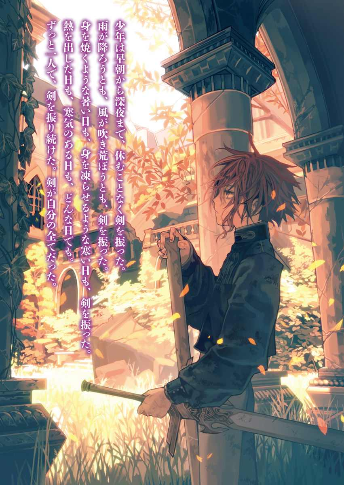
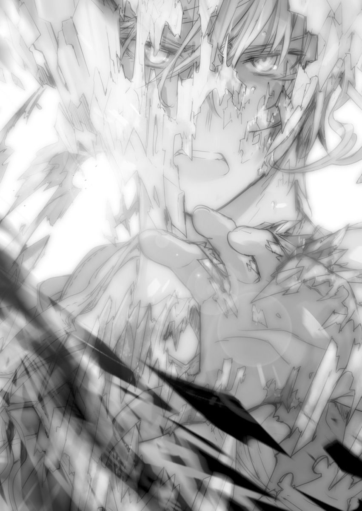

| 異世界迷宮の最深部を目指そう 6 | |
| 割内タリサ | |
| オーバーラップ (2016) | |


イラスト／鵜飼沙樹
１．番外戦
『舞闘大会』準決勝が終わった。
ラスティアラチームの棄権によって、ラウラヴィア国代表の僕が決勝戦進出となった。
それはつまり、ラスティアラと共に組み立てていた計画が成功し、僕の記憶を封じていた『腕輪』が破壊されたということに他ならない。
いま僕には、異世界で生きた『ジークフリート・ヴィジター』と『アイカワ・カナミ』の両方の記憶がある。
どちらも苦い記憶ばかりで、準決勝の試合ではかなりの醜態を見せてしまった。おそらく、連合国で向こう一ヶ月は笑いものにされるに違いない。
けれど、構わない。
代わりに、僕は『本当の願い』を見つけることができた。
もう噓もなければ、人生を弄ばれることもない。そう思えば安い代償だろう。
何より心から信頼できる仲間たち――ラスティアラとディアの二人と再会できた。
準決勝の試合の後、すぐに僕は『舞闘大会』を乗り越えるための計画を話した。
とある事情があって、その計画は余りに断片的で不完全なものだったが、ラスティアラは僕を信頼して従ってくれた。
ラスティアラたちとは別行動を取り、僕は疲労困憊の身体に鞭打って闘技場から出る。
薄暗い回廊を抜け、選手の控え室に帰ってくる。
当然、そこには試合前に見送ってくれたリーパーが待っていた。
彼女は無邪気な笑顔を見せて、開口一番に祝福してくれる。
「お兄ちゃん、おめでとうっ。やっと『本当の願い』を取り戻したね」
しかし、その言葉を素直に喜べない。
頭の中で警鐘が鳴り続けている。かつての失敗の経験を思い出したことで、リーパーの祝福の裏に潜む真意を正確に感じ取れてしまう。例の『繫がり』から伝わる感情から、彼女と相容れないことがわかる。
目の前の少女が、あのパリンクロンに匹敵する難敵であると確信できてしまう。
「ああ、ありがとう。ちょっと辛い記憶だったけど、取り戻せて良かった。リーパーが手伝ってくれたおかげだ」
「ひひっ、よかった。これでお兄ちゃんは自分の願いを間違えないで済むねっ」
リーパーは嬉しそうに笑う。
しかし、その幼い外見と愛くるしい笑顔に騙されてはいけない。
彼女は見た目に反して、実に老獪だ。
これは今日までのリーパーを見ての推測だが......おそらく、彼女が『繫がり』で得られるものは感情だけではない。そして、『繫がり』の数が一本だけとも誰も言っていない。
リーパーは大量の『繫がり』を作ることで、多くの人間から経験と感情を学んでいる可能性がある。
もし『繫がり』の上限がないのなら、その対象はラウラヴィア国民全て。
たった数日で、数百年分もの人生経験を得ることも可能だろう。
リーパーが年齢に見合わない態度を見せるときがあるのは、これが理由だ。
「ああ、これで『本当の願い』を間違えないですむ。あの竜討伐の夜、リーパーが背中を押してくれたおかげだ。本当にありがとうな」
「ううん、アタシは何もしてないよ。アタシはアタシのことで一杯一杯だったからね」
和やかにお礼を言う中、リーパーの一挙一動を《ディメンション》で観察する。
その言葉通り、リーパーは何もしていない――ように見える。
見えるだけだ。何もしていないようで、確実に色々な人の背中を押している。
そのやり口がパリンクロンと似ていると思った。
自然とパリンクロンとも『繫がり』があるのではないかと考える。
......いつからだ？
一昨日、「リーパーがラスティアラの人捜しに協力した」と聞いた。
ラスティアラが捜していたのはパリンクロンのはずだ。もう僕を見つけ終えていたのだから、次は敵の居場所を確認したかったに違いない。そして、頼まれたリーパーは次元魔法《ディメンション》でパリンクロン捜しを手伝った。その結果、レイル邸は更地になり、パリンクロンは国外に逃げ出した。その戦いにリーパーは居合わせていた。
そのとき、リーパーはパリンクロンと接触したとしか考えられない――
「それでさ、お兄ちゃん。記憶を取り戻したお兄ちゃんは、これからどうするの？」
――たったそれだけで、不安が拭いきれなくなる。
リーパーの願いは『ローウェンを守ること』。
その想いだけは噓じゃないと、首筋にある紋様の『繫がり』から伝わってくる。
だからこそ、リーパーと僕は相容れない。
ローウェンを消せる力を持つ僕を、間違いなく彼女は疎んでいる。
ゆえにリーパーは終始、僕を連合国から追い出すことだけを考えて行動していた。
スノウの自立を促したのも、僕の記憶の回復を手伝ったのも――全て、僕をローウェンから遠ざけるため。
それを確信した僕は、注意深く話を切り出す。
「......これから、スノウと会って話をするよ」
「スノウお姉ちゃんとお話......？ いいの？ お兄ちゃんはスノウお姉ちゃん自身の力でウォーカー家の問題を解決してほしかったんでしょ？」
「ああ、そうだ......。けど、何も言わずに去るのもひどいだろ？ 最後に話くらいはしないとさ......」
「去る――。......そうだね。最後くらいは話したほうがいいかもね。お兄ちゃんは憂いなく、あの悪ーいパリンクロンのやつを追わないといけないんだもん」
「ああ、僕はパリンクロンを絶対に許せないからな。......けど、よくパリンクロンのことを知ってたな。誰から聞いたんだ？」
「それは......レイルさんだよ。ローウェンがお兄ちゃんの過去の話をレイルさんから聞いたとき、アタシも居たんだよ。だから、パリンクロンって人が、お兄ちゃんの記憶を封印した人だって知ってる」
「そっか。それで僕の過去のことに詳しいんだな」
僕は注意深く......しかし、できるだけ無感情に話をする。
おそらく、それはリーパーも同じだろう。
僕たちは感情が高ぶると『繫がり』のせいで思考が相手に漏れてしまう。ゆえに、噓だらけの話で牽制し合っている。
『聖誕祭の経験を得た僕』と『数百年分もの経験を得たリーパー』。
三十層で出会ったときの純真無垢だった二人はもういない。
一切表情を変えず、淡々と腹を探り合う。
「でも、お兄ちゃんの体調は大丈夫？ そんなに急がなくても、もう記憶は戻ったんだから、数日ほど休んでからでもよくないかな？」
「いや、すぐにでもパリンクロンを追いたいんだ。だから、いますぐスノウのところへ行ってくるよ」
「そっか。パリンクロンって人を追いたいなら......仕方ないね」
早急にスノウを説得したいというのは噓ではない。
いま僕は、かつてのマリアのときと同じ過ちを繰り返しかけている。スノウなら「スノウ自身の力で乗り越えてくれるはず」なんて甘い期待にすがって、彼女の問題から逃げ続けていた。スノウと本気で向き合おうとしていなかった。
けれど、もう逃げるのは止めると決めた。今度こそ、間に合ってみせる。
「リーパー。《ディメンション》でスノウを捜してくれないか？ 見ての通り、僕の魔力はすっからかんだからさ」
「......うん、わかった。――ええっと......、いまスノウお姉ちゃんは、西エリアの医療船にいるね。案内してあげるよ」
リーパーは少しだけ考えたが、スノウを捜してくれた。
居場所を知った僕は、すぐに歩き出す。
「ありがとう。それじゃあ、急いで行こう」
その後ろをリーパーはついてくる。
後ろを見なくてもわかる。リーパーも僕の一挙一動を観察している。鋭い視線が背中に突き刺さっているのを感じる。
僕は慎重に、平常心で歩き続けた。
いまのところ、ラスティアラに話した計画通りに進んでいる。リーパーに《ディメンション》を使わせることで、少しでも魔力を蓄えることができている。
こうして、西エリアまで辿りつき、医療船に乗り込んだ僕は『エピックシーカー』のギルドマスターとしての肩書きを使って、スノウの部屋を係員から聞き出した。
ちなみに、リーパーは医療船の甲板で待たせた。
最後だからスノウと二人きりで話をしたいと言って、無理やり納得させたのだ。とはいえ、《ディメンション》を強めに展開されれば、中の様子など丸分かりだろう。だからこそ、リーパーは大人しく甲板で待っている。まだ安心はできない。
スノウの説得は難しい上に、時間も少ない。それでも絶対に失敗はしないと心に決めて、僕は歩く。
そして、スノウの病室の前まで辿りつき――そこで僕は『エピックシーカー』のギルドメンバーであるテイリさんを見つける。
スノウの看病のために付き添っていたのだろう。
僕は複雑な気持ちで彼女に話しかける。記憶が戻ったとはいえ、それでも『エピックシーカー』で過ごした楽しい思い出が消えたわけではない。
「テイリさん......」
「......カ、カナミ君？ 来てくれたのね！」
テイリさんは暗かった顔を明るくする。
ここに僕が現れたのは意外だったのだろう。歓喜と驚きが半分ずつに見える。
「はい。スノウと最後に話をしようと思ったので......」
「......最後？ これで最後なの？」
「はい」
最後になるかはわからない。
けれど、リーパーが近くにいる以上、そういう方向で話を進めていく。
「お願い、カナミ君......。スノウのことをわかってあげて......。あの子も必死だったの......。ずっと、あの子なりに必死に戦ってたの......。それを聞いて......！」
テイリさんはスノウの味方をする。
その姿は、まるで妹を守る姉のようにも見えた。
これが僕と話せる最後のチャンスだと思ったのか、懸命にスノウの過去を語る。
「......昔、スノウは『竜化』するほど本気になったことが三度あったわ。けど、そのどれもが最悪の結果を呼んだの。一度目は故郷を滅ぼして、二度目は憧れていた『英雄』を殺して、三度目は共に逃げてくれた親友を死なせてしまった。そして、昨日の試合が四度目。また大切なものをなくしたと、スノウは思ってるはずだわ......」
薄々とわかってはいた。スノウの人生は『失敗ばかりの人生』だ。
何度も間違え続けたせいで、何もかもを諦める癖がついてしまった。
少し間違えれば僕もそうなっていたかもしれないと思うと、他人事ではない。
「お願い、カナミ君。カナミ君は『英雄』なんでしょう？ スノウを助けてあげて......。ここでスノウが助からないと、誰も報われないの......。誰も......!!」
「すみません。それだけはできません。僕は『英雄』じゃありませんから......」
否定する。
それを聞いたテイリさんはとても残念そうに顔を歪ませ、ゆっくりと俯いた。
テイリさんは僕が英雄嫌いなのは知っていた。それでも僕にスノウの『英雄』をして欲しかったのだろう。
「......なら、カナミ君はスノウの何なの？」
「僕は......スノウのパートナーです。パートナーとして話をしてきます」
勘違いでなければ、最初僕とスノウは仕事のパートナーになれていたはずだ。
あの頃、スノウは僕にすがってもいなければ、『英雄』として見てもいなかった。あの関係こそが理想と思い、パートナーを自称する。
そして、小さく「そう、パートナー......」と呟くテイリさんを置いて、僕はスノウの待つ病室の扉を開け、中へ入る。
「スノウ、入るよ」
真っ白な部屋だった。
高級な白いベッドに、白で統一された家具。窓には白くて大きなカーテンが揺らめいている。
そのカーテンに青い髪を撫でられながら、スノウは窓から外を見ていた。
どこまでも広がる青い空を、眩しそうに見つめていた。
とても、眩しそうに......。
その光景は、燃え尽きた蠟燭を連想させた。
それほどまでに、スノウから気力を感じられない。
スノウはゆっくりと首を動かし、こちらを見て、一言だけ呟いた。
「カナミ......？」
全身に巻かれた白い包帯が目立つ。
ステータスを見る限り、外傷はないとわかる。しかし、外傷とは別の何かが、スノウの身体に残って蝕んでいる。『状態』には『竜化』とだけ書かれていた。
「ああ、僕だ。包帯だらけになったな......」
「......うん、ラスティアラ様にやられた」
「僕もだ。一緒だな」
「......見てはないけど、聞いてた。お互い、散々だった」
スノウは気だるそうに話す。
昨日まではあった執着心が、まるでなくなっている。
ラスティアラ戦での敗北をきっかけに、また全てを諦めたのかもしれない。
少し予想外だ。諦めの早いスノウとはいえ、あの尋常じゃない執着心があっさりと消えているのは不自然に感じた。
僕は予定との違いを感じ取り、会話の切り出し方を考え直していると、スノウが僕の二の腕あたりを指差してくる。
「......『腕輪』が、ない？」
『腕輪』があった場所を指している。
そして、次は苦笑いと共に確認をとる。
「......もう私のカナミじゃない？」
それに僕は短く答えていく。
「ああ」
「......私とカナミの世界は壊れた？」
「ああ」
「......そっか」
スノウは無表情で、淡々と話していく。
その様子は彼女と初めて出会ったとき――迷宮で学院の課題を行っていたときに近かった。スノウは喋る前に異様なほどの間を空け、本当にゆっくりと話す。
「......エルミラード・シッダルクとの試合で、カナミが私の婚約者であることを宣言したって人から聞いた。......決闘までして、あいつを退けたって」
「ああ、覚えてる。その通りだ」
「......それって、私と結婚を――」
「ごめん。あれはエルミラードのことを認めたくなかっただけで、スノウと結婚するためにしたことじゃないんだ」
「......そう、だよね。......えへへ、わかってた」
スノウは薄く笑った。
僅かな希望はあったけれど、期待すると辛いからしてなかった。そんな力のない笑みだ。
「......でもありがと。ちょっと猶予が延びたと思う」
スノウは「猶予」と言った。
その表現の仕方から、また何もかも諦めている気がする。
「......それでカナミは『エピックシーカー』をやめる？ ラウラヴィアから去る？」
「もうここにいる理由はない。近い内に他国へ行くよ」
「......そう」
悲しそうに――でも、当然のようにスノウは受け入れた。
そして、何も言わない。
カーテンを揺らすそよ風の音だけが、部屋の中を満たしていく。
「それで、スノウのほうはどうするんだ......？」
「諦める。もう何もしたくない。......諦めるべきなのは、私だったんだ」
聞かれるとわかっていたのだろう。
迷いなく、何もかもを諦めると即答した。
「......全部、不相応な夢だった。......私、また馬鹿なことしてた」
延々と自分を責め続け、最後に「ごめん、カナミ」と謝った。
前とは違う意味で見ていられなかった。
「また諦めるのか？」
「......これ以上は無理。どうすれば上手くいくかも、全然わからない。わからないから怖い。......もうどうでもいい。どうでもいいんだ」
話せば話すほど、スノウの目は虚ろになっていく。
僕はスノウが全ての力を失う前に、用意していた答えを口にする。
「僕は......ウォーカー家という貴族そのものがスノウを苦しめているって思う。......記憶を取り戻して、やっとはっきりと言える。自信を持って断言できる」
随分と遠回りな道のりだった。
最初から答えは持っていたはずなのに、こんなにも遅れてしまった。
いま、それを伝える。
「――スノウはウォーカー家にいるべきじゃない」
「......できないよ」
しかし、その渾身の答えはすり抜けていく。
スノウは首を振り、答える。
「......それはもう失敗したから」
「失敗した......？」
「......昔、本気になって逃げたせいで、大事な人をたくさん亡くした」
スノウの過去の話だ。
彼女が無気力になった理由を、やっとその口から聞く。
「......私は『最強』だから生き残るけど、他のみんなはそうじゃない。私のせいで、みんな死んだ」
『死』を淡々と他人事のように語る。
きっと本気で語れば、その重さに耐えられなくなるのだろう。だから、逃げながら語る。
「......ウォーカー家は『最強』の『英雄』だった私を逃す気なんてない。もし逃げたら、どんな非道な手を使っても、私を連れ戻す。あのときの記憶が、いまでもこびりついて離れない......。離れないの......」
スノウの抱えていた悩みと望みが、はっきりとしていく。
過去にスノウは失敗した。ウォーカー家から逃れられないと思い知った。だから、いかにウォーカー家で静かに生きるかを、ずっと模索していた。
その結果、ウォーカー家の全てを自分の婿――僕になすりつけるという手段を選んだ。
「......逃げようと考えると、身体が竦む。......私はウォーカー家で生きるしかない。そんなとき、パリンクロンが記憶のないカナミと会わせてくれた。カナミと一緒なら、パリンクロンに騙されてもいいって思った......。カナミとなら、ここでもやっていけるって思った......。思ってた......。結局、駄目だったけどね。えへへ......」
スノウの悲しそうな笑いを見て、僕も悲しくなる。
無防備に内情を話す姿が余りに痛々しい。
僕は前もって用意していた答えの続きを、すぐに伝える。
「スノウ。もう一度、逃げよう」
「もう一度......？」
「それがトラウマになってることはわかる。けど、もう一度だけ逃げよう。今度は僕やラスティアラたちと一緒に――」
「それって『英雄』が私をさらってくれるってこと......？」
スノウは無表情で、いつかの舞踏会のときと同じことを言う。
あのときのスノウは本気で僕に『英雄』を期待していた。けれど、いまのスノウは期待していない。断られることを待っている。そんな風に見えた。
当然だが、スノウの予想通りに、僕は首を振る。
そんな都合のいい『英雄』はどこにもいないのだから......。
「違う。スノウの意思で逃げるんだ。もし、スノウがそれを自分の意思で決めたのなら、僕は手助けする」
「......自分の意思で決める？ なんで？」
「じゃないと一方的な関係になるだろ？ そうじゃなくて、僕はスノウと対等な関係でいたいんだ。対等じゃないと、また間違える。また――」
僕は思い出す。
かつてマリアを一方的に救い上げ、一方的に助け、結局それは誰のためにもならなかったことを――それどころか、多くの不幸を呼んだことを。
脳裏に光景がフラッシュバックする。
聖誕祭の終わり――『煉獄』――燃え盛る火炎の中、多くのものを失った――
絶対に繰り返してはならないと身体が叫ぶ。
だから、僕は震えながら否定した。
「......カナミこそ様子が変だよ。......やっぱりカナミも私と同じだ。大失敗のせいで、トラウマを抱えてる。カナミも、そこから抜け出せないんだ」
スノウは震える僕を見て、笑いながら手を僕に伸ばした。
その彼女の手も、僕と同じように震えている。
「......カナミならわかるよね？ その失敗の記憶は、きっと死ぬまでこびりついて離れない。何をするときも、その記憶がちらつく。似たような場面に遭遇すると、身体が動かなくなる。二度と、私たちは本気で戦えない」
スノウは同意を求める。
死にたくなるような失敗を犯したもの同士、分かり合えると思っているのだろう。
けれど、僕はそれを受け入れるわけにはいかない。再度、強く否定する。
「違う......!! これはトラウマなんかじゃないんだ、スノウ。こんなものっ、考え方次第だ......！ 過去の過ちを悔やんで、怯えて竦むだけじゃない。過ちから学んで、繰り返さないようにすることだってできる！ だから、いまっ、スノウがやるべきことは、今度こそ強い意思を持って、ウォーカー家から抜け出すことだ!!」
叫ぶ僕にスノウは驚き、伸ばした手を戻して自分の肩を抱いた。
「......そ、そんなこと、できるわけない。私は三度も間違えたんだよ？ きっと次も失敗するに決まってる。......ねえ、なんで？ なんで、わかってくれないの......？」
スノウの声は震え――徐々に僕と同じように声を荒らげていく。
「繰り返しても無理に決まってる！ 故郷のみんなもっ、『エピックシーカー』の先輩たちもっ、一緒に逃げてくれた人たちもっ、みんな死んだのに！ みんなみんな死んだのに！ 私のせいで死んだのに！ 繰り返せるはずない!!」
僕が『いつかの煉獄の風景』を思い出しているように、スノウも『いつかの地獄の風景』を思い出しているのだろう。
震えて、怯えて、竦むから......何もかもを諦めたくなる。
その気持ちが、記憶の戻った僕には少しだけわかった。
「また私のせいで誰かが死ぬのは嫌......。一人だけ残るのは嫌......。そんな重い責任を背負うくらいなら、ここにいたほうがマシ......。もう何もしたくない......」
「スノウ。誰かが死ぬのが嫌なら、僕だけは絶対死なないって約束する」
「......この世に絶対なんてない。死なない人間なんていない。そんな約束、意味なんてない」
「そうかもしれない。でも、だからって諦めちゃ駄目だ......。自分を偽って、これからもここでずっと、そうやって生きていくのか？ それで本当にいいのか？」
「......それは――」
本当の望みを諦めるのは楽だろう。
諦めたほうが幸せかもしれない。
けれど、僕は諦めたくなかった。偽物の世界で生きたくないから、記憶を取り戻した。それが幸福から遠ざかるとわかっていても『腕輪』を壊した。
その選択を、いまでも僕は正しいと思っている。
「スノウ、自分の『本当の願い』を間違えちゃ駄目だ......」
結局、僕の言いたいことはそれだけだろう。
記憶を失っても、これだけは覚えていた。
リーパーにも伝わっていた強い意思。
その強い意思をもって、僕はスノウの代わりに答える。
「スノウの『本当の願い』は『ウォーカー家で生きること』じゃない。『ウォーカー家から逃げること』だ」
傲慢にも僕は他人の願いを決め付けた。
それを聞いたスノウは顔を歪ませる。
図星だからだ。
きっと、それはずっと考えないようにしてきた『本当の願い』。
考えないようにすれば苦しまなくてすむから、ずっと逃げてきた感情。
それを思い出させられ、激昂する。
「そ、そんなことわかってる！ カナミに言われなくても、わかってる！ 私はここから逃げたい!!」
怒りで拳を握り締め、叫ぶ。
「――ここは、嫌だァ!!」
全てを諦めていたスノウに、火が灯る。
言葉の前に特有の間もなく、思ったことをすぐ口に出している本気のスノウだ。
僕は経験から、いまが好機だと確信する。
そう、経験――過去の失敗から僕は学んだ――
今度こそ間違えない。
心を開いてもらうには、まず僕が心を開かないと駄目だ。
「なら、その願いを本気で叶えればいい！ 今度こそ、ウォーカー家にもパリンクロンにも、誰にも惑わされずっ、自分の意思で自分の願いを叶えるんだ！ スノウ!!」
「でもっ、また失敗したらどうするの!? 本気になって失敗すれば、本気で悲しくなる。本気で悔しくて、本気で不幸になる。そんなの嫌......、絶対に嫌!!」
「だからって動かないと何も変わらない！ 本気で逃げたいなら、自分から動くしかない！」
「自分から動かなくてもっ、変わるかもしれない！ 誰かが助けてくれるかもしれない！ いつかのフランのように！ いつかのラスティアラ様のように！ あれは羨ましかった！ すごく羨ましかった！ 私はずっと彼女たちが羨ましくて堪らない！ なんで、あの人たちには助けが来て、私には誰も助けが来なかったの!? ウォーカー家なんかにいたくない！ いたくないに決まってる！ けどっ、今日まで誰もっ、助けなんて来なかったぁっ!! 誰も迎えに来てくれなかったぁああぁあああっ――!!」
僕とスノウは本気で言葉をぶつけ合う。
そこには計算高くて言い訳ばかりの僕も、卑屈でご機嫌取りばかりのスノウもいない。
ありのままの二人が叫び合っていた。
「助けなんてないのが普通だっ！ 僕だって誰も来なかったから、ああなった！」
「助けてた本人がそこに居て、期待しないはずない！ カナミは私のモノになってくれると思ったのに！ カナミに期待してたのに！ 本気で期待してたから、期待を裏切られたときっ、本気で悲しかった！ とっても苦しかった！ 本気になって本気で苦しむのは、もう嫌!!」
「けど、本気にならないと、本気で幸せになれないだろ！ ずっと、このままでいいのか!? ウォーカー家に怯えて、騙し騙し生きていくのがスノウの本当の望みじゃないだろ!!」
「私だって、嬉しいことを嬉しいって本気で感じたい......！ でも、もう無理だよ。私は臆病になったから......。苦しいことが恐ろしくて、すぐ逃げ出してしまう！ 足が勝手に竦む！ 心が勝手に目を逸らす！ 生きるのが怖い！ みんなのようには、もうっ、やれない!!」
スノウは何もかもを吐き出していた。
全力で喉を震わせ、両の拳を握り締め、自分の運命を呪う。
ずっと逃げ続けた感情と向かい合ってしまい、スノウは顔を歪ませ――そして、涙を流す。ぼろぼろと大粒の涙を流しながら、身体の震えを抑えきれず、膝を折ってしまう。
「ほ、ほら......。本気にさせるから......、どうしようもない涙が流れる......」
涙を拭いながら、僕を責め続ける。
「自分の本心なんて知りたくなかった......。認めさえしなければ、苦しまなくてもすんだのに......。こんなの辛いだけ......。本気で辛いだけ......」
スノウは涙を止めることが出来ず、子どものように震え続ける。
「でも、それがスノウの本心なんだ。ずっとスノウは泣いていたんだ」
ずっと――出会ったときから、ずっとだ。
僕は最後の確認を行う。
「スノウは待っていたんだな......。ここから連れ出してくれる誰かを......」
「うん、カナミをずっと待ってた......。きっと、スノウ・ウォーカーになったときから、ずっと待ってた――」
スノウは涙の浮かんだ瞳で、僕を見上げた。
その瞳には、もう僕だけしか映っていなかった。
僕がいないと生きていけない。そこまでの執着心がそこに潜んでいる。本音でぶつかり合い、隠していた狂気が蘇って来ている。
けれど、その狂気を受け入れることはできない。
「――スノウ、何度でも言うよ。無条件で助けてくれる『英雄』なんていない。少なくとも僕は違う。違うんだ......」
僕は断るしかない。『英雄』でないと言うしかない。
「......みたいだね。カナミは『本当の英雄』じゃない。......そして、『私の英雄』ですらない......」
その否定を、スノウは受け入れた。
互いの本心を吐き出し合い、傷つけ合い、ようやくスノウは僕を『英雄』でないと認めた。そして、いまこそ、やっと僕は提案できる。
「僕は『英雄』じゃなくて、スノウのパートナーでいたいんだ。一方的にスノウを助けるだけなんてことはしたくない。僕はスノウの力になって、スノウも僕の力になる。そんな対等な関係に、きっと僕たちならなれる」
「......パートナー？」
スノウは初めて耳にしたかのように聞き返す。
「ああ、前にスノウがそう僕をエルミラードのやつに紹介しただろ？ 僕たちはパートナーだって。僕はそれが一番良い関係だと思ってる。パートナーの僕たちはどちらかが一方的に助けたりはしない。互いに傍で支え合うんだ」
「傍で支え......合う......」
「『英雄』じゃなくてパートナーとしてなら、僕はスノウの傍を離れない。約束する。ウォーカー家のどんな邪魔が入ろうとも、最後まで支える。......だから、スノウは恐れず自分自身の力で戦ってくれ。自分の『本当の願い』を求めて戦ってくれ」
僕はスノウに『英雄』として見られたくなかった。
舞踏会の貴族たちが、僕という『英雄』を利用しようとしたときと同じ目で見られるのは嫌だった。それだけが、スノウに求めるパートナーの条件だった。
スノウはそれを理解し、僕を見る目を変える。
そして、涙を拭って、言葉を紡ぐ。
「パートナーなら、ほんとにずっと一緒？」
「ああ、ほんとだ」
「ほんとに絶対死なない？」
「ああ、死なない」
「パートナーとしてなら、助けてくれるの？」
「そのつもりだ。その代わり、スノウもサボらずに僕を助けろよ？」
スノウも最後の確認を行っている。
僕は彼女を不安にさせないよう、自信を持って頷いていく。
「な、なら、パートナーなら――」
そして、聞かれる。
いつかの願いを、もう一度――
「私が望めば、結婚してくれる？」
「それは......」
心臓が破裂しそうなほど、大きく脈打つ。
そのパートナーの枠を超えた要望を前に僕は――首を振った。
それだけは頷くことが出来なかった。
スノウは表情を崩し、目を伏せる。
「やっぱり、そこだけは首を振るよね......。うぅ、本気で悔しい......。悔しいな......」
けれど、いつかとは反応がまるで違った。
驚きもしなければ、固まりもしない。
とても清々しそうに――やっと答えを得たかのように――穏やかに、笑った。
「ああ、やっとわかった。やっぱり私は――」
微笑んで、告白する。
「ラスティアラ様の言うとおり、私はカナミが本気で好きなんだ。好きだったから、あんなにも結婚したがってたんだ」
「え？」
今度は僕が驚き、固まる番だった。
その唐突な真っ直ぐすぎる告白に啞然とする。
聞けば、その原因はラスティアラらしい。
しかし、僕はラスティアラから何も聞いていない......。スノウを説得したとは聞いていたが、ここまで突っ込んだ話をしたとは聞いていない......。
ただ、楽しそうに恋心の話をスノウに言い聞かせるラスティアラは安易に想像できた。
僕の許容範囲を超えて、ぐんぐんとスノウ説得の難易度が上がっていくのを感じる。
「ラスティアラ様が私の『英雄』になってくれるって言ってくれたとき、即答できなかった理由が、いまはっきりとわかったよ。私はカナミじゃないと嫌だったんだ。『英雄』だからとか、都合がいいからとかじゃなくて、カナミがカナミだから、私はカナミを『私の英雄』にしたかったんだ」
けれど、焦る僕とは対照的に、スノウはかつてないほど穏やかだった。
心を開いて、独白し続けていく。
「でも私......、カナミが好きだってわかっても、どうすればいいかわからなかった。上手くいく自信なんて全然なかったから、全部諦めようと思ってた。このままカナミがいなくなれば、本気で悲しいことにはならないって思ったから......！ 忘れて、なかったことにすれば一番楽だと思った......！ 思った......けどっ、やっぱり駄目!!」
スノウの特徴である物臭なところも、卑屈なところも全くない。
どこにでもいる女の子のように、少しだけ頰を紅潮させて喋り続ける。
その表情は、いままでで一番可愛らしかった。
それを見る僕の顔も赤くなっていくのがわかる。
「本気になりたくないけどっ、この感情だけは抑えきれない！ ずっと勘違いしてたけど、やっと気づいた！ この、カナミと離れたくないって気持ちは、カナミが好きってことだったんだ......！ 私はカナミが、大好き!!」
憑き物が落ちたかのように、純真無垢に笑って告白した。
その真っ直ぐな告白に、僕は噓をつけないと思った。
彼女の笑顔が崩れるとわかっていても、絶対に。
「ありがとう、スノウ。でも、僕は――」
「大丈夫。カナミが私を好きじゃないのは知ってるよ。だって、私がしてきたのは――」
しかし、僕の意を決した否定が言い切られる前に、スノウは笑顔のままで受け入れた。
「好きとか嫌いとか無視して、カナミを私のモノにしようとしただけ。そんなやり方で、カナミが私のことを好きになるはずない......。それくらいは馬鹿な私でもわかる」
穏やかに自分のやってきたことを受け入れ、それを反省している。
まだスノウの身体の震えは止まっていない。
「それでも、私はカナミに好かれたい......。いまは嫌われていても、いつかは好きって言ってもらいたい......。だから、本気で頑張る。好きな人のために、私も頑張ってみる」
けれど、その震えを必死に抑え、自分の両の足でしっかりと立って、いままでのスノウでは考えられない言葉を口にした。
「もう私は自分を偽らない......。私は私らしく、私の『本当の願い』を叶える......」
スノウは自分を奮い立たせる。
自分の願いをスノウ自身が叶えようと――『舞闘大会』の前に僕が言ったことを、実践しようとしていた。
「私の子どもの頃の願い......。最初は竜人の里から出て、広い世界で冒険したかっただけだったんだ。『栄光』を手にすれば、一人立ちの許しが得られるって思ってた。『英雄』になれば、人生が変わるような気がしてた」
清々しい顔でスノウは、今日まで認めようとしなかった自分の過ちを見直していく。
「けど、そんなものに何の意味もなかった。私に何かを与えるどころか、あらゆるものを奪っていった。『最強』の『英雄』になった私は、全てを失っただけ。ウォーカー家に飼われるだけの人生が待ってた......」
過去、スノウは『栄光』に辿りついた。『英雄』になったことだってあった。
そして、それが失敗だったことを認めていく。
「私、もう一度挑戦するよ。私はここから出たい。解放されたい。誰かのためじゃなくて自分のために、あの空へ――遠くへ行きたい！ ちっさな頃の私の願いは、本当にそれだけだったんだから!!」
スノウは白いカーテンの揺れる窓に目を向けた。
願ったのは『栄光』じゃない。もう『英雄』を待ちもしない。もっとささやかな願いを叶えるため、どこまでも広がる雲一つない青い空を見て微笑んだ。
そして、その穏やかな目を僕にも向ける。
「やっと気づけた......。ありがとう、カナミ。『英雄』でも、『私の英雄』でもない。『私の好きな人』......」
こうして、やっと僕とスノウは互いを理解し合った。
当初の計画とは全く違う結果になったが、それでもスノウは自分の力で立ち、戦うことを決めた。
スノウはベッドを降りて、歩き出す。自分の意思で――
「いまから、私はウォーカー家と決別しに行く......！ カナミも一緒に来てくれる？」
そして、ドアに手をかける前に振り向き、僕を誘った。
綺麗な空色の髪を舞わせ、透き通った目で僕を見つめていた。
「ああ、一緒に行こう」
そのパートナーからの誘いに、僕が断る理由はなかった。
スノウの震える身体を支えるのは、僕の役目だ。
僕は彼女と同じ表情で頷いて、一緒に部屋を出ていく。
――ようやく、僕たちはパリンクロンの用意した『牢獄』の出口に向かって、一歩踏み出すことができた。
その最初の一歩目は、他でもないスノウ自身の力で進んだ。
スノウはスノウ自身の力で、自分を助けることができた。
それだけの意思と力があった。あとは、それを周囲に証明するだけだ――
◆◆◆◆◆
スノウと僕は脇目を振ることなく、真っ直ぐウォーカー家現当主のいる船に向かう。
大貴族の当主であるスノウの義母は、当然のように中央の『ヴアルフウラ』の高級船の最上階にいた。
宿泊船の中で最高の贅沢を誇る一室の中、その中央へ置かれた椅子にスノウの義母は優雅に座っていた。周囲には多くの侍従たちと屈強な警備兵たちが控えている。
もちろん、ウォーカー家の猛者たちも揃っている。
その面々に対して、僕とスノウは二人だけで向き合う。
人生最大の敵と相対するスノウは、微笑んでいた。その身体の震えを必死に隠して、自分の義母と向かい合っている。
僕は騎士のように、スノウの後ろに控えて見守る。
いつでも『持ち物』から剣を抜ける構えだ。何があってもスノウを守る。そのために、僕はここにいる。
そして、その張り詰めた空気の中、スノウは話を切り出す。
逃げることなく核心から、はっきりと言う。
「――すみません、お義母様。私はウォーカー家から出て行きます」
それを聞いたウォーカー家当主は、駄々をこねる子どもを見るかのように溜め息をつく。
「はあ......。スノウさん、またですか......」
その告白に驚きはなかったようだ。
部屋に入ってきたときのスノウの表情を見て、この話を予期していたのだろう。義理とはいえ親子だ。顔を見れば、相手の考えていることがそれなりにわかるようだ。
「それで、ウォーカー家から逃げてどうするのです？ かつて、グレンに全てを押し付けて逃げたとき、結局は連れ戻されたのをお忘れですか？」
義母の言葉にスノウは息を呑む。
きっと、かつての失敗のトラウマが、いまも脳裏をよぎっているはずだ。
「スノウさん、いい加減に自分自身の使命と向き合いなさい。その血の力を、世界の為、国の為、ウォーカー家の為に活かすのです。それがあなたの人生の充足に繫がると、なぜわからないのですか？」
ウォーカー家当主は、粛々と命令する。
スノウに人形であれと言う。飼われ続けろと言う。
それにスノウは、声を張って対抗する。
「――そ、そういうのは!!」
ウォーカー家の圧力に負けぬように、その身体の震えを払うように叫ぶ。
「そういうのは、もっと出来た人間に言ってください！ 私にはできません！ 私なんて、ちょっと腕っ節が強くて、翼があるだけの弱い人間です！ こんな大貴族の義務を果たすことは絶対にできません！ 私は貴族のようにはやれない!!」
情けなくも、正直に言った。
そのスノウの飾ることのない言葉を聞き、ウォーカー家当主は目を見開く。
「私みたいなのがこんなところでどれだけがんばっても、人生の充足に繫がる気なんて、ちっともしません！ 幸せじゃない人生なんて、生きてる意味がない！ ウォーカー家は狭苦しくて、私には息が詰まる！ 貴族なんて嫌い！ 大嫌い！ ここは私の居場所じゃない!!」
「......いいえ、そんなことありません。ウォーカー家こそがスノウさんの生きる場所です。ここを離れれば後悔しますよ、スノウさん。あなたのために言っているのです。必ず、後悔します」
ウォーカー家当主は動揺を一瞬で持ち直し、強い口調で脅す。
「こ、後悔なんてずっとしてます！ いまさら少し増えたところで関係ありません！ だから、私は何度でも逃げます！ 逃げ出します！ たとえ、この先また失敗してもっ、何度だって逃げると決めました！ 逃げ出して後悔して、投げ出して後悔して、後悔し続けてもっ、私は何度だって逃げてみせます!!」
けれど、スノウは揺るがない。
無様だろうが、滑稽だろうが、弱い自分を奮い立たせ、自分の『本当の願い』を貫く。
「愚かな......。何度繰り返そうと、結果は変わらないというのに......」
「愚かでも、何度だって繰り返します！ 私の情けなさを舐めないでくださいっ、ウォーカー家当主!! 愚かに同じ失敗を繰り返してでも、私は私らしくあります！ そっちが音をあげるまで、何度でも逃げる!! 今度こそ私は諦めない!!」
その叫びは、ただの叫びではない。
魔力のこもった『竜の咆哮』に近かった。
ウォーカー家当主は僅かに表情を変える。
周囲を取り囲んでいる人たちは、その波動を受けて、たじろいだ。
「誇りなんて一つもない私だけど、これでも竜の末裔です！ ――いつまでも籠の中で大人しいと思うなっ！ 後悔して諦めるのは、そっちだぁあァア!!」
その最後の叫びは、もはや振動の魔法と化していた。
部屋の調度品を全て破損させ、部屋どころか船を揺るがし、周囲の人間を後退させる。
その中心でスノウとウォーカー家当主は睨み合う。
「はぁ、はぁっ......」
息切れしているスノウを、ウォーカー家当主は静かに見つめていた。
ウォーカー家当主の表情は読めない。大貴族の長として、スノウという強大な力を前にしても一歩も退かなかった。
話すことがなくなったスノウは、顔をこちらに向ける。
不安そうな顔を僕だけに向ける。
「ねえ、カナミ......。こんな私だけど一緒に居ていい......？」
スノウはウォーカー家に対しては何の心配もしていないが、僕の反応だけは心配だったようだ。
僕はスノウのせっかくの晴れ舞台を曇らせないように、悠然と答える。
「ああ、もちろん。相変わらず最低なことを言ってる気はするけど......、僕はこっちのスノウのほうが好きだな......。前よりも、ずっとわかりやすいし。なによりスノウらしい」
「えへへ......。こっちのほうがカナミは好きなんだ......。ちょっと嬉しい」
スノウは笑った。
卑屈そうにではなく、ただ純粋に。
そのやり取りを見て、やっとウォーカー家当主は口を開く。
「......そこの騎士がスノウさんの支えになっているのですね」
僕を睨む。冷静に僕こそが真の敵と判断したようだ。
「仕方ありません。しばらくスノウさんはウォーカー家で預かることにしましょう。今度は容赦しませんよ。その頭が冷えるまで、じっくりとお話をさせてもらいましょう」
そして、お話と称し、スノウを捕らえようとする。
やっと僕の出番だ。僕はスノウの横に立って、その脅しに応える。
「ご当主様。いまここで、スノウを捕縛するつもりですか？」
「捕縛とは人聞きが悪い。家族としてお話ししようとしているだけです」
「嫌がるスノウを捕まえるというのなら、人を呼びます。試合に負けはしましたが、スノウは『舞闘大会』の出場者です。その自由は連合国が保障してくれています。たとえ、ウォーカー家がラウラヴィア国と繫がっていようと、他四国は違うでしょう？ まあ、他四国と争うつもりなら、止めはしませんが」
「......『舞闘大会』のルールを利用しますか。それは少しだけ困りますね」
ウォーカー家当主は素直に引き下がる。
いまの発言は僕の出方を確かめるものだったようだ。もちろん、まだ脅しは止めない。
「しかし、『舞闘大会』が終われば、その瞬間、あなたたちはラウラヴィアの精鋭たちに囲まれることでしょう。そして、たとえその包囲から上手く逃げ出したとしても、ウォーカー家の手は緩みません。きっと、すぐにスノウさんはウォーカー家の力に折れて、帰って来ます。親である私にはわかります」
「いいえ、逆です。あなたたちこそ、僕たちの力に折れてスノウを諦める。僕にはわかる」
僕は即答する。
今日まで溜まった貴族への恨みが、言葉を辛辣なものに変えた。
それを聞いたウォーカー家当主は、顔をしかめる。
ようやく、その余裕に亀裂が入ったように見える。
「強気な子......。流石、あの『神童』と『最強』の選んだ『英雄』ね......」
「勘違いしないでください。僕は『英雄』じゃないです。僕がやっていることは、友人のスノウを贔屓してるだけ。こんなのが『英雄』なわけないでしょう？ 僕はただのスノウのパートナーですよ」
「......本当に不愉快な子。あなたみたいな存在が、『ただの人間』なわけないでしょう」
ウォーカー家当主は口を尖らせ、僕を非難する。
その後、盛大な溜め息をついてから、ゆっくりと言葉を吐いていく。
「ふう......。なら、とりあえずはスノウさんをあなたに預けましょう。しかし、スノウさんはウォーカー家の英雄です。絶対に返してもらいます。それをお忘れなく......」
「ええ、忘れません。ただ、死ぬまでお借りすることになると思うので、先に謝っておきます。すみません、ウォーカーさん」
「......皮肉な子。......嫌われたものですね。私は『英雄』然としたあなたが嫌いではありませんのに」
「重ね重ねすみません。僕は『貴族』然としたあなたが好きではありませんので」
少々八つ当たり気味だが、僕は貴族への恨みをもってウォーカー家当主を否定した。
それを聞いたウォーカー家当主は張った肩をすくめ、背中を椅子に預ける。
「......行きなさい」
そして、僕たちに退出を促す。
僕とスノウは特に逆らう理由もないので、言われるがままに退出しようとする。
しかし、僕たちが部屋から出る瞬間――ウォーカー家当主の最後の呟きが聞こえてきた。それは《ディメンション》のある僕にしか聞き取れない、とても小さな声だった。
「私は諦めませんよ。ウィルさん、グレンさん......。あの娘はあなたたちと違って、本当の『最強』。私の見つけた希望......。私の『最強』の『英雄』なのですから......」
それは異様なまでのスノウへの執着と、僕たちを逃さないという意思表示。
少し前のスノウの姿を思い出す。義理とはいえ、やはりスノウとウォーカー家当主は母娘だなと思いつつ、僕はスノウを連れて部屋から出て行く。
こうして、僕たちのウォーカー家への宣戦布告は終わった。
それはスノウの抱えていた問題が一つ解決した瞬間でもあった。
だが、まだ油断しない。僕は注意深く周囲を《ディメンション》で警戒しながら、ウォーカー家の縄張りである高級船から出ていく。
◆◆◆◆◆
「よ、よぉし......。逃げよー......。カナミも手助けしてくれるんだよね......？」
船から出たところで、スノウは途端に弱気になる。
義母に見せた勇ましい姿は見る影もなくなり、卑屈そうに僕の反応を窺う。
急に人は変われないなと思いながら、苦笑する。
「もちろん、手助けするよ。スノウを連れて行こうとするやつがいたら、僕が戦う。もうスノウは僕の仲間だからな」
「ラスティアラ様も協力してくれるかな......。どうかな......？」
「どうだろ。あいつは気まぐれだからな」
「え、えぇえ......？ ならさ、カナミから上手く頼んでくれないかな？ えへへ」
「そりゃ頼むくらいならいいけど......」
スノウの中では、ラスティアラも自分を守ってくれる人の勘定に入っているらしい。
僕はスノウがまた他人にすがりついているのを見て、少しばかり呆れる。そんな僕の反応を見たスノウは、胸を張りなおして自立しているところをアピールする。
「い、いやっ、もう一人でも大丈夫だよ？ 『英雄』がいてもいなくても関係ないっ、今度こそ逃げ切ってみせるよ！ けど、ちょっと不安なのも間違いないわけで......。どこへ逃げようかな？ とにかくラウラヴィア以外ならどこでもいいんだけど......」
スノウは怯えながらも率先して、前を歩き出す。
いまにも『ヴアルフウラ』から出て、国外に出奔しそうな勢いだ。
「スノウ、待ってくれ。まだ話さないといけないやつが結構いるんだ」
「え、え？ あれだけの啖呵を切った手前、すぐにでもお義母様から逃げたいんだけど......。正直、一緒の国に居るだけですごい怖い......」
「落ち着け。『舞闘大会』中の『ヴアルフウラ』内なら、ウォーカー家でもそう無理はできないだろ？」
「そうだけど......」
スノウはそわそわして、落ち着きがない。
慣れないことをしているため、こういうときにどうすればいいかわからないようだ。
「ちゃんとラスティアラたちにスノウの護衛を頼むから落ち着いてくれ。......あいつらと一緒なら心強いだろ？」
「心強いけど、あの人たちと一緒に居るとフーズヤーズからも狙われるんじゃ......？」
「そこは諦めろ。ぶっちゃけると、僕も色々と狙われてる」
「やっぱり、そうだよね......。うん、知ってた......」
仲間に誘っておいてなんだが、むしろ僕と一緒にいるせいで、スノウの状況は悪化している気がしないでもない。
落ち込むスノウに、これからの予定を僕は話していく。
「これから僕はマリアと話をしに行く。きっと、話し合いのあと『腕輪』を破壊することになると思う。ただ、僕の『腕輪』のことを考えると、マリアも反撃してくる可能性は高い。マリアの拘束に協力してくれ、スノウ」
「そっか。そういえば、妹さんも『腕輪』がついてたね。ん、面倒くさいけど、協力するよ。カナミに好かれたいからね」
スノウは当然のように好かれたいと言う。それが僕は気恥ずかしくて、少しだけ目を逸らしながら話を続ける。
「助かるよ。けど、マリアは強いから気をつけてくれ」
「え、強い？」
「下手をすれば、マリアはローウェンと同じくらい強いかもしれない。マリアは守護者『火の理を盗むもの』アルティの力を宿してるから......」
「守護者の力を――？ ......ど、どうしようかな。カナミには好かれたいけど、守護者相手はちょっと遠慮したいかも」
「いや、スノウは戦わなくても大丈夫なはずなんだ。一緒に迷宮潜ったときと同じで、スノウは控えていてくれるだけでいい。それだけで安心できるから」
「え、そうなの？ なら、行こうかな？」
迷宮探索のときを思い出す会話だ。本気で戦うと決めたとはいえ、スノウの心はまだまだ後ろ向きのようだ。
だが丁度いい。
諦めすぎず、執着しすぎていないスノウが一番安心して見ていられる。
「よし、決まりだ。いますぐ行こう。明日までにマリアを戻して、それで――」
「――それで？」
しかし、順調に進んでいた勢いを、言葉ごと遮られる。
いつの間にか、前方に闇がたちこめていた。そして、その闇の中からリーパーの声が聞こえてくる。
「明日までは急ぎすぎじゃないかな、お兄ちゃん？」
リーパーは姿を現す。
そして、行く手を遮るように立ち、笑顔で僕たちを祝福する。
「とりあえず、二人ともおめでとっ。やっと自分の気持ちに素直になれたね。二人とも羨ましいな......」
そこに偽りはないように感じる。
心から祝福し、心から羨ましがっている。
僕はリーパーの登場を予期していたが、スノウは別だ。驚いた表情で話しかける。
「リ、リーパー......？ やっぱり居たんだ......」
「うん、ずっと近くに居た。だから大体のことはわかってる」
リーパーはスノウに答え、すぐ僕に向き直る。
「随分と危ない橋を渡ったね、お兄ちゃん。あそこまで強引にスノウお姉ちゃんを説得するとは思わなかったよ。そこまでの熱があったなんて、全然感じ取れなかったな。お兄ちゃんはスノウお姉ちゃんが苦手だって勝手に思ってたから......」
「......確かにちょっと苦手だ。けど、最後になるかもしれなかったんだ。未練の残らないように、全力でぶつかり合うのは当然だろ？」
「ふうん......。未練の残らないように、かぁ......」
リーパーから笑顔が消え、真剣な表情で問いかけてくる。
「ねえ、お兄ちゃん。聞かせて。なんで、いますぐマリアお姉ちゃんのところへ行こうとしてるの？ ここは間をおいて、体調を整えてから行くべきだよね？ ほら、いまだってふらついてるよ？ マリアお姉ちゃんは強いよ？ 万全を期すなら、しっかりと眠って、明日戦うべきだよ」
リーパーの問いは当然だ。
いま僕は『舞闘大会』を勝ち上がる為に、体力を消耗している。一切の睡眠を取らず、飲まず食わずの上、ラスティアラと激戦を繰り広げた。
もしパリンクロン打倒が一番の目的ならば、ここで無理する意味はない。
僕の力もマリアの力も、パリンクロンを倒すのに必要だ。なのに、ここで無理をして、負傷するのは馬鹿らしい。
論理的に窘められ、僕は必死に言い繕う。
「......マリアは僕と同じように記憶を失ってる。記憶が欠けているっていうのはとても苦しいことなんだ。その辛さが僕にはよくわかる。だから、すぐにでもマリアの記憶を戻してあげたいと思うのが、そんなに変か？」
「うん、変。もし、ここでお兄ちゃんが返り討ちにあったら、マリアお姉ちゃんの記憶は一生戻らないんだよ？ マリアお姉ちゃんの記憶を戻すのに期限なんてないんだから、本当にマリアお姉ちゃんのことを思うなら、ここは少しでも成功率を上げて、万全の態勢で会いに行くべき。いまから会いに行くのは本当に不自然なんだよ」
「......冷静に考えれば、そうかもしれない。けど、感情で納得できないときってあるだろ？ 僕は感情的に、いますぐマリアの記憶を取り戻してやりたいんだ」
自分でも無理があると思う言い訳を重ねていく。
もちろん、リーパーは顔をしかめる。背で渦巻く闇が深まっていく。
僕への猜疑心が、そのまま闇になっているかのようだった。
「やっぱり、おかしい。『ジークフリート・ヴィジター』は合理的って聞いてたけど、いまのお兄ちゃんはちっとも理に適ってない。なんで、こうも強引にスノウお姉ちゃんを助けたの？ なんで、そんな疲労困憊の状態でマリアお姉ちゃんのところへ行くの？ ねえ、なんで？」
リーパーの闇より深い目が、僕を見つめる。
一切の噓を許さない疑いの目だった。
「そ、それは――」
「マリアお姉ちゃんを助けたあとも、ここでやることがあるから？」
僕が答える前に、リーパーは僕の本心を答えた。
それはつまり、リーパーは僕の狙いに気づいているということだった。
もう誤魔化せないとわかり、諦めて頷く。これ以上、取り繕うことはできなそうだ。
「ああ、そうだ」
「何をやるって言うの？ マリアお姉ちゃんを助けたら、もうラウラヴィアでやることはないよね？ 何の憂いもなく、パリンクロン・レガシィを目指せるよね？」
徐々にリーパーの表情が歪んでいく。
「やることはある」
「ないよ。ないから行ってよ。早くパリンクロンを追いかけてよ。お兄ちゃん、お願いだから......！」
その搾り出すかのようなリーパーの願いに対して、僕は首を横に振る。
それを見たリーパーは、堪えきれず叫ぶ。
叫んでしまう。
「――いいから！ アタシとローウェンを置いてってよ!!」
「――おまえたちを置いて行けるわけないだろ!!」
とうとう僕たちは取り繕うのを止めた。
「なんで......!? それどころじゃないんだよね!? 許せない敵がいるんだよね!? だったら、そっち行ってよ！ ローウェンのところには行っちゃダメっ!!」
「行くよ。僕はローウェンの親友だから、置いては行けない......」
「親友だから何!? これから何をするの!? もうローウェンは全部手に入れた！ 『最強』の『英雄』を倒し、『栄光』も得て、自分を偽ることも止めた！ もうお兄ちゃんの出番はないの!!」
「アルティのときは間違えたけど、今度は間違えない。今度こそ、僕が戦わないといけないんだ。きっと、それが守護者と相対した人間の役目だから......。その責任を僕は誰にもなすりつけはしない......。もう二度とっ!!」
ここで全てをリーパーに任せれば、マリアとアルティの時の再現になる。
その結末は『何に代えてもローウェンは僕と決闘しようとする』だろう。
「何を言ってるの、お兄ちゃん!? わからない！ アタシにはお兄ちゃんの言っていることがわからない！ 会えば、きっとローウェンは消えちゃうのに!! なのになんでっ、そこまでしてローウェンに会いに行くの!?」
「ローウェンが僕を待ってるんだ。......だから、会いに行く」
理由を聞いてきたリーパーに、僕は答えた。
「............っ!!」
それを聞き、リーパーは表情を固める。
時が止まったかのような一瞬が過ぎ、すぐにリーパーは笑顔を取り戻していく。
「......ひっ、ひひっ。そうだね。......ローウェンはお兄ちゃんを待ってる。その通りだよ」
笑顔だが、表情の影は深い。
自棄になったかのように笑いながら、リーパーは独白する。
「ずっとローウェンを見てきたアタシだからわかる。間違いないよ。ローウェンは、もうお兄ちゃんだけしか見てない。ローウェンは自分の願いがわからなくなってるから、自分を呼び起こした『英雄』に期待してる」
リーパーも僕と同じことを考えていた。
いや、ローウェンに関しては誰も勘違いしようはずがない。
彼は誰よりも純真に、自分の望みを言葉にしてきた。「アイカワ・カナミと『舞闘大会』の決勝で戦いたい」と、ずっと言ってきた。
「お兄ちゃんが答えを教えてくれるって信じて、ローウェンは『ヴアルフウラ』の頂点で待ってるんだ。きっと、いつまでも待ち続ける。けど、だからこそ、行っちゃダメ」
リーパーは笑いながら、苦しそうに首を横に振る。
「――だからこそ、ローウェンを裏切って。お兄ちゃん」
そして、僕に親友を裏切れと堂々とねだった。
そこに悪意はない。
全てはローウェンの為。そう思っているからこそ、リーパーは厄介だ。
「ローウェンの信頼と期待を裏切って。そうすれば、ローウェンは消えない。それどころか、新たな大きな心残りを作れるかもしれない。『未練』が増えれば、この先も安泰になる！ ずっとずっとローウェンと一緒にいられる!!」
リーパーは闇の中から、大鎌を取り出した。
初めて見たときとは別物だ。形状は以前と同じだが、大鎌を包む闇色の魔力が何倍にも膨れ上がっている。いまのリーパーの感情を表すかのように、禍々しく蠢いている。
「アタシは！ いまにも消えそうなローウェンなんて見たくない！ だからっ――!!」
大鎌を横に構えて、僕たちの行く道を塞ぐ。
それは「ここを通りたくば、自分を倒せ」という意思表示だろう。
それに対して、僕は『持ち物』から『クレセントペクトラズリの直剣』を取り出し、リーパーと同じように構える。
もう僕は覚悟している。リーパーと敵対する覚悟を――
「どくんだ、リーパー。僕は明日までにマリアを元に戻す。そして、ローウェンのところにも必ず行く」
「こんなにお願いしてるのに......！ それでも、お兄ちゃんは行くの......!?」
「ああ、その願いだけは聞けない」
「さっきはパリンクロンのところへ行くって言ってたのに......！ 噓つき......！」
「それはリーパーもだろう？」
噓をついていたのはお互い様だ。
それを指摘されたリーパーは眉をひそめ、開き直って笑う。
「......ひ、ひひっ、ひひひ。そうだね。アタシもだね、お兄ちゃん」
すっかりリーパーの無垢さは消えて、まるで老練な魔女のようだ。
目の前の少女は、もうかつての幼い子どもではない。
リーパーは落ち着いた様子で、話を続ける。
「ああ、保険で『繫がり』を残していたのは間違いだったみたいだね......。『繫がり』からお兄ちゃんの感情と行動を読めると思ったけど、そうでもなかったみたい。あと、アタシがお兄ちゃんのことを疎ましく思っているのが伝われば、自然と離れてくれるとも思ってたけど......。お兄ちゃんってば、嫌われててもお構いなしなんだからさ、もう......」
そして、今日までの策略を愚痴のように暴露して、大げさに失敗を嘆く。
「ああ、上手くいかないなぁ......。ほんと上手くいかない......」
だが、まだまだ余裕があるように見える。むしろ、老練な彼女は、こうなることを予感していた。
「――でも、それならアタシにも考えがあるよ」
このときのための手札をまだ残していると確信させる一言を告げて、リーパーは後方の闇に紛れて――消えた。
例の瞬間移動能力だ。周囲にたちこめていた闇は搔き消え、僕とスノウだけが残される。
「き、消えた......？ カナミ、リーパーを行かせてよかったの......？」
「大丈夫。たぶん、リーパーは『エピックシーカー』本拠にいるマリアのところへ向かったはずだから......」
「妹さんのところへ......？」
そう誘導するために、僕はスノウと先に会った。
スノウを先に味方につければ、リーパーはマリアを手駒に変えるために動くという確信があった。そして、あのマリアならば、絶対にリーパーの思惑通りにいかないとも確信している。
『火の理を盗むもの』と戦った記憶を、いまでも鮮明に思い出せる。
アルティに勝ったのは僕じゃない。マリアだ。
あの『煉獄』の中、自分の両目すらも抉り取って「前に進む」と言ったマリアは、きっと『自分の願いを間違えない』。
「......改めて頼む、スノウ。一緒にリーパーと戦ってくれ。パートナーとして協力して欲しい」
僕は当初の計画に合わせて、スノウに『死神』リーパー相手の共闘を依頼する。
「パートナーとして......、協力......」
「ああ、僕が一方的にスノウを守るだけじゃない。スノウにも僕を守って欲しいんだ」
「それが対等な関係ってことなんだね......。それなら仕方ないかな......。うん。そこから始めよっか。私とカナミのやり直しを......」
スノウの回答は快いものだった。
てっきり先ほどのように渋ると思っていたが、嬉しい誤算だ。
「今度はやる気だな。マリア相手のときはあんなに嫌がってたのに」
「短い付き合いだけど、私はリーパーを友達だと思ってる。できれば彼女とは、もっと仲良くなりたい。そう思うから......私は行くよ。もう逃げない」
「そうか......」
スノウは本能的に、ここで逃げればリーパーと二度とわかり合えないことを理解していた。
いつかの僕とは大違いだ。
頼もしいスノウが先に歩き出し、僕に声をかける。
「早く、カナミ。急いで『エピックシーカー』に行かないと、妹さんが危ないよ？ カナミの《コネクション》で『エピックシーカー』まで行けない？」
「『エピックシーカー』に設置していた《コネクション》なんてとっくの昔に解除してる。無理だ。......けど、大丈夫。手は打ってあるから」
「え、手は打ってあるんだ？」
「ああ」
確かな信頼と共に頷く。
手は打ってある。それも、僕の最も信頼する手だ。
しかし、かといって時間をかけていいわけではない。僕とスノウは、マリアのいる『エピックシーカー』に向かって駆け出す。今度こそ、みんな助けてみせると誓って――
◆◆◆◆◆
僕とスノウが『ヴアルフウラ』の船団を抜けて、ラウラヴィアの『エピックシーカー』に辿りつくまで、そう時間はかからなかった。
考えられる限りの最短の時間でやってきたのだが――もう火の手は上がっていた。
『エピックシーカー』本拠の最上階、マリアの部屋がある場所から煙が昇っている。
そして、僕たちが建物に入ろうとした瞬間、爆発音を耳にする。
同時に、最上階の窓から闇を纏ったリーパーがマリアを抱きかかえて、飛び出すのを見つけた。続いて、窓からラスティアラも出てきて、それを追いかける。
もう戦闘は始まっていた。
マリアの護衛を頼んでいたラスティアラが、攫いに来たリーパーを迎撃したのだろう。
三人が屋根上を駆けて、『エピックシーカー』の訓練場の方角に移動しているのを確認し、僕とスノウも急いで向かう。
僕とスノウは二手に分かれ、次元魔法と振動魔法による連絡を駆使して、リーパーの逃げ道を塞ぎ、彼女を訓練場内に追い詰めることに成功する。
マリアを地面に降ろしたリーパーは鎌を構える。その彼女の正面にはラスティアラ、右後方に僕、左後方にはスノウ、丁度トライアングルの形で囲い込んだ。
こうして、観客のいない訓練場で、『舞闘大会』の番外戦が始まる。
まず最も敵と近いラスティアラが叫ぶ。
「マリアちゃんを返しなさい！」
「返す？ ひひっ、でもマリアお姉ちゃんは嫌がってるよ？ 無理やり『腕輪』を外そうだなんてひどいよ、ラスティアラお姉ちゃん」
「くっ――、ああもう！ 時間かけて『腕輪』を外してる場合じゃなかった！ でもマリアちゃんだしなぁ！ カナミみたいにボコるわけにもいかないし！」
ラスティアラは短くなった髪をかきむしりながら悔しがっている。
どうやら、『腕輪』の解除中にリーパーの襲撃があったようだ。
二人が口論している間に、僕は冷静にリーパーの隣で蹲っているマリアを『注視』する。
【ステータス】
名前：マリア HP107/159 MP832/855 クラス：なし
レベル10
筋力7.69 体力7.23 技量5.99 速さ4.45 賢さ7.96 魔力41.13 素質4.13
状態：精神汚染1.65 記憶改竄1.04 記憶障害1.02 認識阻害1.34 暗闇1.33
先天スキル：なし
後天スキル：狩り0.68 料理1.08 火炎魔法3.53
その『状態』の欄から、準決勝の僕と同じ状態のように見える。いまのマリアは近寄る全てが敵に見えていることだろう。
「ラスティアラ！ まずはマリアを押さえよう！」
何よりもマリアが先だという指示を仲間に出す。
しかし、返ってきたのは不満の声だった。
「カナミ！ マリアちゃんがこんなに強くなってるなんて聞いてない!!」
「アルティの力を少し使える可能性があるって、ちゃんと言っただろ！」
「少し使えるどころじゃなかった！ 冗談じゃない炎だった！」
どうやら、『腕輪』を外す途中で炎の反撃を食らったようだ。ラスティアラの服の裾は焦げていて、ちょっと涙目になっている。
「いや、僕もそこまでは知らなかったんだって！」
聖誕祭の日の最後、マリアがアルティのように炎で周囲の情報を得ていたのは知っていたが、それ以上のことは全く知らない。
ラスティアラの様子とステータスから見ると、かなりの魔法をマリアは使ってきそうだ。
「ラ、ラスティアラ様......。本日はお日柄も良く......、えーっと、先日は大変失礼を――」
ここで唐突にスノウが自己主張を始める。いつ挨拶しようかと、タイミングを窺っていたようだ。それに対してラスティアラは、簡潔に大事なところだけを聞く。
「――で、スノウは敵!? 味方!? どっち!?」
「み、味方ですとも、ラスティアラ様！ この私、あなた様のおかげで改心しました！ 喜んで手助けさせて頂きます！ その代わりといっては何ですが、あとでお願いしたいことが......」
「わかった、聞いてあげる！ だから、いまは協力して!!」
「かしこまりました！ 頑張ります！」
スノウは僕から渡された大剣を手に持って、やる気を見せる。
その状況を見て、リーパーは目を細めた。
「お兄ちゃん、アタシの動きを読んでたんだね。アタシに対応できるラスティアラお姉ちゃんだけを待ち伏せさせてた......。使徒さんが居たら、人質にとったりして、まだ色々とできたのにな」
「いや、ディアは不可抗力でいないだけなんだがな......」
とてもくだらない理由でディアは気絶中だ。
ただ、起きていても戦闘には参加させていなかっただろう。瞬間移動で容易に背後を取ってくるリーパーを相手に、遠距離攻撃主体のディアは相性が悪い。たとえ、セラさんが足になっていても参加させたくない。
「とにかく、ここにはおまえの無茶苦茶な瞬間移動攻撃に耐えられる剣士が三人いる。マリアを連れていくのは諦めろ、リーパー」
「そうみたいだね。けど、ここまでは読めてたかな？ 実はアタシ、パリンクロンの『腕輪』に干渉できるんだ。ひひっ、なんでかなー？」
リーパーが手をかざすと、マリアの『腕輪』の闇が濃くなる。
そして、うずくまったマリアの魔力がうねり、凶悪な敵意が膨らんでいく。
その仕組みに僕は心当たりがあった。
「大体わかってる。おまえは『闇の理を盗むもの』パリンクロン・レガシィと『繫がり』があるからだろ？ そこから得られる魔力で『腕輪』を操れる」
「え、なんで......」
リーパーは口を開けて驚いた。
しかし、すぐに口を閉じて、こちらを睨む。
「......わかってるなら、これ以上近づかないでよ。いますぐマリアお姉ちゃんをお兄ちゃんたちに、けしかけることもできるんだよ？」
「やるならやるといい。だが、そう簡単にいくと思うなよ？ マリアは『自分の願いを間違えない』。それだけで随分と違う。だからこそ、この状況を僕は選んだんだ」
「へえ......。自分の願いを間違えなければ、どうだって言うのかな......？」
「誰の思い通りにもならないってことさ」
最後まで貫く意志。それが何よりも重要だ。
それがなければ、どれだけ強い力を持っていようと人は弱くなる。
現に、地力ではラスティアラと拮抗していたはずの僕とスノウは、願いがあやふやだったために試合で惨敗している。
「それならアタシだって誰の思い通りにもならないってことだね。アタシも『自分の願いを間違えない』。絶対に」
「わかってる。リーパーがそう決意したのは僕のせいだ。あの日、軽い気持ちでリーパーとの『繫がり』を放置した僕の責任だ。......その願いが間違っているとは言わない。リーパーがそれを心の底から望んでいるってことは僕にもわかる。けど、ローウェンが苦しむとわかっていながら、リーパーがその願いに固執するなら......戦うしかない」
「ふうん。そんなにアタシの願いが気に入らないんだ......」
「その願いはローウェンもリーパーも苦しむことになる。二人の友達として見過ごせない」
「友達なら見過ごしてよ、お兄ちゃん」
「友達だから見過ごせないんだよ、リーパー」
退く気はない。
その僕の固い意志を感じ取ったリーパーは、会話を諦め、笑う。
「ひひっ。なんだかんだ言って、結局は邪魔するんだね......。お兄ちゃん......」
リーパーの身体から持てる闇が濃くなっていき、訓練場内を渦巻きながら満たしていく。
彼女の力が最大限発揮できるフィールドに変わっていく。
「けど、お兄ちゃんはアタシたちに勝てるかな!? そのくだらない『英雄』の力で何でも思い通りにできると思ったら、大間違いだよ！ ひひひっ!!」
闇の中心でリーパーはふわりと浮かび、陽気に、そして無慈悲に笑う。
何千年も生きた魔女のような風格がそこにはあった。
まだ生まれて一年にも満たない魔法『影慕う死神』。その彼女に膨大過ぎる人生経験が注ぎ込まれてしまった。もはや、人を超える存在だろう。
まさしく、『死神』。それがいまのリーパーだ。
「アタシは『影慕う死神』！ かつて、人間を殺すためだけに作られた魔法！ ただそれだけの存在！ 全ての生物がアタシの餌だ！ ――次元魔法《次元の繫累》ァ!!」
突如、僕とリーパーの『繫がり』が太くなり、魔力を奪われかける。
咄嗟に『繫がり』を閉じたものの、彼女の魔力はどこまでも増大していく。
リーパーの得ている『繫がり』は僕だけではない。僅かに回復した魔力で構築している《ディメンション》によって感じることが出来る。
リーパーはラウラヴィアに住む人々から、魔力を吸い上げている。
もちろん、その中には僕の仲間も含まれていた。
「なっ、魔力が――」
ラスティアラは力が抜けていくのを感じて、焦る。
スノウも同様だろう。しかし、ラスティアラと違って予期できていたようで、動揺は少ない。
この様子だと、マリアやディアといった高魔力保持者からも間違いなく魔力を奪っているはずだ。いま、リーパーは連合国最高の魔法使いとなった。
「このときのために、アタシは色んなところへ足を運んでたんだよ！ アタシの魔力供給源は無限！ これこそが死神の『呪い』の真骨頂!!」
リーパーは強まる力を身体で感じ、感情を高ぶらせる。
その高揚のまま、饒舌に語る。
自分の勝利を確信しているのだろう。余裕を持って話しかけてくる。
「こっちの魔力は無尽蔵っ！ けど、お兄ちゃんの魔力はどうかな？ 足りないどころか、生命活動に支障を来しているんじゃないのかな？ それだけじゃない――！」
リーパーは片手をぎゅっと握り締める。
それだけで空を覆い隠すように、黒い魔力が広がっていく。
訓練場から一切の光が失われた。
完全なる闇。僕の《次元の冬》が世界を『冬』に変える魔法だとするなら――
「――《次元の夜》!!」
この魔法は世界を『夜』に変える魔法だ。
「お兄ちゃんの『繫がり』をとっておいたのは、監視のためだけじゃないよ！ お兄ちゃんは唯一、アタシに魔法を教えられる次元魔法の専門家だったからね！ けど、もう十分！ お兄ちゃんの魔法は全部っ、アタシのもの!!」
《次元の冬》は構成の難しい魔法だ。並の魔法使いでは理解すらできないだろう。
けれど、リーパーはこの数日でその全てを理解し、習得した。
まるで赤子の成長速度だ。目に映る全てが新鮮だからこそ、吸収が速い。
リーパーの若いセンスと老練の経験。その二つが合わさることで、リーパーは短期間で熟練の魔法使いに至っていた。
「この闇の中でならっ、全ての認識はアタシの思うが儘！ 誰にも負けない！ 今日っ、アタシが倒してやる！ 明日のローウェンの決勝戦の相手は、このアタシが倒す!!」
ローウェンの決勝戦の相手を倒す――その覚悟をリーパーは最初からしていたのだろう。『舞闘大会』の出場選手の誰であろうと勝てる自信があった。
だから、あんなにも余裕があったのだ。
そして、その叫びを最後に、リーパーは闇の中へと紛れ、消える。
一瞬の静寂のあと、僕は背中から殺気を感じ取り『クレセントペクトラズリの直剣』を振るう。
甲高い音が鳴った。
後方の闇の中から、大鎌だけが生えてきていた。しかし、闇が濃すぎて、リーパーの姿は認識できない。
「ちぇっ。まだ次元魔法を薄ら身に纏っているね、お兄ちゃん。なら、その魔力が切れるまで、お兄ちゃんは後回し！」
姿は見えないが、闇の中からリーパーの声が聞こえてくる。
「ラスティアラ、スノウ！ 来るぞ！」
「――鮮血魔法《ウィル・リンカー》、神聖魔法《ライト》！」
「――振動魔法《ヴィブレーション》！」
僕に注意されるまでもなく、二人ともがそれぞれの信頼する魔法の詠唱を終えていた。
ただ、その魔法をリーパーはせせら笑う。
「ひひひっ！ 二人ともすごい魔法だね。剣も強くて魔法も強いなんて、反則的だねっ。けど、無意味っ！ 魔法そのものであるアタシは、お兄ちゃんよりもこの魔法を上手く扱えるよ！ ――魔法《深淵次元の真夜》!!」
リーパーが《次元の冬》と同等の《次元の夜》を使った以上、その魔法が使えるのも当然だった。僕の《過密次元の真冬》を真似たであろう魔法を、僕の何倍もの広範囲に展開していく。
「お兄ちゃんなら制限のあるこの魔法も、アタシならずっと広く、ずっと長く使える!!」
数秒しか維持できない僕とは違い、リーパーは余裕を持って展開し続けていた。
そして、十分な時間を使って、スノウとラスティアラの魔法に干渉していく。
闇の魔力が二人の魔法構築を崩し、失敗に追いやる。
鮮血魔法《ウィル・リンカー》、神聖魔法《ライト》、振動魔法《ヴィブレーション》、その三つの魔法が霧散した。
「げげっ！ 私の『鮮血魔法』と『神聖魔法』が！」
「悪いけど、ラスティアラお姉ちゃん！ そういう反則技はなしで戦ってもらうよ！ ローウェンのようにっ、剣だけでっ、この闇の中でっ！ 戦ってね!!」
リーパーはラスティアラの悲鳴に律儀に答え――しかし、彼女が攻撃したのはラスティアラではなかった。
先ほど僕の剣とリーパーの鎌がぶつかったときと似た音が鳴る。
「うわっ！ 硬いねぇ、スノウお姉ちゃん！ 私の鎌でも、その竜の鱗には弾かれる！ けど、こっちには世界をも燃やす力があるんだよっ！ お願い、マリアお姉ちゃん!!」
リーパーが次に狙ったのはスノウだった。
そして、この闇の中で唯一許された光源が燃え盛る。
「『熾れ閃炎』『世界蛇の繊の随に』。――《熾天の繊炎》」
漆黒の世界に、輝く白線が奔る。
聞き覚えのある魔法だった。
マリアがアルティと同じ火炎魔法を放ったのだ。空間を断つかのような鋭い炎が、闇を切り裂いた。
「くっ、速い！ ――けど!!」
少し遠くでスノウが呻いた。
その台詞から直撃していないのがわかった。
闇の中の炎は視認しやすかったのかもしれない。
「ラスティアラ！ おまえの魔法のどれかで、打破できないか!?」
「色々と試してるけど、すぐには無理っぽい！」
光の魔法が使えるラスティアラを頼ったが、快い回答は返ってこない。
「ひひっ！ アタシの魔法を防げるのは高位の次元魔法使いだけだろうね！ でも、お兄ちゃんは魔力ないでしょ!? だから、明日にすればって言ったじゃん!!」
「明日になったら、おまえはスノウもマリアも攫っていただろうが！ どうせ！」
「そりゃそうだよ！ そうだなぁー、「仲間を返して欲しくば、『舞闘大会』決勝の時間にドラヴドラゴンの居た廃城までこい」なーんて手紙出してたかな!?」
「だろうな！」
僕とリーパーは今日までの『繫がり』のおかげで、無意味な以心伝心ができていた。
感情のままに戦う状態となっては、お互いの企みが腹立たしいまでによくわかる。
リーパーは話しながら、今度は僕に斬りかかる。
その大鎌をぎりぎりのところで、僕は剣で受けとめる。そして、リーパーと斬り結びながら、叫び合う。
「ゆっくりと寝てなよ、お兄ちゃん！ もう何日も寝てないんでしょ？ アタシが『舞闘大会』が終わるまで眠らせてあげる!!」
「せっかくだけど遠慮しておく！ おまえに任せると永眠してしまいそうだ！」
「けどさー、いまにも魔力が枯渇するよ？ 次元魔法もなしにどうやって、アタシの攻撃を防ぐの？ お兄ちゃんにはラスティアラお姉ちゃんのようなセンスも、スノウお姉ちゃんのような硬さもないのに、どうやって防ぐの!?」
「それは――！」
「ほら、とうとう魔力が空っぽになる――！」
斬り合えば斬り合うほど、魔力は失われていく。
そして、ラスティアラ戦後から僅かに自然回復していた魔力も失い、本当の意味で枯渇してしまう。
薄らと展開していた次元魔法が、とうとう解除される。
闇の中、何も見えなくなる。感じ取れなくなる。
まるで、目を瞑っているかのように真っ暗――
その状況から、僕は数日前の出来事を思い出す。
あのとき、ローウェンは言った。
僕の「心と身体はバラバラ」だと。
心身の不一致が、あの奥義の習得の邪魔をしていた。
けれど、もう僕は思い出した。記憶を取り戻して、はっきりと心と身体を一致させた。
だから、わかる。よくわかるのだ。
アレイス流の奥義である『感応』。その本当の仕組みが――
「――それは！ ローウェンが教えてくれた!!」
リーパーの問いの答えを叫ぶ。
言葉通り、そのスキルは発動する。
ローウェンの言うとおり、僕には全てが足りていた。それだけの観察能力と模倣能力があった。足りなかったのは心と身体の一致だけ。
習得の切っ掛けはパリンクロンの『腕輪』が作ってくれた。あの暴走の間、僕は確かにスキル『感応』を使っていた。次元魔法に頼らず、自分自身の力を出し切ろうとした結果、『呪い』がスキル『感応』を使ってくれていたのだ。
その感触を僕は覚えている。
一度でも身体が使ってしまえば、あとは簡単だ。再現するだけでいい。
要は身体の五感ではなく、心の感覚で世界を認識すること。
おそらく、魔力のある異世界特有の感覚だろう。
これは異世界に満ちる魔力の流れを――『異世界の理』を感じ取る力。
それがスキル『感応』の正体。
深い闇の中、さらに僕は目を閉じる。
一切の魔法を解く。
頼るのはスキル『感応』だけで十分。
魔法を使わず、肌で魔力を感じ取ることに集中する。
魔力の流れを把握することで、それに作用している生物の動きも理解する。
肌から感じるのは、襲い掛かる凶悪な鎌の斬撃。
背後から襲い掛かるそれを――僕は皮一枚のところで躱す。
さらに鎌の攻撃は続く。けれど、それさえも僕は躱して躱して、躱し続ける。
「え、え――!?」
リーパーは僕の次元魔法の消失を感じ取っていただろう。
しかし、闇の中で見えない攻撃に怯え惑うどころか、僕の動きが良くなったのを見て驚愕していた
「こ、これじゃ、まるで――！」
誰よりもローウェンを知っているリーパーだからこそ、すぐに気づく。
それに対して、僕は薄く笑って応える。
「まるでローウェンを相手にしてるのと同じ！ お兄ちゃん、まさか――!!」
僕は笑って、ローウェンと同じ境地まで辿りついたことをリーパーに自慢してみせる。
それを見たリーパーは怒る。
「くっ――！ なら、マリアお姉ちゃん！ その炎でお兄ちゃんの動きを封じて!!」
控えていたマリアに指示を出す。
もうリーパーの攻撃は脅威でないが、まだマリアの脅威は残っている。
しかし、僕は心配していない。マリアを説得できる自信があった。
あの日、決意を新たにした僕。
あの日、親友を前に宣誓したマリア。
二人が揃えば、パリンクロンの『腕輪』をも乗り越えられると信じている。
「マリア！ 僕の声が聞こえるか!?」
僕の声を聞いて、マリアの身体がぴくりと反応する。
状態異常で何もわからなくなっているマリアに、僕は叫び続ける。
「聞こえてるなら答えてくれ！ マリア――!!」
それにマリアは答える。
闇の中、どこかから聞こえてくる声の主を探すように、名前を呼ぶ。
「に、兄さん......？」
「違う！ 僕はおまえの兄じゃない！ ちゃんと僕の名前を思い出してくれ！ そして、その名前で呼んでくれ！ マリアは僕の名前を知ってるだろう!?」
「......兄さんの名前？」
訴えかけるのは、あの日の記憶。
完全に思い出してくれなくともいい。ただ、少しだけでいいから、あの日の感情を取り戻して欲しい。
「に、兄さんじゃない......？ ならなに......？ 名前......、『ジーク』？ 違う、私は知ってる......。兄さんの本当の名前を。届きそうで届かない名前......。けど、それを認めるってことは......！」
マリアは震える。
僕のときと同じだ。偽りの世界から抜け出すということは、目の前の幸福を否定するということになる。
それを否定しきるのは生半可なことでは為しえない。
「痛い......、頭が痛い......！ 噓、そんなの噓です......！」
記憶を疑い始めたマリアだが、まだ一歩届かない。
「マリア！ マリアには僕の全てを話した！ マリアはそんな僕を信じるって言ってくれた！ だから僕もマリアを信じてる！ ここで諦めたらっ、あのときのアルティへの言葉さえも偽物になるんだぞ！ それでいいのか!?」
「ア、アルティ......？ 私の、『親友』......？」
かつての宿敵にも訴える。
「アルティ！ 言ったよな、「ずっと見てる」って！ マリアと同じになったんだろう!? ならこの状況をどう思うんだ!? マリアの気持ちが誰よりもわかるおまえが、偽物の記憶に惑わされているマリアを放っておくのか!? マリアが本当にこれを望んでいると思うのか!?」
「う、うぅ......。うぅ、うぁあ、ぁあぁあああああ――!!」
マリアは慟哭する。
業火を身体から生み、その火柱をどこまでも肥大化させる。
その炎の光のおかげで、薄らと涙を流しているマリアが見えるようになる。
闇の中、たった一つ光輝く炎。その中で、マリアは痛む頭を押さえながらリーパーを睨んだ。記憶はなくとも、かつてのマリアの意思と感情が蘇っているのがわかる。
「私はもう......、間違えない......！ もう誰にも惑わされない......！ リーパー、あなたは私を騙しているんですか......!?」
それを聞いたリーパーは、僕との戦闘を止め、マリアに近づく。
ただ、燃え盛る炎のせいですぐ傍まで近寄れない。
「熱っ！ なんで!? 『火の理を盗むもの』は『闇の理』を拒むの!? そ、そんなこと聞いてない！」
リーパーは焦燥と共に、闇の魔力をマリアに送り込もうとする。が、その全てが炎に焼き払われていた。仕方なく、言葉をもって説得し始める。
「マリアお姉ちゃん、騙されないで！ そこのお兄ちゃんは、マリアお姉ちゃんのお兄さんで合ってる！ ちゃんと、そのお兄さんとの記憶があるでしょ!?」
マリアは記憶を意識させられる。
「記憶ですか......？ あります。子どもの頃の記憶......。『兄さん』に遊んでもらった記憶、父と母との記憶、家族との記憶がある......！ たくさんある!!」
「そうそれ！ それが偽物だって言うの!? そこに記憶があるのに、それを疑うって言うの？」
「幸せな記憶があります。確かにあるのがわかります。けど、この記憶が......――」
しかし、それは逆効果だった。
「――家族の記憶があるのはおかしいんです」
マリアは煉獄の炎の中、とても凄惨な笑みを浮かべた。
それを切り捨てるのは死ぬよりも辛い。しかし、それでも切り捨てると覚悟を決めた表情だった。
老練のリーパーでも一歩退くほどの微笑だ。
「......え、え？ あるのが、おかしい？」
リーパーはマリアの言っている意味がわかっていない。
「いざというときのため、火炎魔法の経験を消しておかなかったのは失策でしたね。私の火炎魔法は、過去を燃やして発動する魔法です。それのせいで私は家族の記憶を失いました。火炎魔法の経験として、それを私はしっかりと覚えています。だから、家族の記憶があるのはおかしいってわかるんです......」
「だ、だから、そんなの聞いてない......！」
「確かに私の記憶はなくなりました！ けど、だからって、偽の記憶を植えつけていい理由にはなりません！ 噓では誰も救われないってことを私は知ってます！ それだけは間違えない!! ええ、私は二度と間違えない!!」
マリアは記憶を失えども、自分の信じるべき道――『本当の願い』だけは身体に染み付いていた。
どれだけ感情と記憶を弄ぼうと、人の心の奥底に燃え盛る炎だけは消せない。
それをマリアは、その身をもって証明していた。
リーパーはこのままではいけないと悟り、さらなる魔力を送り込む。
「なら！ 『腕輪』でもっと意思を曲げて――」
「どうぞ、ご自由に。その感覚、もう慣れました」
しかし、その記憶改竄と感情変化を、マリアは慣れているという一言だけで切って捨てる。そして、詠唱する。
「――『夢幻蹌踉と繊の随に』――！」
さらなる強大な火炎魔法を構築していく。
その『代償』は大きい。僕も真似た経験があるからわかる。
あれは過去を燃やして発動する代物だ。
「この偽りの記憶を全て燃やしてしまえば、もうあなたに惑わされることはなくなる！ 私に残るのはたった一つだけ！ 『ジーク』でも『ご主人様』でもなく、『カナミさん』を信じると誓ったことだけ！ それさえあれば、私は生きていける!!」
自分の意思を捻じ曲げられていたことを、マリアは怒る。
その感情のままに詠唱を完成させる。過去を燃焼する詠唱だが、いまだけはその詠唱が害にならない。
「――『私を飲み込め』！ 火炎魔法《ミドガルズブレイズ》!!」
マリアの左肩口から、凶悪な熱量を有した炎蛇が這い出る。
そして、その左手をリーパーに向けて、答えを叫ぶ。
「『兄さん』なんて、そんな都合のいい人なんていない！ いないんです!!」
マリアの左腕が燃え盛る。
肩口から先の服が焼けていき、肌は焦げ――炎はマリアの『腕輪』を溶かした。
そのまま炎蛇は放たれ、勢いは衰えることなく、闇の中を突き進む。
訓練場の至る所に炎を撒き散らしながら、リーパーに襲い掛かる。
リーパーは闇の中に逃げこみ、それを避けようとするが――炎が、闇に食らいつく。
そのマリアの魔法を見て、僕はリーパーに勝利宣言する。
「ほら、リーパー......。マリアは間違えなかっただろ？」
闇の中からリーパーは這い出てくる。かろうじて躱したものの、その余波だけで右腕が燃えていた。
「くっ、ううぅっ！」
マリアの火炎魔法の威力は絶大だ。魔法であるリーパーの身体を、存在ごと燃やしている。いま、リーパーは僕に視認されたことで実体を失っているはずなのに、炎が消えない。
僕は炎の明かりを頼りにマリアに近づく。
「マリア！」
「カナミさん！」
マリアもこちらへ走り寄ってきていた。
ようやく、僕とマリアは本当の意味で合流する。
聖誕祭の日から数日ほどの別離だったが、何年も離れていたような気がする。
「全部......。全部夢だったんですね......」
「ああ、夢だ......」
「私の兄は......いえ、家族はみんな死にました......。もう思い出すことすらもできません。でもっ、だからって大切な家族を間違えたくはありません！ 噓の記憶なんて絶対に嫌です！ 今度こそ前に進むって、親友と約束しました！ この両目に誓って――!!」
マリアはアルティとの約束を言葉にして、かつてのアルティのように炎を身体から噴出させる。
その炎は無数の蝶となって訓練場のあらゆる場所に灯っていく。
リーパーの構築した闇の世界が、炎で少しずつ照らされ、ラスティアラとスノウの位置も薄らと視認できるようになる。
「――《ファイアフライ・陽炎》。これでカナミさんの顔がよく見えます」
僕たちだけでなくマリアもよく見えるようになったようだ。その目は義眼だが、炎で周囲の情報を収集できている。
「けど、いまは再会を喜ぶよりもリーパーですね。安心してください。たとえ、どこに彼女が隠れようとも、私たちの炎が全てを焼き払います」
マリアは集中して、さらなる火炎魔法を構築しようとする。
当然だが、その詠唱中の無防備な背中に闇が集まり、鎌が伸びてくる。
それを僕は剣で弾く。
「ああもう！ お兄ちゃんっ、邪魔ぁ!!」
「マリアは僕を信頼して魔法を編んでいる！ 指一本触れさせるか!!」
闇の中のリーパーと悪態をつき合いながら斬り結ぶ。
しかし、このままだと、いつマリアに危険が及ぶかわからない。僕は安全策としてラスティアラに指示を出す。
「ラスティアラ、こっちに来てくれ！ 最初のときみたいにマリアを守って戦ってくれ！」
「最初!?」
「迷宮のときのあれ！」
「あぁ！ あれね！ 今度はお姫様抱っこしていい!?」
「それはマリアに聞け!!」
炎の光を頼りにラスティアラはマリアの元に駆け寄る。
「――火炎魔法《日落の天炎》。お願いします、ラスティアラさん。あとで、またお話をたくさんしましょう。謝りたいことがたくさんあります」
マリアは空に炎の球体を放ち、両手をラスティアラに伸ばした。
「お、おぉ！ マリアちゃんが私にデレてる！」
ラスティアラは嬉々としてマリアを抱えて、訓練場を走り出す。
それにリーパーの入っている闇も追従しようとするが、追いつけない。
とにかくラスティアラは速い。マリアの生んだ光によって弱まっている闇では、まるで速度が足りていなかった。
そして、その弱まった闇の塊に、遅れて飛び込んできたスノウが全力の一撃を叩き込む。
「――《インパルスブレイク》!!」
闇の中で金属音が鳴る。
スノウの大剣とリーパーの大鎌がぶつかりあった音だ。
全体重の乗ったスノウの攻撃を真上から受け、闇が振動と衝撃によって吹き飛ばされ、闇の中に隠れていたリーパーの姿が露になる。
僕に視認されたことでリーパーは実体を失い、スノウの大剣は地面に落ちる。
「――くぅ!! せっかくの魔力が！ 散る!!」
リーパーはスノウから距離を取り、すぐに闇を集め直す。
そして、自分のフィールドを害する炎を闇で包み込んで消そうとする。しかし、逆に闇が炎に照らされて消えるばかりだった。
「『火の理を盗むもの』の魔法には干渉できない......!? 魔法のレベルが違いすぎるから......!?」
リーパーは絶望する。
最強の魔法使いだという自負が失われていき、それに比例して闇も弱まっていく。
対してラスティアラに守られているマリアは、安心した表情で炎を生成していく。
そして、後衛のラスティアラとマリアを守るべく、前衛の僕とスノウが立ち塞がる。
磐石だ。僕は剣を突きつけ、リーパーに降伏を促す。
「リーパー、視界の優位は失われたぞ。その上、四対一だ。もう諦めろ......！」
「諦めろ......？ そう言われて、お兄ちゃんなら諦める？ アタシの想いはお兄ちゃんと一緒っ！ 最後まで諦めるわけがない!!」
「なら、これで終わりだ。――ローウェンの技があるかぎり、僕はおまえに負けない！」
「まだだよ！ お兄ちゃんさえ倒せば、まだなんとかなる！ お兄ちゃんが一番弱ってるくせにパーティーの中心なんだから、勝ち目はある!!」
「そう思うなら来い！ リーパー!!」
「お兄ちゃん!!」
リーパーは訓練場に残った全ての闇を集め、最後の賭けに出る。
それを僕は剣一つで迎え撃つ。
十分だ。ローウェンだって、いつも剣一つだった。
闇と共に駆け出したリーパーだったが、まず闇に先陣を切らせて僕を包みこんだ。視界が完全に閉ざされ、リーパーの姿を見失う。そして、セオリー通りに背後から斬りかかってくる。
それを僕はローウェンと同じように、身を屈めて躱し、彼の剣技で反撃する。
リーパーは大鎌の柄で剣を防ぐ。向こうもローウェンとの戦闘経験のおかげで、慣れたものだった。動揺なく、また闇の中に引っ込む。
独特なリーパーの鎌による奇襲が繰り返される。
それに対応するのは神懸かったローウェンの技。
――闇の中、剣と鎌が何度も交差する。
金属と金属がかち合い、白い火花が数十ほど散ったところで、決着はつく。
簡単な計算の、簡単な答えだった。
リーパーではローウェンに勝てない。
ただそれだけの答え。
――リーパーの負けだ。
僕の剣がリーパーの右足を容赦なく切断する。
足を失ったリーパーが苦悶の表情を浮かべてよろめいたのを感じ取る。
そして、倒れこみかけたリーパーの左足を、目を瞑った僕が剣で貫き――地面に縫い付ける。
「――魔法《アイス》」
止めに剣から氷結魔法を伝達させる。
この程度の基礎魔法ならば、戦闘中に自然回復した魔力で使用可能だ。
ティーダ戦の要領で、実体をもたないリーパーを固形化させる。
そして、僕は目を開き、リーパーを視認する。
そこには満身創痍の彼女が、仰向けで地面に倒れていた。
もはや、動ける状態ではない。
「ちくしょう......。卑怯だよ、お兄ちゃん......」
倒れたリーパーは涙目になって、僕を睨んだ。
それは彼女が敗北を認めた瞬間だった。
同時に、今度こそ僕は間に合い、マリアを助けることのできた瞬間でもあった。訓練場の中央で立ち尽くし、また一歩『試練』を進めたことを実感して、安堵の溜め息をついた。
◆◆◆◆◆
『舞闘大会』の番外戦は僕たちの勝利で終わった。
リーパーは右足を失い、左足は剣と氷で地面に縫い付けられ、右腕は炎で焼け焦げている。さらに念入りに左腕を僕の氷結魔法で封じられ、ラスティアラの神聖魔法で身体全体の動きを封じられてまでいる。
失った足は魔力で徐々に修復されているものの、かなり凄惨な状態だ。
「僕の勝ちだ、リーパー。これ以上やるなら、マリアにもっと焼いてもらう」
「それは勘弁してほしいかな......。あの炎は無効化できないから、焼け死んじゃう......」
リーパーに抵抗する素振りはなかった。
逆転できる状況でないとわかったのだろう。
僕は剣を握ったまま、その隣に腰を下ろす。
これで今日の戦いが全て終わったと思うと、一気に力が抜けていった。
座り込んだ僕に、リーパーは話しかけてくる。
「......千年前さ。最後の夜も、こうやってローウェンと過ごしたんだ」
唐突な話だった。
なんと答えていいかわからず、話を聞き続ける。
「ローウェンにはアタシを殺せる力があったのに......、アタシの姿を見て剣を止めたんだ......。優しかった......。ローウェンは最後までアタシと遊んでくれた、最初の友達......」
リーパーは独白する。
別に答えが欲しいわけじゃない。ただ、僕に知って欲しいのだろう。
「『影慕う死神』はローウェンとずっと一緒に遊びたい......。だから、ローウェンを守りたいと、自らの意思で願った......」
リーパーの願いを。
それを僕は受け止め、こちらの意思を伝える。
「リーパー、それでも僕はローウェンとの約束を果たしに行くよ。僕はローウェンを幸せにしてあげたい。――僕はローウェンのことが好きだから」
「アタシだってローウェンが大好きだよ。幸せにしてあげたい......。でも、それはローウェンが死ぬってことなんだよ......！ それだけは......、嫌だよ......」
変わらぬ僕の答えに、リーパーは慟哭する。
「ごめん、リーパー。僕の答えはいつだって一つ、誰もが自分の心のままに生きることなんだ。......けれど、いまのローウェンは違う。与えられた夢を追いかけ続け、自分の願いを間違えてる。それを見過ごすわけにはいかない」
「そんなことわからないよ......！ ローウェンが願いを間違えてるなんて、まだわからないよ......！」
「僕は間違えてると思う。『英雄』や『栄光』なんてものが、ローウェンの願いだと僕には思えない......。どうしても思えないんだ......」
『栄光』の端を、僕は手に入れたことがある。
けど、それは僕を苛むだけだった。
『栄光』そのものを、スノウは手に入れたことがある。
けど、それはスノウを絶望の底に叩き落とした。
それを知っていながら、ローウェンを放置するなんて僕にはできない。
「でもさ！ それが勘違いの願いでも、ローウェンは納得するかもしれないよ！ 消えないまま、幸せにだってなれるかもしれない！ それじゃあ駄目かな!?」
まだ食い下がるリーパーに僕は首を振りながら言う。
「なあ、リーパー。僕の言葉を思い出してくれ」
「お兄ちゃんの言葉......？」
リーパーはその言葉に思い当たりがある。ないはずがない。
「『人の運命を弄ぶな』って、僕はずっと心の底で叫んでいた......」
「......うん、あれはうるさかったな。......『噓を許すな』とも叫んでたね」
「ああ。そして、その後に続くのは『自分の願いを――」
「――間違えるな』、だね......」
最後はリーパー自身が続けた。
その言葉を繰り返すことで、少しずつリーパーの力が抜けていく。
「なら、アタシの願いはどうなるの......？」
「ローウェンが心の底では苦しんでいて......。それでも一緒にいたいのか......？ そんな偽りの生活を続けても、二人とも苦しむだけで、誰も幸せになんてなれやしない。答えを先延ばしにしても、いつかは絶対に崩れる」
自分に噓をついたときの綻びは、きっと破滅を招く。
そう僕は経験から知っている。
その言葉をリーパーは、一つも言い返さず、じっと聞いていた。僕の感情によって育ったリーパーは、誰よりも僕に共感してくれる。
「ローウェンは『未練』を果たして消えることを望んでいる。あのティーダもアルティも消えたがっていた。たぶん、守護者ってのはそういうものなんだ」
かつての守護者たちを例に出し、リーパーを諦めさせようとする。
「そんなのわかってる......。わかってるから、ままならないんだよ......」
リーパーは空を見上げる。溜まった涙がこぼれないように、睨むように薄暗くなり始めた空を見続ける。
僕も同じ空を見上げる。
いつかの竜退治の夜と同じように、二人で空を見上げ、けれど交わることができず、平行線のままだ。
僕はこれ以上の言葉が見つからず、困り果てる。それはリーパーも同じようで、僕に戦意がないのを見て取り、皮肉げに笑う。
「......ひひっ。もう甘いなぁ、お兄ちゃん。ここでアタシを殺せば全部解決なのに」
「わかってて言ってるだろ。そんなことすれば、今度はローウェンが厄介なことになる」
「上手くいかないなら、それはそれでアタシ的にはアリだよ。それだけの覚悟があるもん」
「はぁ......。本当に面倒なやつだよ、おまえは......」
「そう。お兄ちゃんと一緒」
そう。僕とリーパーは似ている。
その姿は我が子を見るかのような錯覚さえ起こさせる。
「もう僕からは何も言わないよ。あとはローウェンに任せる。明日、決勝戦におまえを連れて行って、それで終わりだ」
「そうだね......。アタシの逆転の目もそれしかないかな......。もうローウェンにお願いするしかない。消えないでって......、本気で......」
本気で頼むとリーパーは言う。
しかし、きっとそれは叶わない願いだ。それをリーパーはわかっていたからこそ、その選択をせずに、僕たちと戦うことを選んだ。
その言葉を最後に、僕たち二人の話は終わった。
僕とリーパーは空を見上げつつ、お互い無言になる。
戦意のなくなった僕たちを見てラスティアラが剣を収めながら話しかけてくる。
「あれ？ リーパーちゃんの説得は失敗？ カナミはここで全員の説得に成功するって言ってたけど......」
「ごめん。リーパーだけは無理だった」
「......そっか。それで、これからどうするの？ 色々と予定変わってくると思うけど」
「リーパーの説得はローウェンに任せる。だから、このままリーパーをみんなで見張って、明日の決勝戦に彼女を連れて行く。それで『舞闘大会』は終わりだ」
「え、本当にリーパーを連れてくの？ 危なくない？ 二対一になるかもしれないのに？」
「大丈夫。なるとしたら、僕とローウェンでリーパーを倒す二対一だ。ローウェンは僕との一対一にこだわってるからね。もうローウェンしかリーパーを説得できないんだ。連れて行くしかない」
「変な信頼......。ま、もう止めはしないよ......」
ラスティアラは非難しながらも、少し羨ましそうだった。
決勝戦のシチュエーションもだが、僕たちの妙な絆にも憧れているように見える。
「でも、カナミ。その代わり――」
「ああ、ラスティアラたちは僕たちの決勝戦を観客席で見ててくれ」
「何かあれば、私たちが割り込むからね。それだけは絶対に譲れないよ」
「わかってる」
「本当にわかってるのかなあ......？」
疑い深くラスティアラは僕の顔を覗き込む。
顔と顔、目と目が近づき、僕の胸の鼓動が速まる。
その正体はわかっている。色々と戻ってしまっているからだ。
けれど、いま必要な感情ではないだろう。それを僕は抑え込んで、冷静にラスティアラの目を真剣に見つめ返し、本気であることを伝える。
ラスティアラは呆れたように息を吐き、少し離れていたマリアに声をかける。
「はあー。んー、マリアちゃん。もうちょっと面倒が続くみたい。ちょっと仲間呼んでくるから、カナミとリーパーちゃんを見ててくれないかな？」
「あ、はい。任せてください」
「リーパーちゃんが変なことしようとしたら、殺さない程度に焼いちゃっていいよ。あ、スノウもよく見ててよ？」
声をかけられたスノウは姿勢を正して、声を返す。
「かしこまりました！ ラスティアラ様っ!!」
「スノウ......。その変な敬語についても、あとでゆっくりと話そうか......」
それを最後に、ラスティアラは訓練場から出て行く。
こうして、僕たちは訓練場に残される。
リーパーは疲れ果てた表情で夜空を見上げ、スノウはラスティアラの指示通りにリーパーを見張り、マリアはいつでも火炎魔法を撃てるように準備している。
かつて、この三人は『同じ屋根の下』に住んでいた。
この状況は、その日々を僕に思い出させる。確か、三人でマフラーを編んでいたこともあった。しかし、あの頃とは状況が変わりすぎている。もう何もかも戻らないだろう。
もちろん、戻る気はない。けれど、全てを捨てる必要もないと思う。僕は過去の日々を思い出し、共に小さな約束も思い出す。
少しだけ考えたあと、スノウに声をかける。
「なあ、スノウ」
「ん？ なに？」
「暇だから編み物道具を持ってきてくれないか？ 前にマフラー作ったときのやつ」
時間が余ったと思って、近くの『エピックシーカー』本拠から暇つぶし道具をとってきて欲しいと頼む。
「へ、え？ カナミ、なに言ってるの？」
「いや、マフラーでも編もうと思って？」
「えっと......頭打った？ 明日、カナミはローウェン・アレイスと戦うんだよね。なら、いまは少しでも休むべき。むしろ、もう寝て。リーパーは動けないんだし」
「ラスティアラたちが戻ってきたら寝るよ。ただ、ちょっと約束を思い出したから......、お願いだ」
「約束？」
「ああ、約束したんだ。思い出したからには、作らないと......」
とにかく僕はスノウに頼み込む。
「ひ、ひひっ」
スノウとマリアが不思議そうに僕を見る中、リーパーだけが苦笑していた。
あの些細な口約束を彼女だけは覚えていたようだ。
その後、ラスティアラたちが戻ってきてからだが、スノウは渋々と編み物道具を持ってくる。そして、僕は無駄な器用さを発揮し、短い時間で一品を完成させる。
作り終わったマフラーを見て、リーパーは笑う。僕も笑った。
そこに先ほどまでの確執はない。
結局、リーパーの説得はできなかったが、全く意味がなかったわけでもないと思う。いまリーパーと笑い合ったとき、『繫がり』とは関係なく彼女の気持ちが少しだけわかった。本当の意味で少しだけ交わることができた。
だからこそ、リーパーは大人しくしている。
僕と一緒に決勝戦へ行くことを受け入れている。
結局のところ、同じ親友を持つ僕とリーパーは、深層心理では同じ想いを抱えているのだろう。
そして、僕とリーパーは同時に目を瞑って、眠りにつく。
本当に長い一日だったが、もうこの場に敵はいない。
信頼できる仲間たちが見守ってくれているから、安心して眠ることができる。
こうして、僕は『舞闘大会』が始まってから初めての眠りに落ちていく。決勝戦に備えて、最後の休息だ。
あと残るはローウェンのみ。
僕の剣の師匠であり、親友でもある守護者。
彼を助けることができれば、ラウラヴィアでの全ての戦いが終わる。
しかし、それは生半可なことでは為しえないだろう。
ローウェン・アレイスは最強の剣士だ。それだけは間違いない。
勝利するには、彼の全てを理解し、全てを超えなければならない。
そのために僕は眠りに落ちながら思い出す。
ローウェンと修行した時間と共に過ごした日々を思い出す。
勘違いでなければ、僕とローウェンは友達だった。親友と呼び合ったこともあった。
だからこそ、絶対に勝たないといけない。勝って、助けないといけない。
そのために僕は、目を瞑って思い出し続ける。
自分の知るローウェンという青年の生きる姿を――
２．夢の始まり
私の一番古い記憶――それは無駄に広い寂れた屋敷。
その屋敷は真っ暗で、埃だらけ。天井の隅には蜘蛛の巣が必ず張ってあって、廊下を歩けば底の抜けそうな軋む音が必ず鳴る。
臭いも酷いものだ。獣の臭いが強く、鼻が曲がりそうなほど痛い。
屋敷の壁は所々崩れていて、暗がりをよく見れば、苔がたくさん生えている。
およそ人の住める場所ではない屋敷――それが私の原点だった。
物心ついたとき、その屋敷で私は暮らしていた。なぜか、私の手には身の丈にも近い直剣が握ってあって、それを引きずりながら、屋敷を毎日歩き回った。
なぜ、そこを歩いていたのか。その理由は思い出せない。
どういった過程を経て辿りついたのかも思い出せない。
何もかもが遠い記憶。
思い出せることは本当に少ない。
しかし、それでも確信できることがある。
この屋敷こそが、私の『家』だ。
屋敷に住む少年ローウェン・アレイス――私は『アレイス家』で『剣』を握っていた。
その『剣』を使って、私は毎日鍛錬した。貴族アレイス家に生まれた者ならば、必ず剣術を学ぶと聞いたからだ。
それを教えてくれたのは誰だったか......確か、母だったような気がする。
その家訓を信じて、私は身体の出来上がっていない子どもの頃から毎日剣を振り続けた。
少年は早朝から深夜まで、休むことなく剣を振った。
雨が降ろうとも、風が吹き荒ぼうとも、剣を振った。
身を焼くような暑い日も、身を凍らせるような寒い日も、剣を振った。
熱を出した日も、寒気のある日も、どんな日でも。
ずっと一人で、剣を振り続けた。剣が自分の全てだった。
山を下りれば、私と同じ年の子どもはいたはずだ。こんな寂れた屋敷ではなく、もっと立派な屋敷が建っていることを私は知っていた。
そして、そのどちらの屋敷もアレイス家であることを、幼いながらも私は知っていた。
その立派な屋敷で遊ぶ子どもたちの前に、私が姿を現してはいけないことも知っていた。そのアレイス家の言いつけを、忠実に私は守ったと思う。
一言も文句を言うことなく、私はアレイス家の悲願である『最強の剣士』というものを目指し続けた。
剣士として出世し、『栄光』と『名誉』を手に入れさえすれば、いつか私も認めてもらえるはずだと思ったからだ。
貴族の一員に加わり、あの山の麓の立派な屋敷に堂々と入り、楽しそうに遊ぶ子どもたちの輪の中に入れるはずだと信じていた。
――それがローウェン・アレイスの始まりだった。
............。
あのボロ屋敷は、まだ残っているだろうか......？
もう千年経った。
残っているわけがないとわかっていても、私は未練がましく思いを馳せる。
たとえ、あの家が私を疎ましく思っていても、私にとってはあの家が全てだった。
世界に拒まれ、誰とも繫がることのできなかった私にとって、とても大切なものだったのだ。
このローウェン・アレイスの中にあるものは『家』と『剣』だけ。
そして、少年は親の遺言を守り、アレイス家の繁栄を願う青年となった。家訓を守り、魔法を使わない立派な剣士となった。
よく頑張ったものだと自分で思う。
ボロ屋敷に捨てられた子どもが、よくぞあそこまで強くなったものだと思う。
剣を振って鍛錬を続けるだけだった少年は、いつしか戦場で働くようになる。
鍛錬のやり過ぎか、才能があったのか――たぶん、両方だと思うが、とにかく私は剣を振るうのが上手かった。
相手がモンスターだろうが人だろうが関係なく、相手が動き出す前に斬り殺すことができたのだ。
すぐに自分が強いと確信した私は、手柄を求めて戦場を駆けずり回った。これで『英雄』になれると期待して、敵を斬りに行った。
『英雄』にさえなれば、今度こそアレイス家に褒めてもらえるはずだと、そう思ったから......。
敵を斬って生き続けた。
......正直、この戦場での記憶が一番曖昧だ。
同じことの繰り返しだったからだろうか。
どの戦場も赤黒かったという記憶しかない。
殺して殺して、殺しまくったせいで、いつも私の顔と服は血だらけだったものだ。
戦場で『死神』と恐れられるまで、そう時間はかからなかった。
結果的に、どれくらい自分が有名になったのかを、私は覚えていない。
それなりの地位にいた気はする。
確か、国に召し上げられて、聖女様の近衛なんてものをやったこともあった。
不浄の出からすれば、出世も出世。立派なものだ。
......ただ、私には実感がなかった。
王族の命ならば何度も救った。山のように大きな竜の首を一撃で落としたこともあった。万を超える敵軍を一人で皆殺しにしたこともあった。有名な武将の首なら、百以上は落としたはずだ。
なのに、自分が『英雄』だった実感はない。
「凄い」と褒められたことなど一度もない。
誰もが引き攣った顔で「流石です」と一言だけ残す。
わかってる。
私は『英雄』でなく『化け物』と呼ばれていた。
一度も貴族たちの揃う舞踏会に出たことはない。私と顔を合わせれば、誰もが青ざめ、目を逸らした。厄介払いのように、何度も危険な戦場に向かわされた。
その命令を私は絶対に断らない。
手柄が欲しかったからだ。余り頭のよくなかった私は、馬鹿みたいに『栄光』と『名誉』を求めた。
それさえあれば、認められて、褒められて、いつか報われるはずだと信じていたのだ。
そう信じて、一人で戦い続けた。
......いつも私は一人だった。
いつだって傍にあるのは死体だけ。
敵は誰も私に勝てず、命を落としていく。共に戦おうと誓った同僚は、私の戦場で生き残れはしない。守りたかった人は、余すことなく人質に取られては死んだ。
ああ死んだ。誰も彼も死んだ......。みんな私のせいで死んだ......。
ローウェン・アレイスに関われば死ぬと噂されるようになるのは当然の話だった。
どれだけ武勲をあげても、拍手一つ起きないわけだ。褒美よりも先に、次の戦場に向かわされるわけだ。きっと、敵も味方も私の死を望んでいたのだ。
城の貴族たちの恐怖に塗れた瞳は、はっきりと思い出せる。
そして、いつも私は最も危険な戦場で死体の山を築き、その頂上で真っ赤になった身体で一人佇む。その姿を見て、味方が狂乱して襲ってきたこともあった。
あれは忘れられない......。初めて斬り殺した味方だった......。
いつだって、誰もが私を化け物扱いしていた。
尊敬はなく、恐怖だけあった。
称賛はなく、差別だけあった。
結局、私は立派な貴族として認められていたのか......。
その輪の中に入れていたのか......。思い出せない。
――ここまでが私の生前の話。
その後、私は本物のモンスターになる。
『栄光』と『名誉』を求め、敵を斬るだけの本物の化け物だ。
その千年前の戦争に出没する『死神』ローウェン・アレイスは強かった。
世界に敵なしと言っていいほど強かった。
その身のこなしで霧のように敵軍の中心に現れては、敵に気取られる前に全員の首を落としていく。
はっきり言って、戦術も何もない。ただの災厄だ。
その南軍の『死神』に対して、当時の北軍は最高の手札を切る。
私の討伐に『始祖』と呼ばれる伝説の魔法使いを向かわせたのだ。
当然だが、剣士の私に『始祖』は真っ向から立ち向かうなんて無謀なことはしない。
私を殺す為だけの『魔法』を刺客として放ったのだ。
その魔法の名前は『影慕う死神』。
そいつは『始祖』の最高傑作であり、私と同じで人を殺すことだけに特化していた。
さらに言えば『影慕う死神』は、幼い少女の形をしていた。
知性があって、自分の意思も持っていた。
正直、そこらの子どもとの差が私にはわからなかったものだ。
そして、その子どもは私の目の前に現れて、こう言う――
「ひ、ひひっ！ アタシと遊ぼうか、ローウェン!!」
一緒に遊ぼうと誘われてしまった。
少女は私を見て、無邪気に笑った。
一度も目を逸らすことはなかった。
恐怖で瞳を塗らすこともなかった。
驚くことに、私と戦い、生き残り、何度も挑戦してきてくれた。
「えぇ!? ローウェン、いまので死なないの!? なんで後ろが見えるの!?」
少女は私の剣術の一つ一つに驚き、無邪気にはしゃいでくれた。
そこからの出来事は、はっきりと覚えている。彼女のおかげで、記憶が赤黒く染まって思い出せないなんてことはない。
それだけ嬉しかったのだ。生きる世界が塗り変わったかのようだった。
「す、すごい！ ローウェン！ アタシの鎌を止めたのは、ローウェンが初めてだよっ!!」
リーパーは私を褒めてくれた。
そこには確かな敬意があった。
それでいて、友人と話すかのように気軽さもあった。
「ひひひっ！ 強いなぁ！ 流石はアタシの宿敵!!」
リーパーと話せば話すほど、戦えば戦うほど、どくんっと心臓が跳ねて、ずっと冷たかった身体に熱が灯った。ぞくりと背筋が震えて、ずっと固まっていた顔に笑みが刻まれた。
それは『栄光』とも『名誉』とも違った。
けれども、死を撒き散らす対等な化け物同士だからこそ感じ合える不思議な一体感があって、それが惜しくて、どうしても私は彼女を殺せなかった。
途中から、手加減をし始めていた。
どうにか和解できないかと何度か話しかけてみたものの、彼女は私を殺すのが使命だと言って取り合ってくれなかった。
この殺し合いだけが魔法『影慕う死神』の生き方であり、コミュニケーション方法だとわかり――ならば、それに付き合おうと私は思った。
延々と引き分けを繰り返し、寝る間も食べる間も惜しんで、リーパーと戦い続けた。
正直なところ、私も殺し合いが生き方で、剣だけがコミュニケーション方法だったせいだろう。
恥ずかしいことに、友人とチャンバラで遊ぶように、毎日殺し合いを続けてしまった。しかし、そのときだけは自分がアレイス家の一人であることを忘れることができた。
とても心が軽かった。
責任も何もかもを忘れ、ただの少年のように、目の前の少女と遊んだ。
その遊びは、ずっと続く。
世界崩壊の時が近づいてもずっと。二人で殺し合いを続けた。
時間を忘れて、大陸に呑み込まれるまで、ずっとずっと――
◆◆◆◆◆
「――ウェンさん！ ローウェンさん！」
声が聞こえる。
肩を揺らされ、先ほどまで見ていた夢が霧散する。
とても懐かしい夢を見ていた気がする。しかし、目を覚ましたときには、それを鮮明に思い出せない。最近、そんな類の夢ばかりだ。
「......ん、なんだい？」
私は目を見開いて、その声の主に向き直る。
豪奢なケープを肩にかけた青年が立っていた。
この男の名はグレン・ウォーカー。
連合国『最強』という称号を持っていた『英雄』だ。
一見すると気弱そうな優男だが、その中身は暗殺術の塊と言っていい凶悪な男だ。私は余り好まない強さだが、確かに人間同士の戦いにおいてならば『最強』と言えるだけの力を持っている。
そのグレンが椅子に座った私の目の前で、苦笑いを浮かべていた。
「この状況でよく寝られますね......。ローウェンさん......」
私は周囲を見回す。
家具や装飾は少ないが、とても広くて立派な部屋だ。ただ、そのせっかくの広さを台無しにする無骨な男たちが、所狭しと並んでいる。男たちは全員が腰に剣を下げて、厳しい顔で私を睨んでいる。
もし私が少しでも妙な真似をすれば、いつでも全員で斬りかかれるように集中しているのがよくわかる。ただ、私を相手取るには人数の桁が少なすぎるが......。
「こういうのには慣れてるんだ」
問題ないと答え、もう一度軽く目を瞑って、全身を椅子の背に預ける。
その寛ぎ方を見て、グレンは呆れ返る。
「はは......、流石ですね。やっぱり、僕がここにいる意味ってないような......」
そして、溜め息を一つつきながら愚痴を言った。
確かにグレンが私を見張る意味は余りない。だが、そうもいかないのだろう。いま私は決勝戦出場者でありながら、モンスターとして捕縛されている。
そして、彼は唯一私と善戦した対戦相手だ。『舞闘大会』の運営側は、決勝戦が始まるまで付きっ切りで私を監視して欲しいはずだ。
「意味はある。グレンがいると、暇を潰せるから私が助かる」
「僕は暇潰しですか......。ああ、そういえば、あなたが眠っている間に、ライナー・ヘルヴィルシャインが来てましたよ。会わせることはできないので、丁重にお引き取り願いましたが、とても心配そうにしていました。......その、どういう関係か聞いても？」
数日前に助けた少年が、律儀にも面会しに来てくれたらしい。
しかし、もうライナー君と会う気はない。彼に教えられることは教えたし、残したいものは残した。あとはカナミたちの問題だろう。
「私の剣の二番弟子なんだ。まだ未熟だが、彼はきっと強くなる」
「へえ......。少し羨ましいですね。あなたの技を教えて貰えるなんて」
「そう大したことじゃない。ちょっとした心構えを教えたくらいだ」
私は暇潰しの話を続けていく。
だが、唐突にグレンの身に纏う空気が変わった。
「――いいえ、誰もが羨む話でしょう。なにせ、あなたは連合国『最強』なのですから」
それだけは間違えてはいけないと怒られてしまう。
その言葉に私は少しだけ、心が痛んだ。
『舞闘大会』の試合で私はグレン・ウォーカーに勝利した。
そして、彼の持つ連合国『最強』という称号を奪ってしまった。
それはいい。
グレンは気にしていないどころか、私を見たときから譲る気でいた。試合前に、私のほうが相応しいと、わざわざ言いに来たほどだ。
問題は彼に勝利したあとだった。
すぐに連合国の私に対する待遇は変わり、無名の剣士から『英雄』扱いになった。
生きる世界が激変したと言っていい。
まず試合が終わったあとの帰り道で、大勢の見知らぬ人間たちに囲まれた。なんとかそこから抜け出せば、泊まっていた宿に貴族たちが押しかけて様々なアプローチをかけてきた。中央の舞踏会に無理やり連れ出され、経歴と素性を徹底的に聞き出された。その次は勲章や爵位の話が始まり、最後には数年後の人生設計まで聞かれた。
彼らは無所属の私が、誰と仲良くして、どんな派閥につくのかが気になって仕方がなかったらしい。
誰もが口早に私を褒めてくれたが、なぜか少しも嬉しくはなかった。
けれど、それに私は作り笑いで応えていく。グレン・ウォーカーを倒した選手として相応しい振る舞いをしなくてはならないと、そう思ったからだ。
もしも、舞踏会に慣れたライナー君が一緒に来てくれなければ、きっと私はあそこから抜け出すことすらできなかっただろう。
彼の協力を得て、何とか貴族たちの包囲網を突破したあと、私は死んだような目で宿に戻った。
そして、その目が、かつてのカナミと同じであることに、すぐ気づく。
『栄光』の証である舞踏会は、私の思い描いていたものとは別物だった。
目指していた『英雄』の無様さに泣きそうになった。
カナミは私よりも先にこれを知っていたのかもしれない。スノウ君と共に舞踏会へ向かった日、それを痛感して『英雄』を忌避し始めたのだろう。
きっとスノウ君も知っていたのだ。だから、『英雄』を自分以外の誰かに押し付けたがっていた。
私の思い描いていたものは、全て幻想だと思い知った。
『栄光』を手に入れたら、楽しいことがたくさん待っていると思っていた。『英雄』になれば、もっと幸せになれると思っていた。貴族の一員になれたら、友達がたくさんできると思っていた。
けれど、そんなに現実は甘いものではなかった。そして、その『栄光』から逃れることもできない。これは一度手にすれば、本人の意思とは関係なく付きまとうものだった。
幸せをもたらすどころか『呪い』。それを私は認める。
グレンの期待に応えて、自分が『英雄』であることを私は認める。
「ああ、そうだ......。私は連合国『最強』に間違いない。少し嫌味な謙遜をしてしまったようだ。すまない......」
唐突に、カナミとスノウ君の言葉が聞きたくなった。
またみんなと会って、いつも『エピックシーカー』で歓談していたように話がしたい。同じ目に遭ったであろう友人たちに相談がしたい。
「......グレン。私は決勝戦に出られるか？」
ぽつりと無意識に、口からそんな言葉が漏れた。
その可能性は低いとわかっているが、それでも私は期待している。決勝戦が始まれば、そこに私を助けてくれる誰かが立っているということを――
「大丈夫です。モンスターだろうが関係ありません。絶対にあなたを決勝戦に出します。このグレン・ウォーカーの命を懸けて」
任せろと、グレンは胸を叩いた。
「私の身勝手のせいで......迷惑をかける」
私はグレンとの試合の次の試合――フェンリル・アレイスとの試合で自分がモンスターであることを明かした。その日から、ずっとグレンが各所を回って私のフォローをしてくれていたのは知っている。
「あれは、双方の立場を考えたら仕方ありません。アレイス家当主『剣聖』フェンリルさんのためだったのでしょう？ 彼は無名の剣士に負けたのではなく、先祖の剣に負けたということにしたかったのでしょう？ 自分の家名を守ろうとする気持ちは、僕にもわからなくないです」
「いや、あれは自分の家名を守るためにやったのではなくて......」
グレンと戦った次の試合で、私は子孫のフェンリル・アレイスと戦い、圧勝した。
この連合国で『剣聖』と呼ばれていた彼だったが、流石に時代の壁は厚かった。この平和な時代の『剣聖』と殺伐な時代の『死神』では、歴然たる差があった。
なによりの差は――アレイス家そのものの違い。
この時代のアレイス家と私の知るアレイス家では、まるで中身が違っていた。もちろん、きちんと血脈は繫がっているだろう。
けれど、家訓も違えば、受け継がれる剣も全く違っていたのだ。
似てはいたが、全くの別物。私の知っているアレイス家は、あんなに立派なものではなかった。
つまり、私の守ろうとした『家』は、この千年後の世界には残っていなかったということだった。それに私は絶望して、恐ろしい孤独感に襲われた。
当然、勝利した私に、アレイス家を守りたいなんて気持ちは一つもなかった。あったのは、膝をついたフェンリルの前で喝采を浴び続ける私の――逃げたいという気持ちだけ。
「あ、あれは......ただ私が称賛に耐えられなかっただけで......。彼のためでは......」
「......ですが、それでもフェンリルさんは感謝していましたよ。その気がなかったとしても、確かにあなたはアレイス家を救いました。実はいま、あなたの決勝戦出場の協力を彼も手伝ってくれています」
「フェンリル・アレイスが......？」
「あのお爺さんも、僕と似たことを考えているみたいです」
どうやら、二人には共感する部分があったらしい。頼りになる協力者がいることを、笑顔で私に伝えてくれた。
そして、表情を真剣なものに戻して、二人分の期待を私にかける。
「――私たちの願いは一つ。私たちの『最強』と『剣聖』の称号を受け継いだローウェン・アレイスに、あのアイカワ・カナミと戦って欲しい」
その期待は少しだけ重かったが、その願いは私の願いと完全に一致していた。
「ああ。私も、カナミと戦いたい......」
誰よりも戦いたいと思っているのは私だろう。
心の底からの願いを私も口にする。
「――心配は要りません、ローウェンさん。明日、あなたは決勝戦に出ます。カナミ君だって、必ず来ます。みんながそれを望んでいますから」
私の表情を見て、慌ててグレンは励ましてくれた。
自分ではわからなかったが、それほどまでに酷い表情だったのだろう。
「ありがとう、グレン......」
彼のおかげで、少し気が楽になった。
感謝の言葉を口にしてから、私は目線を近くの窓に向ける。
真っ白なカーテンが風で揺らめいた。私の前髪を柔らかく撫でる風が心地いい。
なによりも、窓の外に見える快晴の空が綺麗だ。
千年後の世界の美しさに心癒されながら、私は失ったものを数えていく。
この数日間、本当に激動の毎日だった。
念願の『英雄』に近づけたものの、夢だった『栄光』の先に絶望し、使命だった『アレイス家』が現代に残っていないことを知った。
本当にショックだった。
だが、代わりに少しずつ『答え』に近づいている気もする。
おそらく、あとは消去法で考えていけば、私の『本当の願い』は特定できると思う。
本当にあと少し......。あと少しだ。
ただ、その『答え』に辿りつく前に会いたい......。
リーパーに会いたい。カナミに会いたい。
贅沢だと思われるだろうが、最後は三人で『答え』に気づいて、三人で笑って終わりたい。
二人は明日の決勝戦に来てくれるだろうか......？
リーパーは怒ってるから来ないだろうな......。
カナミも記憶が戻った以上、私のことなど二の次か......。
寂しい......。
もしも二人が来てくれなければ、私は一人で消えることになる。
それは余りに寂しい......。
また一人で終わりを迎えるなんて......余りに報われな過ぎる。
だから、どうかお願いだ。
リーパー......。
カナミ......。
私は待っている。
二人を待っている。
それはきっと、ずっと昔からだ――
あのボロ屋敷を歩いていたときから――
ローウェン・アレイスは友達が訪れてくれるのを、ずっと待っているんだ。
３．『一ノ月連合国総合騎士団種舞踏会』決勝戦
暗闇の中、耳元から声が聞こえてくる。
身体を揺らされ、頰を冷たい何かで叩かれる。
とても心地よい暗闇で寛いでいた僕だったが、その外的接触に堪えかねて意識を覚醒させる。沼のような眠気を振り払い、瞼を持ち上げる。
同時に、天から差し込む太陽の光が目に飛び込む。
少し顔を動かして目線をずらせば、無骨な訓練場が見える。
どうやら、その訓練場の中央で、僕は寝ていたようだ。いつの間にかかけられた毛布を跳ね除けて、僕は起床する。
清々しい目覚めだ。
爽快を超えた解放感が、脳内に広がっていく。
思考に泥も重しもない。どこまでも続くクリアな感覚。澄み切った思考が現状を認識していく。
殺人的な眠気は霧散し、不快な悪寒と発汗が止まっている。木杭を打たれたかのように動きづらかった手足が、羽のように軽い。脳の発した信号の通り身体が動くことに、感動すら覚える。
絶好調とまでは言えないが、昨日までの体調と比べれば雲泥の差だ。
ＨＰとＭＰは完全回復し、状態異常も回復。『腕輪』はなく、思考制限もない。
――完全復活だ。
それをみんなに伝えようと、周囲を確認する。
まず、すぐ隣にリーパーが寝転がっているのを見つけた。
「おはよ、お兄ちゃん。もうお昼だけどね」
「おはよう、リーパー」
どうやら、僕を起こしてくれたのはリーパーのようだ。その凍った左腕を振って、僕に起床の挨拶をしてくれる。
「もう試合か？」
「うん、あとちょっとでお兄ちゃんとローウェンの決勝戦だね」
もう太陽は真上に昇っている。正午に近い。
試合は午後の早い時間からだったはずだ。
遅刻だけはしまいと、急いで立ち上がる。
そして、リーパー以外の状況を把握するため訓練場を見回す。
......奇妙なことになっていた。
ラスティアラ、ディア、マリア、スノウ、セラさんの五人が訓練場内にはいた。だが、その全員が目で牽制し合い、異様な空気を纏って黙り込んでいた。
「な、なんか、一晩で妙な空気になってるな......。リーパー、何かあったのか......？」
「アタシも寝てたからよくわかんない......」
リーパーも僕と同じように慄いている。
その中、ラスティアラだけが何とか声を出して、僕に退出を促す。
「い、いやぁー。ちょっとディアとマリアちゃんがギスギスしててさ......。けど、大事じゃないから気にしないでいいよ。まずカナミは『舞闘大会』を終わらしてきて」
「え、え？ そうなのか？」
予想外の二人の不和に驚く。
そして、名指しされた二人が笑顔で僕に答える。
「いえ、そんなことありません。私は至って普通です。いつも通りですよ」
「ああ、俺も普通だ。別にそこのやつのことなんて、なんとも思ってない。気にしなくていい」
......全然普通じゃなかった。
何らかの一悶着があったのは間違いなかった。
昨日、マリアとラスティアラの間に確執がないのを確認したせいか、少しばかり油断していたようだ。
その惨状をラスティアラは半笑いで受け入れていた。
「というわけだから。とりあえず、そっちの選手二人は先行っててよ。私たちもすぐに追いかけるから」
「い、いや......、こんな状態で行くのは無理だ。絶対無理。『舞闘大会』が終わったあと、どうなってるか怖くてたまらない......」
トラウマで身体が震え始める。
こういう状態を放置してろくなことになった例がない。
睡眠で体調は回復したはずなのに、冷や汗が背中から滲み出る。不快な悪寒が全身を襲い、手足が木杭を打たれたかのように動きづらくなる。
それを見たマリアとディアは慌てる。
「い、いえっ、本当に大丈夫です。ちょっと、ディアさんと喧嘩したというか......喧嘩と言っても、本当に子どもの喧嘩みたいなもので......！」
「そ、そうだな！ マリアの言うとおりだ！ ちょっとお互いに意地を張ってただけさ！ なあ、マリア！」
「ええ、ディアさん！」
マリアとディアは笑顔を作って手を取り合った。
少しばかり無理はあるが、殺し合いに発展しそうなほど険悪でないことは伝わってきた。
......いやしかし、以前だってそう油断して失敗した。
試合から帰ってきたら、二人のせいでラウラヴィアが火の海になっている可能性は高い。おそらく、高確率だ。ほぼそうなると言っても過言ではないはずだ。もう間違いない。
これからの決勝戦のプランを変更しようと僕は本気で悩む。
そこでラスティアラに頭を叩かれてしまう。
「悩み過ぎ。......カナミ、悩まないでさっさと行って。もし何かあっても、私とスノウとセラちゃんがいる。カナミは私たちを信頼してるんでしょ？」
狂乱に陥りかけていた僕に、ラスティアラは呆れていた。
そして、真剣な眼差しで、以前とは状況が違うことを説明して、自分に任せろと言う。
その頼もしさに負けて、僕は頷く。
「わかった。そうする......」
「じゃあ、行ってらっしゃい。こっちはマリアちゃんとディアを宥めてから、観客席まで行くから。カナミとリーパーは早めに控え室で待機してて」
そう言って、僕たちを訓練場の外に促し、マリアとディアを叱りつけ始める。その光景を見て僕は安心し、リーパーを誘う。
「リーパー、行こうか」
「うん、行く行く。けど、この腕の氷のせいでちょっと歩きにくいんだよねっ。もう手の感覚とか全然ないし......。あとちょいで決勝戦なんだから、いい加減外さないかな？」
「それは駄目だ。いいから、大人しくついてこい」
「ちぇー」
リーパーは口を尖らせ、炭化した右腕と凍った左腕をぶらぶらさせながら僕の後ろをついてくる。
剣で斬った足のほうは一日で修復しきったようで、歩行に問題はない。反抗されると厄介だが、いまの完全復活した僕ならば問題ないだろう。
リーパーもスキル『感応』を手に入れた僕には勝てないと、冷静に理解しているはずだ。
『持ち物』から出した布をリーパーの両腕に巻いてから、僕たちは『エピックシーカー』訓練場を出て、北の『ヴアルフウラ』に向かう。
街道を進み、国境の川を渡り、巨大船団に乗り込む。
その途中、道行く人の噂話が聞こえてくる。
誰もが『舞闘大会』について話していた。向かう先が決勝戦会場なのだから、それも当然だろう。僕は顔がばれないようにマフラーに顔を埋めて、その噂話を拾う。
隣を歩くリーパーも聞き耳を立てていた。
まず年若い冒険者の二人組の声を聞く。
「――いよいよ『舞闘大会』も決勝戦だな。いやぁ、今年の『舞闘大会』は番狂わせが多くて盛り上がったぜ。特に南エリア」
「ああ、ローウェンってやつの戦いは凄まじかったな。ほとんどの優勝候補チームが、あいつ一人にやられてるんだぜ？ しかも、ほぼ無傷で」
「あの『最強』グレン・ウォーカーも、『剣聖』フェンリル・アレイスも敗北。いまや、あのローウェンってやつが連合国『最強』『剣聖』って扱いらしいぜ」
二人は決勝戦に出場するローウェンについて話していた。
やはり、今回の『舞闘大会』で一番目立っていたのはローウェンらしい。僕たちと違って、有名どころと連戦し、それに見事連勝したのが大きい。
それを聞いたリーパーは隣で、ふふんと鼻を鳴らしていた。
自分のことでもないのに得意げだ。しかし、僕も同じ表情をしているかもしれない。
「けど、ローウェンは試合で自分はモンスターだって宣言したらしいな。それも、迷宮の守護者だってよ」
「ああ、俺は南エリアを観戦してたから、この耳で聞いたぜ。はっきりと自分で言ってた。ただ、遠目だったから、あれのどこがどうモンスターなのか俺にはわからなかったが......」
「ふうん。自称なのかねえ......」
「いや、大会運営者たちが焦った様子で取り囲んでいたから、マジだと思うぜ。噂でもローウェンがモンスターだというのは本当だって声のほうが多い」
「マジならすげえな......。まさか、モンスターが優勝するのか？」
「いや、だからこそ、北エリアの『英雄』にすげえ期待がかかってるんだ。確か、名前はカナミだっけか？ 北エリアは俺の宿から遠かったから、あんまり見てねえんだよな......」
隣のリーパーが僕の頰をつんつんと突く。
冷たいからやめてほしい。
「例の天然英雄さんだな。確かフルネームはアイカワ・カナミだ。北エリアの試合は見てないが、珍しい名前だから覚えてるぜ」
「で、大抵の観客は、その新しき『英雄』カナミが最強のモンスターを打破するのを期待してるってわけか。公平を期さないといけない大会側も、今回ばっかりはそれを望んでいるだろうな」
「まあ、そうなるよな。もし、本当にモンスターなら......優勝されても困る」
「応援は偏るだろうな。ローウェンがモンスターって言われると、やっぱり素直に応援はできねえ。連合国は迷宮中心の国だ。モンスターに仲間や家族を殺されたやつらが多すぎる。その中でモンスターを応援するのは、ちと勇気がいる」
話を聞くにつれ、浮かれていたリーパーが大人しくなる。
モンスターという立場のせいでローウェンが不当な扱いをされているのが不満らしい。
男二人組は遠ざかっていく。
しかし、まだ『舞闘大会』を楽しみにする声は、僕たちの耳に入り続けてくる。
すれ違う全員が決勝戦の行方を気にしていた。
今回の『舞闘大会』の人気の高さ、盛り上がり具合がよくわかる。ほぼ無名の選手のみの決勝戦なんて、前代未聞らしい。
「北のカナミが勝つに決まってるさ。俺たちラウラヴィアの『英雄』だぜ？」
「あっさりと『竜殺し』を果たした『英雄』らしいからな。南のローウェンにも引けはとらないな」
「流石に『英雄』とモンスターなら、『英雄』を応援しちゃうかな。どっちも若くてかっこいいんだけどね......」
「南の剣士も凄いが、北の『英雄』も試合内容は負けていない。私は北の試合を観戦していたが、彼は歴代の優勝者よりも間違いなく強いよ」
ただ、その会話のほとんどでローウェンは『敵』役として語られていた。
僕は都合のいい『英雄』役だ。
その事実にリーパーは少し悲しそうだった。
「......お兄ちゃんのほうが応援多そうだね」
「そうみたいだな」
「やっぱり、モンスターだから全部台無しなのかな？」
「いや、そうでもないと思う。モンスターモンスターって騒がれてるけど、『最強』と『剣聖』を破った剣士への敬意は、ちゃんと残ってるように聞こえる」
「うん......。そうだよね......」
僕は聞こえてくる情報を冷静に分析したが、リーパーの顔は冴えない。
そして、すれ違う人たちの噂話を聞いているうちに、とうとう船団最高の大きさを誇る『ヴアルフウラ』の中央船に足を踏み入れる。
特殊な形の船だ。まるで城の入り口のような巨大門があり、周囲には塔のような建築物が数十ほどくっついている。他の船とは違い、戦艦を補修したのではなく、根っからの劇場船であることがわかる。
僕たちは巨大劇場船の中に入る。
中はまるで大貴族の屋敷のような造りだった。玄関に何千人もの人が収容できるほどの大ホールがあり、豪華なシャンデリアが無数にぶらさがっている。それはいつかの舞踏会を思い出させる。
不快な感情が芽生えるのを無視して、僕は歩き進む。
係員に声をかけ、選手の控え室に向かう。
その途中もローウェンを噂する声は途絶えない。
豪華な回廊に貴族たちが並ぶ。彼らは勝手な言い分でローウェンや僕を評価する。
誰もが僕たちの力を認めていた。それはローウェンの言っていた『栄光』に近い。近いが、決して気分の良いものではなかった。
僕たちは控え室に辿りつき、無言で時間を過ごし、係員から試合開始を告げられる。
僕はリーパーの手を引き、最後になるであろう闘技場に続く回廊を歩く。
そして、最後の言葉を隣の彼女に投げかける。
ここまで様々な声を聞いた。噂話が飛び交い、あらゆる期待がかかっているのもわかった。けど――
「――けど、リーパー。ローウェンがモンスターかどうかも、『英雄』とか『最強』とかも、僕たちには関係ないよ。関係ないんだ」
「......え？」
「観客たちには悪いけど、この戦いは誰かのための戦いじゃない。ローウェンとリーパー、そして僕。僕たち三人だけのものだ」
「......うん」
「伝えにいこう。僕とリーパーの答えを」
急に話しかけられたリーパーは驚いていたが、すぐに話を理解して沈みこむように頷いた。
僕とリーパーは同じ想いを持って、同じ道を一緒に歩く。
ローウェンの待つ場所――『舞闘大会』決勝戦まで歩く。
暗い回廊を抜け、僕たちは最後の闘技場に入る。
瞬間、太陽の強い光が僕たちの身体を焼いた。
同時に豪雨のような歓声に晒される。
目に飛び込んできたのは、数え切れないほどの観客。その全てが、僕たちの登場を心待ちにしていたのだ。
広い闘技場だ。
いままでの三倍ほどのフィールドに、堅牢そうな結界が快晴の空に張られている。観客席も同じく三倍以上の面積はある。通常の席だけでなく、塔の様な観客席も作られているのが特徴的だ。限界まで多くの人が見られるように工夫されているのがわかる。
そして、闘技場の中央、僕たちの視線の先、彼は待っていた。
おそらく、ここにいる観客たち全員よりも、彼は僕たちがやってくるのを心待ちにしていただろう。
武装した警備兵に囲まれ、空を見上げる一人の青年剣士――
僕たちの入場と共に、彼はこちらを向く。
柔らかな栗色の髪が揺れ、深い隈の上にある鳩羽色の瞳が僕たちを捉えた。
その瞳孔がきゅっと小さくなり、そして、その口の端を緩める。
彼は『ヴアルフウラの頂点』で、一人待っていた。
――ずっと待っていた。
それはいつからか。
この『舞闘大会』が始まったときからか。それとも、僕と出会ったときからか。
いや、もっと以前、千年をも超える遥か過去。
彼が最強の剣士となったときからか。
しかし、そのどれも違うと僕は思った。
彼が待っていたのは、きっと――......
◆◆◆◆◆
その青年剣士の名は『ローウェン・アレイス』。
守護者『地の理を盗むもの』。
いまとなっては『最強』と『剣聖』の称号を得たことで『栄光』の頂点に位置する存在でもある。さらに言えば、僕の剣の師匠であり友達だ。
僕とローウェンの目が合うと同時に、入場アナウンスが鳴り響く。
「――対して、反対側から入ってきたのは北の『英雄』アイカワ・カナミだ！ この数日の間、彼の噂は絶えることがありませんでした！ ギルド『エピックシーカー』のマスターとして始まり、『竜殺し』の騎士となり、大貴族ウォーカー家ご息女スノウ様の婚約者で、そして現在はフーズヤーズの姫ラスティアラ様と使徒シス様を連れて駆け落ち中との噂！ なのに、なぜかローウェンチームであるはずのリーパー選手と共に入場だ!!」
僕に対してだけ妙に馴れ馴れしい北エリアの司会が、決勝戦でマイクを握っていた。決勝戦では別の人を期待していたが、現実は僕に厳しかった。
司会を一睨みしたあと、僕は闘技場の中央に向かって歩く。
ローウェンも物々しい警備兵の中から抜け出し、中央に向かって歩く。
ここへ辿りつくまでに色々なことがあった。
しかし、僕は久しぶりに出会った友人のように、気軽に話す。
「ほら、ローウェン。ちゃんと僕はここに来ただろ？」
「カナミ......、来てくれたのか......。リーパーも......」
申し訳なさそうに、そして嬉しそうにローウェンは言った。
そんな彼に、僕は手に持っていた自作マフラーを投げる。
「ほら、マフラー。約束のやつ」
「マフラー？ あ、ああ......。そういえばそんな約束もしてたな......。律儀だ。カナミは本当に律儀だ......」
ローウェンは約束を思い出して驚き、そのマフラーを右肩に巻き、僕に「ありがとう」と礼を言った。
「昨日思い出したんだ。――約束はちゃんと果たさないとね」
ローウェンとの約束は絶対に果たす。それを示すために、僕は剣を抜いた。
「心身が一つになっている......。記憶も戻ったか......」
僕の構えを見て、ローウェンは全てを看破した。
『腕輪』の有無ではなく、僕の立ち振る舞いを見て全てを理解したのだ。
「それで、本当のカナミは私をどうするつもりなんだ......？」
最後の確認を取ろうとする。それに僕は当然のように答える。
「何があろうと、相川渦波はローウェンの親友だ。僕は苦しんでいる親友を放ってはおけない。戦おう、ローウェン。それで全ての答えがわかる。ローウェンの『未練』は晴れ、僕たちの約束も果たされる」
もう間違えない。
アルティのとき、僕は彼女を『人』として扱うことすらできなかった。
自らの弱さゆえに、あの結末を招いてしまった。
しかし、今度は違う。僕はローウェンを『親友』として見送ってみせる。
そのために、僕は剣を勢いよく横に振る。
その一閃は、以前迷宮でローウェンに教わっていたときよりも速い。僕が万全の状態で、前よりも強くなり、彼の望む強敵としてここに立っていることを伝える。
それを見たローウェンは、ぽかんと口を開く。
期待していたものが、期待していた以上のものとなって目の前にある。だから、小さな子どもがヒーロー番組を見ているかのような、驚きと憧れが入り混じった表情になる。それでいて、大人が子どもの頃に見たヒーロー番組を見ているかのような、懐かしさと愛おしさも入り混じっている。
望外の喜びを前に啞然とし――少しの時間のあと、口を閉じる。
そして、その感動を嚙み締める。
目を細め、少しだけ伏せ......一言、呟く。
「......そうか」
ローウェンは顔を上げて、ゆっくりと謝る。
「全て私の杞憂だったか......。すまない、本当にすまない......」
真剣な表情で胸中を吐き出していく。
「パリンクロン・レガシィの話を聞いて、心が揺れ動いてしまった。記憶が戻れば、カナミは復讐を優先すると思ってしまった......。それだけのことをカナミはされていた......。だが、それでも――」
ローウェンも剣を抜く。
その様子から僕の気持ちがしっかりと伝わったとわかる。
そして、好戦的な笑みと共に――
「――それでも、カナミは私と戦ってくれるんだな」
僕のほうに近づいてくる。
僕も同じように、彼に近づこうとする。
しかし、その間に影が割り込んだ。
リーパーだ。
聞いていられなくなったリーパーが、僕たちの間で震えながら首を振る。
それを見たローウェンは笑う。その顔は親が子を見るかのように優しげだったが――同時に死相が浮かんでいるようにも見えた。
「リーパー、見届けてくれ。やっと、私は長年追い求めていたものを得る」
「ローウェン......」
リーパーは声を絞り出す。
「そんな悲しそうな顔をするな。笑って見送ってくれないのか？」
「......ね、ねえっ。ローウェンはこの世界に残りたくないの？ ......生きていたくないの？ まだまだ世界にはアタシたちの知らないことがたくさんあるんだよ!?」
「何を言ってる？ 私は『死人』だぞ？」
ローウェンとリーパーの間にある溝は深い。
それをリーパーは話す前に、もうわかってしまっている。だから、彼女はここへは来たくなかった。彼と関わることなく、彼を助けようとしていた。
リーパーは震えながら、それでも最後の望みに懸ける。
「でも、せっかくここにいるんだよ......？ ならさ、もうちょっとくらい欲をかいてもいいんじゃ――」
「欲をかいてるさ。欲をかいて、いま親友から念願の『答え』を受け取ろうとしている。死人が贅沢な真似をしていると思う」
「そうじゃなくてっ！ その答えってやつを得たら、ローウェンは消えるんだよ!? 『未練』がなくなって、消えちゃう！ 『ローウェン・アレイス』は本当にそれでいいのっ!? こんな結末で!!」
「いい。この結末がいいんだ......。リーパー、勘違いしちゃ駄目だ。私は知った。この時代の『英雄』たちが教えてくれた――」
とうとう叫ぶリーパー。しかし、対するローウェンは穏やかだった。
その穏やかさは僕にとっても予想外だ。いまのローウェンに数日前の焦燥はない。
「『最強の英雄』グレン・ウォーカーは私の目指す夢が幻だと教えてくれた。『剣聖の英雄』フェンリル・アレイスは私の知っているアレイス家がもうないことを教えてくれた」
僕がスノウやラスティアラたちと『舞闘大会』を駆け抜けていた間、ローウェンもローウェンの『舞闘大会』を駆け抜けていたのだろう。それがよくわかる台詞だった。
グレンさんに勝ったことで現代の貴族の実態を知り、子孫と戦って自らの家の果てを見たのだろう。そこにローウェンの居場所はなかった。
だからこそ、こんなにも僕と似た表情をしている。
「そもそも、ここに『ローウェン・アレイス』なんて男はいない。そんなやついないんだ、リーパー。おまえと出会うよりもずっと前、『地の理を盗むもの』になると契約した日、『ローウェン・アレイス』はこの世から消えた。ここにいるのは『未練』で動く名もない『死体』――ただの『地の理を盗むもの』だ」
友達としては少し悲しい答え。だが、それが真実。
ローウェンはローウェン自身の力で、自分の答えに近づいていた。
「だが、まだ足りない......。グレンは私に『未来』を教え、フェンリルは私に『今』を教えてくれた。だが、守護者にとって最も大切なものが、まだ足りない――」
だが、まだ至ってはいない。
『未練』は消えていない。
ローウェンはリーパーから目線をずらし、僕を見る。
「カナミが私の『過去』の答え。私の『未練』を教えてくれると信じている」
唯一つの声を求めている。
もちろん、僕もそのつもりだ。
間もなく頷き返す。
ただ、リーパーだけは首を横に振り続けていた。
「駄目、ローウェン......！ それでもアタシは、アタシは――！」
「この決勝戦で私は消える。何があろうと、今日、ここで消えてみせる」
ローウェンは震えるリーパーの頭を撫でる振りをしたあと、横を通り抜けた。
ローウェンは前に進んでしまった。一人、先へと――
自らの『本当の願い』を確かめるために。
「あ、あぁ......」
嗚咽を漏らしながら、リーパーは首を振るのを止める。
「やっぱり......、やっぱりなんだね......」
ローウェンに迷いはなかった。
自分の願いを知らないとは思えないほどに、力強い眼差しで前だけを見つめていた。リーパーはそれを理解し、もうローウェンが止まることはないと知ってしまう。
ローウェンの求める答えは、すぐ手の届くところにある。あとは少し手を伸ばすだけで終わる。もうリーパーには止められない。
「もう無理なんだね......。もう......」
「終わりだ、リーパー。すまない、おまえとの長い遊びも、もう終わりみたいだ」
「う、うぅ......!!」
リーパーは振り向き、手を強く握り締め――すぐに緩めた。一瞬だけ膨大な戦意で溢れたが、持続はしなかった。
もし試合を止めようとしても、その場合は僕とローウェンの二人が相手だ。スキル『感応』を持つ二人相手では、どれだけ魔力があろうとリーパーでは勝てない。
それがわかっているからこそ、リーパーは嘆くしかなかった。
手のひらで顔を覆い、膝を突いた。
僕はリーパーの戦いの終わりを見届け、司会に声をかける。
「試合が始まったら、リーパーを連れて安全なところまで下がっててください。危ないですから......」
「は、はい......」
司会は参加者の少女の嘆きを前にして、素直に頷く。
詳しい事情はわからなくとも、リーパーから戦意がなくなったことは察したようだ。
「それでは、お二人の一対一でよろしいですね......。ルールをお決めください......」
僕たち二人に最後の試合を促し、司会はリーパーの手を引いて距離を取る。
闘技場の中央に、僕とローウェンだけが残る。
リーパーのことは心配だが、暗いまま試合を始めるわけにはいかない。
ルールを決める。それだけのことだが、これは別れの挨拶に等しい。
最後は笑って別れたい。
そう思い、いつもの調子で僕とローウェンは話す。
「僕は『武器落とし』を試してみたいかな」
「待て、カナミ。決勝だぞ、決勝。ここは限界までやりあえる『デスマッチ』が当然じゃないか？」
「でもローウェンとは剣の師弟対決しないといけないし......」
「む、そういえばそんなことも言っていた気もするな」
「僕は一字一句違えずに覚えてるよ。「『舞闘大会』の決勝で雌雄を決する弟子と師匠。アレイス流の剣が優雅に舞い、人々はその美しき剣戟に見惚れるわけだ」ってね」
「相変わらず、君の記憶力は便利だな。なら、ルールは『デスマッチ』だが、最初は独自に『武器落とし』をやらないか？ 段階を踏んで、試合を盛り上げようじゃないか」
「そうしようか。......しかし、知り合いで試合するとルールに緊張感がないね」
「確かに。私たちが参加したせいで、大会の最後のほうは身内戦ばかりだ」
僕たちは笑い合って話す。
悲しいことはないと、誰も後悔しないと、すぐ傍で涙をこぼす少女に伝えたかった。
話し合いが一段落し、司会が話しかけてくる。
「えっと、賭けはしないんですか？ 個人的には、お二人がお知り合いということですので、賭けの内容にはとても期待していたのですが......。ローウェン選手は、カナミさんの彼女に横恋慕していたりして、女性の取り合いとかしてません？」
とても楽しそうな顔で、とても失礼なことをのたまってきた。
僕は今日こそ、いままでの試合の恨みを返そうとする。
「ふざけないでください。僕もローウェンも何も賭けません。これまでは体調が悪かったので我慢していましたけど、あなたは本当に――」
「いや、カナミ。実は賭けたいモノはあるんだ」
しかし、その批判はローウェンに遮られる。
「え？」
「剣を賭けよう。負けたほうは、持っている剣を相手に譲るんだ」
「剣を？ 僕は別に構わないけど......」
「そして、私はこの剣を賭けよう」
ローウェンは腰に下げてある二つの鞘の内の一つから、一本の剣を抜く。
【改悪されたアレイス家の宝剣】攻撃力２
かつて、ローウェンに預けたディアの剣だ。
それがアリバーズさんの手によって修復されていた。溶けた刀身は、レイクリスタルで整えられ、柄には水晶の意匠がこらされている。ただ、強引な修復のためか、切れ味は戻っていない。
「賭けようって......それ僕のじゃん。いや、正確にはディアのだけど......」
「私とアリバーズの最高傑作だ。それなりに金もかかってる。勝てば、無料でお返ししよう」
「勝手に改造しといて何を......。はあ、わかったよ。勝って返してもらうことにする」
結局、僕は『クレセントペクトラズリの直剣』を賭け、ローウェンは『改悪されたアレイス家の宝剣』を賭けた。しかし、その賭けに司会は不満一杯だった。
「なにその賭け......？ つ、つまらないです......!!」
「いいから、このルールで会場に宣言してください司会さん。妙なこと言ってると凍らせますよ？」
僕は《次元の冬・終霜》を展開し、司会の髪先を凍らせる。
「――くっ、仕方ありませんね。カナミさんほどの方に脅されれば、一般市民でしかない私は逆らえません。わが身の力不足が恨めしいです......」
「いいから早く」
心底悔しそうな司会を急かす。このままだと本当に本気の氷結魔法を放ちそうだ。
「それでは！ 決勝戦のルールが決まりました！ お二人は自らの剣を賭けて『デスマッチ』を行います！ 親友であり、師弟であるお二人は、その剣の全てをぶつけ合うと誓い合いました!!」
魔法道具を通し、司会の声が広い会場全体に響き渡る。
それに応えるように、観客の歓声が山彦のように返ってくる。その歓声の一つ一つを聞き取ることで、観客たちが『剣聖』とその弟子の戦いを心待ちにしていることがわかる。
その期待の渦中、ローウェンは満足そうに笑う。
「ああ、いい。自らの剣を賭ける。これが聞きたかった。いい前口上だ」
降り注ぐ声援は、雪崩のようにどこまでも膨らんでいく。
その中、一際大きな声が僕に届く。どうやって席を手に入れたのかはわからないが、ラスティアラたちは最前席に居た。
スノウとマリアが僕を必死に応援してくれている。
「頑張れ、カナミ！ 勝って私を逃がして！ 私のためにもここは圧勝でぇ!!」
「カナミさん、頑張ってください！ 私のときのように、今日も勝つって信じてます!!」
それを見た司会は顔を明るくする。
そして、今日一番の楽しそうな声で実況する。
「おお！ カナミさんは期待外れでしたが、観客席は期待に応えてくれています！ なんと最前席には、ウォーカー家ご息女のスノウ様とラスティアラチーム一行が仲良く並び、カナミさんを応援しております！ 試合中はああも険悪だった彼女たちに、一体何があったのでしょう!? そして、また新しい女の子が増えています！ しかし、今度の女の子はちょっと幼いっ、幼いですよカナミさん！ 女の子を侍らすにしても、もう少し自重しましょう、カナミさん！ ああ、しかし、なぜかヘルヴィルシャインのご息女フランリューレ様が見えませんね！ まさかあの展開で、捨てちゃったのでしょうかこの人！ 流石『英雄』です、その節操のなさが――ぁああっ、冷たっ！ 冷たい!!」
「だ、か、ら、なんでおまえは、そんなに僕に馴れ馴れしいんだ......！」
僕は本気で《次元の冬・終霜》を発動させ、司会は凍った唇に手を当ててよろめいた。
当然、観客席に笑い声が巻き起こる。僕は顔を赤くして顔を背けようとしたが、どこを向いても観客がいるので余り意味はない。
その間も、観客の声援は止まらない。
特にラスティアラたちがうるさい。
マリアとスノウの声援に対し、ディアが口を尖らせていた。
「おい......。言っとくが俺はおまえたちを許してないからな。あまり調子乗るなよ？」
「そうですか。でも私はあなたに許してもらいたいとは思ってませんので、別に構いません」
それをマリアは涼しい顔で受け流す。
一方、スノウは慌てふためく。
「ひぅっ。す、すみません、シス様......。ちょっと調子に乗りました......」
「その名で俺を呼ぶな......。いまの俺はディアだ......」
「は、はい！ ディア様！」
ディアに媚を売っている様子から、どうやらディアにも守ってもらう気満々のようだ。
危機的状態は乗り越えたものの、ちょっとスノウの性格が悪化しているような気がする。
「え、えへへ......。助けてください、ラスティアラ様......」
すぐにラスティアラへ助けを求めるところなんて、もう駄目駄目だ。
「むぐむぐ......。んー、うまい。なにこれセラちゃん」
「エルトラリュー国の特産品です、お嬢様。美味しいと評判でしたのでご用意させて頂きました」
しかし、ラスティアラはセラさんと一緒にお菓子を食べて、スノウを華麗にスルーしていた。
「あれ!? ラスティアラ様は私のヒーローになってくれるんですよね!?」
「んー、残念ながらあれは時間切れ。あれは期間限定の契約だったから、もう無理だね」
「そ、そんなぁああ......！」
「私たちは仲間。もう対等な関係なんだから、一方的に助けるだけなんてしないよ。カナミに言われなかった？ ......あ、あと、それよりも敬語。早く止めようね」
「う、うぅう......。ラスティアラ様は私を甘やかしてくれるって思ったのに......」
「あー、それは駄目。そういうのはカナミに止められてるから。......それに私も結構疲れたから、ちょっと休憩したいんだよね。マジで殺しにくる誰かさんたちと試合したせいですごい疲れた。ふふっ」
「......本気ですみません。......あ、あぁ、もう駄目。カナミ、早く帰ってきてぇ」
スノウは早々とギブアップしそうだった。
昨日の誓いが台無しである。
「というか、俺の剣......。なんで守護者のやつが持ってるんだ......」
「あー、あの守護者はアレイス家出身らしいからね。あれ、アレイス家縁の剣でしょ？ 大目に見てあげなよ、ディア」
「アレイス家の......？ そうなのか......。なら、仕方ないか」
彼女たち一同が並んで歓談していることに感動する。
ただ、なぜかそのお喋りの一つ一つが怖くて堪らない。できれば仲良くしてほしい。常に導火線に火がついているような恐怖がある。
「あの剣......。おかしいですね。あの剣は私が溶かしたはずなのですが、いつの間にか直ってますね......」
「は、はあ!? マリア、俺の剣になんてことするんだ!!」
「え、あれディアさんの剣だったのですか？ それはよかったです。カナミさんのじゃなくて」
「おまえなあ......!!」
よし、早めに終わらせて戻ろう。
いまにも喧嘩が始まりそうでほんと怖い。
そして、彼女たちの会話はローウェンにも聞こえていたらしい。口に手を当てて、笑いを堪えている。身内の恥を見られているかのようでとても恥ずかしい。
しかし、まだまだ身内の応援は他にもある。
『エピックシーカー』の人たちも全員が観戦に来てくれていた。誰もがギルドマスターである僕を激励してくれている。
ただ、中には関係ないことを叫ぶ者もいた。
「見てくれ、あれ！ あの剣！ 両方とも俺の剣だ！ いやぁ、マスターの『クレセントペクトラズリ』も映えるが、ローウェンの『ミスリル』もいいな！ 絵になる！」
『エピックシーカー』の鍛冶師アリバーズさんだ。
彼には多くの武器を直してもらい、信頼できる剣も作ってもらった。
「あれ、私のマスターです！ 私の！ どうです、すごいでしょう！ 『エピックシーカー』のマスターは最強なんですから!!」
メンバー最年少の少女が叫んでいる。確か、僕が『エピックシーカー』に入るとき、最初に戦った子だ。
その子の隣にはヴォルザークさんが立って、「落ち着け、恥ずかしい」と窘めていた。
当然、その隣にはテイリさんもいる。彼女は優しい目を僕に――ではなく観客席の一角へと向けていた。あるがままの姿で項垂れているスノウを、微笑ましそうに見ていた。
他にも、観客席には個性的な人たちが多い。
この戦いを一目見ようと集まった探索者や冒険者たちだ。腕に覚えがあるものは僕たちを好戦的に睨み、剣を見に来たものは技を盗もうと真剣な表情をしている。
中には、初日に僕を殺しかけた探索者たちもいた。彼らは僕のことを覚えているのだろうか。リーダー格の男だけは、僕の顔を見て青ざめているように見える。
さらに、多くの貴族たちが値踏みするかのような目で僕たちを見ている。純粋に試合を楽しむ人もいるが、やはり利益を追求しようとしている貴族のほうが多い。
中には舞踏会で出会った貴族たちもいる。確か、タルア家のコーナーにコーフェルト家のカインだったか？
見知った顔はまだある。
聖誕祭の大聖堂に参列していた他国の要人たちが、興味深げに僕を観察している。その護衛たちは、いつかの誘拐犯の実力を見逃すまいと見ている。
当然のように『天上の七騎士』たちもいる。まず、申し訳なさそうな顔で座っているフランリューレさんを見つける。おそらく、弟のライナーを見つけられもせずに座っていることは本意ではないのだろう。
ただ、その当の捜し人のライナーは闘技場の隅にある柱の陰に隠れていた。もう彼から殺意と呼べるほどの敵意は感じない。しかし、僕とローウェンを険しい顔で睨んでいた。
連合国を代表する大会なので、他国の人たちもたくさんいる。というか、酒場でお世話になった剣士クロウさんが普通に居た。驚くことに酒場の店長と看板娘のリィンさんも同じところに並んでいる。
彼らは何も言わず消えた僕を、笑顔で応援してくれていた。
この轟音の中では僕の言葉は届かないだろう。それでも、店長に無言で礼をして応える。
いつか、顔を出して謝りたいと思う。
他には『舞闘大会』の出場者たちも、しっかりと観客席にいる。
エルミラードは貴族たちの席へ普通に交ざっていた。子どものように目を輝かせて僕とローウェンを見ている。
あとはラスティアラやローウェンと戦った猛者たちや、僕のファンの学院生たち。なぜか、いつかの受付のお姉さんも交ざって、僕のファンクラブとして応援していた。非常に恥ずかしい。
ああ......。本当に様々な人たちがいて、様々な声をあげている......。
昨日までなら苛立たしいだけだった歓声が、いまは妙に心地いい。
耳を痛ませる豪雨のような音が、草原の中で吹きすさぶ風のように清々しい。
鼓動が速まり、胸が熱くなる。
いま、やっと僕は『舞闘大会』の醍醐味を感じられている。
お祭りは楽しい。
それを多くの人と共有できることは、もっともっと楽しい。
僕は鼓膜を破るような轟音に包まれながらも、口元を緩める。
そんな僕を見て、ローウェンも笑う。
「......ふっ。ちょっと応援に差があるな。こっちはむさくるしい兵の視線ばかりだというのに。カナミには黄色い声援ばかりだ」
「いや、そんなことない。そんなことないんだ、ローウェン」
「む、どういうことだ？」
事前に聞いたとおり、モンスターであるローウェンを応援する声は少ない。
戦いに期待する声はあっても、彼個人を応援する声は、ほとんどない。
ただ――ほとんど、だ。全てじゃない。
「すぐにわかるよ」
「すぐにわかる、か。ならいい。答えさえわかれば、それでいい」
口で伝えるものではない。
僕は剣を握り直し、ローウェンと目で通じ合う。
そして、さらに僕とローウェンの距離は縮まっていく。
剣が届く距離まで近づいたところで、ローウェンは顔を空に向ける。
「ここまで......。短いようで、長い人生だった......」
懐かしみ、何かを思い出していた。
千年の時を経て、この舞台まで辿りついたローウェン。その想いは那由他の先を見通すことができなければ、計り知れないだろう。
ローウェンは明るい空を目に焼きつけ、呟いた。
それは決意。
『地の理を盗むもの』としての宣誓だ。
「――今日、ここで、私は消える」
その宣誓と共に、ローウェンは剣を無造作に構えた。
僕も弟子として、同じ構えを取り、最終確認の『注視』を行う。
【三十守護者】地の理を盗むもの
目の前に立つのはローウェン・アレイス。
たった一言で言い表すのならば、最強の剣士。
試合相手の確認が終わり、とうとう僕とローウェンの『舞闘大会』が――始まる。
向かい合い、構え合った僕たちを見て、遠くで見守っていた司会が叫ぶ。
「それでは！ 『一ノ月連合国総合騎士団種舞踏会』決勝戦！ ――開始っ!!」
その宣言と同時に、僕とローウェンは動き出す――
◆◆◆◆◆
司会の宣言と同時に、僕とローウェンの剣が煌いた。
剣閃を超え、閃光そのものと化した剣が振り抜かれ、交差する。
『クレセントペクトラズリの直剣』の青と『魔法鉄の剣』の赤。二種の鉱石の燐光が一瞬だけ接触し、音が鳴る前に離れていく。
そして、離れた瞬間には、さらなる煌きが闘技場に再度弾ける。
剣閃が二つ、何度も交錯する。
戦いながら僕は、その煌きを見て星降る夜を連想した。
恐ろしく時間の凝縮された世界で、剣の軌跡だけを追いかけ続ける。それは、もはや別世界だ。異世界の異世界。まるで、真っ黒な宇宙の中、兆倍速に動く星々を眺めるのに似ていた。
一手でも間違えれば斬られる。死が待っている。
しかし、誰も助けてはくれない。信じられるのは自分の剣だけ。
それはとても綺麗な剣の世界。
いつまでも見ていたいと、そう僕は思った。
しかし、この世界は長く持たないと僕は知っている。
僕とローウェンのスキル『剣術』には圧倒的な差がある。『魔法』を使わなければ、僕は彼に絶対に追いつけない。
けれど、僕は見たかった。
あえて身一つだけで挑戦して、その剣を全身全霊で感じたかった。
セラさんと初めて戦ったときの感動は忘れられない。修練された剣技はこうも美しいのかと驚いた。
ローウェンと初めて戦ったときの畏怖はもっと忘れられない。究極に至った剣技はこうも神々しいのかと息が止まった。
その感動を最後に、もう一度味わいたかった。
子どもの頃、夢見ていた世界がここにある。剣戟の中、憧憬で胸が高鳴る。
ただ、当然だけれど、自然と僕の剣は押されていく。
押され、弾かれ――後退を余儀なくされる。
僕は獣のように跳ねて、大きく距離を取った。
しかし、その僕にローウェンは追撃しない。
不思議そうな顔で、僕に問いかける。
「......どうした？ 魔法を使え、カナミ。剣だけなら私は負けないぞ？」
わかってる。
しかし、今日ローウェンが消えれば、僕が世界で一番の剣士になる。
いや、「なる」というより、「ならないといけない」が正しいだろう。
この戦いが終われば、もう先のような景色は見られない。
つまり、憧れる側ではいられなくなるということだ――
僕は準備運動の剣戟を終わらせ、軽く話しかける。
「わかっていたことだけど、剣一つじゃあ全く歯が立たないね。......わかったよ、師匠。手加減はやめる」
「いや、なぜそっちが手加減する......。普通はこっちがすることだろうそれ......」
その軽口に、ローウェンは呆れた顔で笑う。
「こう順を追ったほうが盛り上がるだろ？ スキルの引き出しが少ないローウェンが悪い」
「まあ確かに、私は魔法を使えないが......それで、カナミはまた次元魔法を使うのか？」
「いや、僕は――」
僕は踏み込む。
これでもう、あの景色を外側から見られない。あの美しい世界を見る側ではなく、あの世界の一部に僕はなる。
ふわりと僕の前髪が浮いた。
『理』に束縛されない感覚器官が一つ増えるのを感じ取る。
スキル『感応』が発動する。
「――アレイス流の奥義、スキル『感応』を使うよ」
魔法ではなく肌で空気を感じ取る。
この力のコツは、『腕輪』に支配されていたときの経験から理解している。
心身を一致させ、世界全てを認めることが大切だ。ここが僕の知っている世界でなく、魔力やモンスターが存在し、異なる法則が支配しているということを認める。
僕は異世界にいるということから、目を背けない。
そして、その果てに、僕は異世界の『理』の一端を摑み取る――
それを見たローウェンは歓ぶ。
「――いい」
子どものような顔で、ローウェンは歓ぶ。
「いい展開だ、愛弟子！ よくぞ、そこへ至ってくれた。これで私とカナミは同じだ。同じになった！ ならば、あとは剣で語り合おう！ 正真正銘、全力を尽くし合おうっ！ 手加減なしだ!!――だからこそ、剣戟はっ、盛り上がる!!」
僕が同じ域に至ったことを、僕以上に喜ぶ。
それはまるで、とても広くて真っ暗な宇宙を進む中、ようやく孤独から解放されたかのような表情だった。
僕の『感応』に合わせて、ローウェンの『感応』の力は増す。
風は吹いていないのに、彼の栗色の前髪が揺れる。
「行くよ、師匠！」
「来い、愛弟子！」
再度、僕たちの距離はゼロになる。
どちらが先に駆けたかはわからない。
気づいたら、僕とローウェンは剣と剣を交差させていた。
先ほどの焼き直しのように、剣閃が明滅する。
しかし、今度は一方的な展開にならない。
剣が弾き弾かれ、削り削られ、対等に押し合った。スキル『感応』の発動によって、僕はローウェンの動きについていけるようになっている。
剣の届く距離だけで考えるならば、『感応』は間違いなく《ディメンション》の力を超えている。《ディメンション》で空間内の動きを理解してから対応するのと違い、『感応』は経過を飛ばして結果だけを得られる。その反応の差は圧倒的だ。《ディメンション》が魔法使いのための感知能力だとすれば、『感応』はまさしく剣士のための感知能力だろう。
――剣戟は続く。
余りにも速すぎる剣閃が、細い線となって視界内を飛び交う。ときには視界の外へ飛び出し、死角から襲ってくることもある。しかし、それを僕は目で見ることなく剣で弾く。
ローウェンも同様だ。
僕とローウェンのスキル『感応』は同等だ。大きな優劣はない。
つまり、勝負を決めるのは、もう一つの要素――スキル『剣術』だ。
いま僕たちは剣を賭けて戦っている。
それがローウェンの望みならばと、僕は期待に応えるため、頭の中から剣に関する知識を全て引っ張り出す。
異世界で出会った剣士たちの姿を思い出す。さらに、元の世界で得た剣に関する知識も掘り起こす。僕の持ちうる剣の全てを混ぜ合わせ、研鑽し、吐き出す。
師匠には悪いが、僕の剣術はアレイス流だけではない。
僕には僕だけの剣の振るい方がある。
「――む!?」
ローウェンの顔色が変わる。
いままではアレイス流剣術の戦いだったところに、唐突に僕が別の剣術を使い始めたからだ。
奇をてらった亜流の剣閃がローウェンに襲い掛かる。
ディアの拙い剣技、酒場で知った異世界の剣術知識、迷宮の探索者たちから盗んで得た技術、ティーダの強引な剛剣――迷宮の経験全てを絡み合わせ昇華させた『剣術』を僕は振るった――だが、それをローウェンは完璧に防ぐ。
セラさんの独特な剣技、ラグネちゃんの攻撃法、ホープスさんの防御法、ヘルヴィルシャインの戦闘法、そしてペルシオナさんを代表とする騎士の技――騎士の経験全てを絡み合わせ昇華させた『剣術』も振るった――しかし、それをローウェンは器用にいなす。
ヴォルザークさんたち『エピックシーカー』で学んだ戦闘理論、エルミラードたち『舞闘大会』出場者の多種多様な剣術、スノウの腕力任せの技、ラスティアラの洗練された美技――ラウラヴィアでの経験全てを絡み合わせ昇華させた『剣術』も振るったが――当然、ローウェンは笑って弾く。
最後に、それら異世界の経験に、さらに元の世界の知識を足して、僕の全てを絡み合わせ昇華させた『剣術』を繰り出してみた――それでも、事も無げにローウェンは乗り越えてみせた。
「くっ――!!」
僕は呻きながら、笑みを顔に張りつける。
全てを出し尽くした。しかし、ローウェンに剣先がかすることすらなかった。不思議なことに悔しさよりも、なぜか嬉しさのほうが大きかった。
しかし、笑っている場合ではない。
無限だと思っていた僕の技の引き出しが底をついた。もう意表をつくことはできないだろう。単純に剣の錬度で相手を上回るしかない。
そして、目の前に居る剣士は、それが世界で最も難しい相手だ。
拮抗していた戦いが、徐々にローウェン有利に傾いてくる。
それを僕は必死に耐え――剣と剣が届く距離で、僕とローウェンの目が合った。
にやりとローウェンは笑う。
僕の多種多様な剣術のお礼に、向こうも手を替えるつもりであるのが師弟だからわかった。
真っ向からの斬り合いが、急に変則的になる。
僕の虚を衝こうとしているのが『感応』でわかる。
予想通り、気の遠くなるほどの無数のフェイントが、剣の中に混ざっていた。
そう。フェイントであることは『感応』でわかる。わかるが......なまじわかるからこそ身体は硬直する。
フェイントの数が、とにかく多すぎるのだ。
ローウェンの視線が、僕の喉に向けられる。その鋭い眼光から、いまにも喉を突こうとする意志を感じとる。当然、これはフェイントだ。そもそも、ローウェンは視力がなくとも戦える。斬る箇所に焦点を合わせる必要なんてない。僕は惑わされることなく、構えを崩さない。
するとローウェンは、両手を少しばかり左に倒す。定石通りならば、次の斬撃は左から右に振り抜かれるだろう。それに合わせるべく、僕は構えを少しばかり動かす。
それを見たローウェンは、重心を僅かに後ろにずらす。防御されるとわかり、距離を取って仕切りなおすつもりかもしれない。無為に下がる相手には距離を詰めるのが好手になるのだが......僕は距離を詰めない。
常人同士の戦いならば、相手の細かな重心を逐一把握できない。しかし、僕とローウェンにはそれがわかる。だから、それさえもフェイントになるとわかっているから攻められない。
当然、ローウェンは後方に下がらない。やはり、いまの重心移動は、僕に距離を詰めさせるための罠だったのだ。
僕が動かないことを感じたローウェンは、さらに重心を移動させる。不規則に右へ左へ動かし、僕の構えを少しずつ崩していく。
途中、ときには何も考えずに、唐突で恐ろしく速い一閃が放たれることもある。
その全てが、瞬きすら許されない一瞬の内に凝縮されているのだから冗談じゃない。
フェイント合戦になり、剣の交差は見るからに減った。
こちらは刹那の間に無数の駆け引きを行っているが、傍目から見れば遊んでいるかのように見えるだけかもしれない。
僕とローウェンは闘技場の中央で、タップダンスのようにステップを踏み続ける。
舞う剣の燐光が闘技場を彩り、時折散る火花が鮮やかなショーライトと化す。
剣の型は舞踊に通じると聞いたことがある。
まさしく、いまの僕たちの戦いはそれだった。
世界最高の剣術の応酬が、第三者から見れば神々しい舞となる。
あれだけ盛り上がっていた観客席から徐々に言葉が失われていく。その誰も踏み込めぬ星空のような戦いに魅了され、息を呑むしかできなくなっていた。
どうやら、かつて僕が抱いた感情を、観客席の全員が抱いているようだ。
それが少しだけ嬉しかった。
やはり、お祭りはいい。感情を共有し合える。それだけで、こうも胸が高鳴る。
これが僕だ。
彼がローウェンだ。
いますぐ大声をあげて自慢したくなる。
そして、永遠に続くかと思われたフェイントの応酬は、ついに終わりを迎える。
剣技はローウェンのほうが上だ。しかし、騙し合いと駆け引きに関しては、ローウェンよりも僕のほうが上だったようだ。
いつまで経っても僕がフェイントにかからないため、悔しそうにローウェンは距離を取って話しかけてくる。
「――くっ、どうにも詰めきれないな！ 読み合いでは私が劣るみたいだ！ だが、それがいい！ 流石だ、カナミ！ ならば、次はこうしようか!!」
その言葉と共に、戦いは次のステージに昇っていく。
ローウェンの剣の先が――伸びる。
僕は皮一枚でそれを躱したが、頰から血が垂れていた。
スキル『魔力物質化』によって、ローウェンの剣の長さが闘技場の端まで届くほどになっていた。しかし、次の瞬間には、その魔力の剣は消える。
ローウェンの魔力は少ない。長期戦を見据えて、瞬間的に伸ばすだけのようだ。
これで、剣術にとって重要である間合いの概念が失われた。
闘技場のどこに立っていようと、常に必殺の間合いだ。
もう距離を取って一息つくこともできない。
その勝負に僕も呼応する。
ああ、まだ師弟対決は終わっていない。
僕もスキル『魔力物質化』を――正確には『魔力氷結化』を発動させる。
ローウェンの水晶のように透明な魔剣に対し、僕の氷の魔剣は薄青色だ。
互いの魔剣は闘技場の端、結界まで届く。
前進も後退も意味を失ったフィールドで、僕たちは広さを目一杯使って戦い始める。
まずローウェンの魔剣が振り抜かれる。剣が地面を裂き、砂埃が舞い上がり、その切っ先が遠くの結界を搔いた。
それを真横に大きく跳び避けながら、僕は横薙ぎの一閃を放つ。舞った砂埃を斬り裂き、僕も遠くの結界に一文字の斬り傷を残す。
そして、次の瞬間には、ローウェンの魔剣が水晶の塵を残して宙で霧散した。僕の魔剣は氷晶の塵を残して宙で霧散する。
さらに、次の瞬間には、両者共に新たな魔剣が構築されて振り抜かれる。
だが、それもまた瞬きの間に霧散する。
その繰り返しの末、結界内に水晶と氷晶が充満していく。
徐々に闘技場内が一種の万華鏡と化していく。水晶と氷晶が、太陽光を乱反射して虹色に輝く。幾何学模様が結界に描かれ、幻想的な多色に染まっていく。
僕とローウェンの魔力により、世界が異界と化していた。その中で僕とローウェンは一度も立ち止まることなく、全力の一閃を繰り出し続ける。
結界に線が、目にも留まらない速さで刻まれていく。
僕たちが戦っている証が『ヴアルフウラ』に残っていく。
瞬きの間に、数十の跡が残る。
一呼吸の間に、数百の残光が煌く。
一歩移動する間に、数千の軌跡が刻まれる。
しかし、決着はつかない。
おそらく、試合前の僕では、ローウェンとここまで戦えはしなかっただろう。
しかし、ローウェンは剣戟を盛り上げるために――いや、僕のために、少しずつ本気を出してくれている。
次元魔法使いの性質として学び強くなることに特化している僕は、おかげでここまで至れた。
自分のステータスを『表示』する暇はない。しかし、恐ろしい速度でスキルの値が上昇していくのがわかる。
ローウェンも僕という好敵手を得て、究極に至ってなお、まだ先へ進んでいるはずだ。
それに僕はついていく。
かつて、ローウェンはたった一人で、この道を進んだ。しかし、誰もついてこられなかったから立ち止まってしまった。
けれど、いまは違う。千年後のいま、運命は変わった。
ここには僕がいる。
どれだけ強くなっても、もう一人じゃない。
ローウェンは僕に剣を教え、同時に自分の剣を磨き続ける。たったそれだけのことが、彼は嬉しくて堪らなそうだった。
その歓喜の感情を、ローウェンは叫ぶ。
「あぁっ、全力だ!! いま、私は全力で戦っている！ カナミがついてきてくれているおかげだ！ みんな見てくれ！ これが私だ！ ローウェンだ！ このローウェン・アレイスの戦いを、どうか忘れないでくれ!!」
飾りのない本心をそのまま叫んでいる。
そう思わせるほど純真で子どものようなローウェンの台詞が続く。
「私の全てをカナミが目で見て、剣技で応え、覚えていてくれる！ それが何よりも嬉しい！ 嬉しいんだっ!!」
その間も剣戟は続き、霧散しそこなった水晶と氷晶が宙を舞い、地面に積まれていく。
砂の地面が、いつの間にか薄く白に染まっていた。
それを踏みながら、ローウェンは大きく距離を取り、手を止める。
僕も手を止める。
どうやら、話したいことがあるようだ。
「......だが、このままでは埒が明かないな。このまま、朝までやってもいいが、それは少し冗長だ。舞踏の最後には相応しくない。それに、魔力が絡んだ戦いを続ければ、先に息があがるのは私だしな」
「僕はそれを狙っているんだけどね。ローウェンの魔力を空っぽにすれば、少しだけ僕が有利になる」
「そうはさせないよ、カナミ。その前に決着をつけることにしよう」
そして、ローウェンは遠くで剣を構える。
いままでの無造作な形とは違う。初めての形式ばった構えだった。
右手に持った剣を左腰の奥に伸ばし、横へ振りぬくことだけに特化した形。
ただ、鞘に収めてもいなければ、さほど身体を沈めているわけでもない。
「カナミ、愚かな男の至った境地をここに刻ませてくれ......。これが最後の技だ」
ローウェンは奥義の『感応』と『魔力物質化』の両方を使った。もうローウェンの引き出しはないはずだ。
しかし、その構えから伝わってくる危険信号の大きさは、人生最高クラスだった。
僕は『感応』を最大限に発揮し、これから起こる全てを見逃すまいと身構える。
そして、ローウェンは詠唱する。
「――『私は世界を置いていく』――」
その詠唱に合わせて、世界が――歪む。
しかし、ローウェンは魔法使いではなく剣士だ。詠唱をしても、その身の魔力は全く動いていない。
つまり、魔力ではない何かによって、構えたローウェンの周囲の空気が歪んでいるのだ。
その歪みは、いまもなお広がり、闘技場内に伝播する。どくんどくんと世界が脈動し、波紋を広げるかのように周囲の結晶を遠ざけていく。
世界の法則を書き換えているかのような、恐ろしい罪を犯しているかのような、禁忌を破る感覚が伝わってくる。
『感応』のおかげで、その感覚の正体を垣間見る。
これは世界の根源を侵す詠唱だ。まるで世の『理』を盗むかのように、世界そのものを侵している。
そして、その詠唱の『代償』は――おそらく、ローウェンの人生そのもの――
「――『拒んだのは世界が先だ』『だから私は剣と生きていく』――」
アルティとの戦いを越え、僕は詠唱に対する理解が深まっていた。
だからこそ、わかる。わかってしまう。
これから繰り出されるであろう技も、ローウェンの人生そのものだということが――
おそらく、これこそがアレイスの最後。剣士ローウェンの最後。
全ての剣士が目指し、最後に至るであろう境地。
一振りの剣を、最も理想的に振るう。
ただそれだけの技――
――剣が、奔る。
「――魔法《亡霊の一閃》」
その言葉を聞いた瞬間、剣は成立し終える。
僕の目が最後に捉えたのは、剣を握ったローウェンの右腕が消失する瞬間だった。まさしく、別の次元に抉りこむかのように、ローウェンの一閃は世界から消えた。
それはつまり、残光を見ることすら敵わない一閃に化したということだった。
この現象に似たものを僕は知っていた。
別次元へと消えたローウェンの剣。それはまるで、僕が『持ち物』に手を入れたときと似ている。――いや、それは正確じゃない。『感応』が適切な回答を本能的に教えてくれる。ローウェンは限定的にだが、次元魔法を使ったのだ。
魔力も使わず、その身の技量だけで魔法に至った。
そして、その魔法に晒され、僕の頭に走馬灯が走る。
何が起きているのかはわからない。
しかし、ローウェンの至った魔法と、僕の次元属性の魔力が共鳴しているような感覚があった。その結果、僕の中の『記憶にない記憶』を呼び起こす。
それは――寂れた屋敷、その庭――唯一人、延々と剣を振り続ける栗色の髪の青年――その孤高の青年に声をかける――見てしまったからだ――その青年が修練の末に至ってしまうところを――だから、誘わないわけにはいかなかった――青年の破滅を招くとわかっていても――栗色の髪の青年を『地の理を盗むもの』に堕とすしかなかった――諦観と悲哀の混じった感情の末――かすれた、遠い遠い記憶――
走馬灯が脳裏を走り――しかし、その全てを僕はすぐに忘れる。
その記憶の持ち主は僕でないからだ。
ゆえに、まるで最初からなかったかのように、綺麗に消え去っていく。
だが、その一瞬の記憶は、僕に最適な防御の体勢を取らせる。
記憶にない経験が、無意識に身体を動かした。
いつの間にか身体が動き、そして、いつの間にか全てが終わっていた。
不可避の剣が僕の剣を弾き飛ばし、『クレセントペクトラズリの直剣』が宙を舞っていた。
僕に隙はなかった。
たとえ億分の一秒の世界であろうと見逃すまいと、全神経を集中させ、攻撃に備えていたつもりだ。
しかし、ローウェンの一撃はその覚悟をあざ笑うかのように、僕の手から剣を奪っていった。
何が起きたのか認識すらできなかった。
認識外からの攻撃。それは相川渦波という剣士を上回るには最良の一手だった。
見ることができなければ、学ぶことすらできない。
剣は宙を舞い、結晶の積もった地面に突き刺さる。
それは剣士同士の戦い――『武器落とし』という戦いに決着がついた瞬間だった。
時が止まったかのような静寂のあと、僕の剣が弾かれたのを認識した観客たちが歓声をあげる。さらに、結界の外から試合を見ていた司会が叫ぶ。
「――け、決着、でしょうか!? 最高の剣の応酬が見られると思いきや、闘技場に展開されたのは魔法よりも幻想的な世界っ！ そして、光と光の交錯の果て、一呼吸の休憩が挟まったと思った瞬間、カナミ選手の剣が弾き飛ばされていました!!」
誰よりも驚いたのは僕だ。
ローウェンは確かに、いまの技を魔法と言った。
「い、いまのは――」
「私の魔法だ。......別に魔法が使えないとは言っていない。嫌いなのは確かだが」
「いまのが魔法......？ 本当に......？」
魔力の運用は全くされていなかった。
それは間違いない。
つまり、身体の運用だけであの結果を引き寄せたということになる。
「括りでは魔法になるらしい。私もこれを魔法と呼ぶのは遺憾なんだ。だが、魔法を生み出した始祖に魔法だと言われたのだから認めるしかない」
この世界で僕が学んだ魔法とは別物だ。
僕の世界の物理法則を無視している世界だとはいえ、一定の法則に則って魔法が構築されていたのは確かだ。そのルールの中に『魔法は魔力を使って構築される』という前提がある。
その前提が覆された瞬間だった。
ローウェンは詠唱で『代償』を払っていた。
もしかして、その『代償』さえあれば魔力は必要ないのだろうか。
いや、魔力こそが『代償』の代替だった......？
試合中だというのに、僕は思い悩む。
そして、対戦相手だというのに僕は素直に技の仕組みを聞く。
「一体......、魔力なしでどうやって......？」
「スキル『感応』のままに、鍛えた身体の示すままに、ただ剣を振りぬく技だ。これこそが、剣士の辿りつく最後。剣の終着点だ」
ローウェンは誇らしげに、格好つけて説明する。
ただ、その言っている言葉は理解できても、言っていることが理解できない。
もしかしたら、いまの魔法をローウェン自身も正確には理解していないのかもしれない。
言葉通り、「頑張ったらできた」程度に思っている可能性がある。
僕は聞き出すことを諦めて、じろりと睨む。
「......ローウェン。それ、迷宮のとき、教えてくれなかったよね？」
とりあえず、奥義が他にもあったことを友達として責める。
「い、いやっ。教えるも何も、ただ速く剣を振るだけの技だ。横薙ぎの基本の型は教えただろ？ やろうと思えば誰でもできる。別に隠してたわけじゃない」
「ふうん、そう......。でも、決勝で驚かそうとは思ってたよね？」
「う......、それは否定しない......」
ローウェンは誇らしげだった胸を萎ませ、目を逸らした。
相変わらず、無駄に誠実で子どもっぽい。
そもそも、奥の手を隠すぐらいは普通だ。流派の奥義なんて一子相伝くらいの気概でもいいのに、ローウェンが慌てているのがおかしかった。
「冗談だよ。けど、いまので剣の競い合いは僕の負けみたいだね。本当に見事な剣術だった......。ローウェンの勝ちだよ」
敗北を認め、僕は残念そうな振りをして称号を諦めることにする。
「仕方ない。『剣聖』はローウェンの称号でいいよ」
「ははっ、別にそんな称号欲しくもないくせに。よく言う」
それをローウェンは笑う。
そして、決勝戦の一本目の終わりを互いに讃え合う。
とりあえず、これで試合前のエキシビションは終わりだ。
僕は会場全体へ届くように、肺の中身を全て出しつくすように叫ぶ。
「――ひとまず決着だ！ 僕は『武器落とし』の敗北を認めよう！ 剣の勝負において、相川渦波はローウェン・アレイスに敵わない！ ここにいるローウェンこそ、まさしく大陸全土っ、史上最強の『剣聖』に違いないっ!!」
それを聞いた観客たちはざわめく。
ほとんどの観客たちは、僕という『英雄』がローウェンを超え、『剣聖』『最強』となる瞬間を見に来たのだ。なのに、こうもあっさりとその称号を諦めようとしているのが不満なのだろう。
しかし、当の本人である僕が認めたのだから、誰も文句は言えない。
徐々に受けいれられ始め、少しずつローウェンが『剣聖』であると囁かれ始める。
モンスターだという噂はあれど、剣の腕だけは確かに認められていくのがわかる。
剣をかじったことのあるものは、ローウェンを一人の剣士として褒め称えていた。迷宮探索を生業にしているものは、ローウェンをパーティーに入れたいと色めきたつ。権力者たちも、ローウェンが最強の剣士であることを認めざるを得ないと話す。
少しずつ......本当に少しずつだが、歓声の中に『ローウェン』という言葉が増えていく。
そして、最後にはローウェンと繰り返し叫ぶ声が、どこからか巻き起こる。それは伝染するかのように、観客席全体に伝わっていき、次第に闘技場全体が一体となって『剣聖ローウェン』を讃え出した。
降り注ぐ歓声。
その全てが光のようにローウェンを照らす。
『舞闘大会』決勝――最高の挑戦者を退けた『剣聖』に、山のような拍手が贈られた。
その光景は、まさしく『栄光』と呼ぶほかにはなかった。
いま、ずっとローウェンが口にしていた望みが叶っている。
しかし、その『栄光』を一身に受けつつも、彼はいつも通りだった。少し寂しそうですらあった。
ローウェンは穏やかに笑い、そして忌々しげに笑い、最後に苦笑を漏らす。
「――......やっぱり、これじゃないんだな」
「ああ、違うんだよ。ローウェン」
わかっていたことだ。
試合前にローウェン自身が届きかけていた事実だ。
それを僕が指摘し、ローウェンは認めた。それだけだ。
もう言い訳しようがない。
ローウェンは『栄光』なんて望んでいなかった。
それを望んでいたのはローウェン以外の誰かだろう。決して、ローウェン自身の願いじゃない。
「なら、『私の本当の望み』は何なんだ。教えてくれ、カナミ」
ローウェンは真剣な表情で、僕に問いかける。
その問いこそ、この戦いの本質。
僕もローウェンと同じ表情で答える。
「――続けよう。この先に答えがある」
依然として、言葉では伝えられないものばかりだ。
ゆえに、僕は戦闘続行を促す。
「この先か......。いいだろう、カナミ。ならば続けようか。次こそ、本当の『真剣勝負』だ」
僕とローウェンは和やかな空気を搔き消し、一触即発で睨み合う。
「確かに剣の競い合いでは、まだ僕はローウェンに敵わない......。けど、まだ試合は終わってない。まだ僕は負けてないよ......」
「ああ、その通りだ。カナミ、手加減はするな。全てを賭けて戦ってくれ。だから試合は盛り上がるんだろう？」
「全力でいく。剣士でも英雄でもない、迷宮探索者の相川渦波として、本当の僕の実力を見せるよ」
「ならば、私も応えよう。剣士ローウェンとして、全力を尽くす」
ローウェンは剣を握り直し、その身を鋭気で満たす。
僕は弾かれた剣に目もくれず、その身の魔力に全神経を集中させる。
その様子を見た司会が観客たちに宣言する。
「ど、どうやら、試合は続行のようです！ 確かにルールは『デスマッチ』と決めていましたので、何も問題ありません！ カナミ選手は剣の師弟対決で負けを認めましたが、試合の敗北は認めておりません！ 聞けば、彼が『エピックシーカー』ギルドマスターとして有名になったのは、剣でなく、その氷結魔法と感知魔法の力ゆえにです！ つまり、まだ彼は本領を発揮していないということ！ さあっ、はたして、『英雄』カナミは『剣聖』ローウェンを超えられるのでしょうか!?」
会場が司会の宣言によって、さらに盛り上がっていく。
我らが『英雄』はまだまだこれからだと、ローウェンコールからカナミコールに変わっていく。
その節操のなさを僕は哂う。
僕も『栄光』は望んでいない。彼らの『英雄』なんてまっぴらごめんだ。
だから僕は、騎士でも剣士でもない――ましてや『英雄』にも似つかわしくない悪い顔で哂う。
「いくよ、ローウェン。今度は僕の番。僕の得意分野だ――」
徒手空拳のまま、僕は魔法を構築する。
観客の声なんて、もう思考の外。
いかにして、目の前にいるローウェンを倒すか。それだけを考える。
「――魔法《フリーズ》」
まず、その身の魔力を冷気に変換していく。
漏れ出る冷気は、白く染まった地面を這い、闘技場の気温を低下させていく。
目に見えるほど濃い魔力が、僕の周囲で渦巻いた。
吐く息が白くなり、世界が徐々に冬へと変化していく。
僕は『持ち物』から剣ではなく、大きな外套を取り出す。
そのぶかぶかで汚らしい布で僕は身を包む。もはや、どこからどう見ても剣士ではない。
自分のステータスを『表示』し、最終確認を行う。
【ステータス】
名前：相川渦波 HP293/293 MP632/751-100 クラス：探索者
レベル17
筋力9.72 体力10.91 技量13.09 速さ16.72 賢さ14.45 魔力38.17 素質7.00
状態：混乱7.22
【スキル】
先天スキル：剣術3.12 氷結魔法2.56+1.10
後天スキル：体術1.55 次元魔法5.23+0.10 感応1.82 並列思考1.45 編み物1.07
？？？：？？？
？？？：？？？
そもそも、こんなステータスの人間が、まともに戦っていいわけがないのだ。
手段を選ばずにモンスターを狩ることこそ、本来の戦い方。
魔法を使った搦め手こそ、真骨頂。
それが迷宮の最深部を目指すもの。
探索者、相川渦波。
「――『冬の世界は、迷い人の全てを奪う』――」
そして、僕は詠唱する。
その詠唱に合わせて、世界が――凍る。
「これは、冷気――？ 魔力で空気を冷やしているのか？」
ローウェンは警戒状態で剣を構えたまま、僕の魔法を確認していた。
彼に魔法の知識はない。しかし、スキル『感応』が魔法の正体を看破しているのだろう。《フリーズ》が温度低下の魔法であることを瞬時に理解する。
様子見を続けるローウェンを相手に、僕は魔法を練り続ける。
ＭＰが目に見えて減っていく。
その消費ＭＰ量は、人一人相手に使うには多すぎる魔力だ。
しかし、ローウェン相手にやりすぎということはない。それがわかっているからこそ、僕は常人には致死量であろう魔力を放出していく。
ローウェンを殺すつもりで魔法を使う。
そう、殺すつもり――これがないと、僕は力を最大限に発揮できない。
安全圏で大量の魔力を消費し、近寄る前に勝負を決する。情報収集を行い、先手を打ち、相手に何もさせないままの過剰殺害。魔法使いの基本中の基本だ。
「冷気の魔法......。よくわからないが、放置していい類じゃなさそうだな......！」
際限なく下がっていく温度を前に、ローウェンは様子見を止めた。
『魔力物質化』で剣を伸ばし、魔法構築している僕に一閃を放つ。
それを身を捻って躱しながら、後退する。
ただ、『魔力物質化』があるため、さほど後退に意味はない。しかし、剣が伸びるのにも僅かな時間を必要とする。その僅かな時間のために、僕はローウェンから距離を取っていく。
反撃してこない僕に、ローウェンは剣閃を連続で放つ。
それに僕は剣士としての『感応』だけでなく、魔法使いとしての《ディメンション》も展開して対応する。
「――魔法《ディメンション・決戦演算》！ 魔法《次元の冬》!!」
次元魔法で剣の軌道を把握し、先読みしているかのように躱していく。そして、『持ち物』から袋や筒を取り出していき、剣が通り過ぎるであろうところに置く。
袋や筒たちをローウェンの剣が斬り裂き、その中身が地面にぶちまけられる。
中身は水だ。
二十三層付近の暑さ対策に持っていた大量の水を、どんどん『持ち物』から出しては闘技場を濡らしていく。
「水......？ なるほど、そういうことか」
ローウェンは一瞬だけ思考し、すぐに僕の目的を理解する。
ライナーと戦ったときに、《次元の冬・終霜》で噴水を凍らせたのを一度見られているせいだろう。
地面に水溜りを増やしながら、僕はローウェンから離れていく。徹底して後退だ。
必勝を確信するまでは攻めはしない。まずは水気を増やしていくことが先決だ。
僕は『持ち物』から水の詰まった樽を取り出し、叩き割る。
「せっかくの決勝戦闘技場だ！ 闘技場全てを使うよ、ローウェン!!」
続いて、魔力で水に干渉する。
「ああ！ 遠慮なくやればいい!!」
それをローウェンは嬉々として受け入れる。
僕は言われたとおり、遠慮なく新しい氷結魔法を構築する。
初めての魔法だ。だが、成功する確信がある。
発想の元はリーパーとアルティの領域を支配する魔法。
自分を補助する魔法ではなく、敵を妨害する魔法のイメージで『領域』を構築――
「――魔法《冬の異世界》！」
割れた樽から流れる水が、氷柱となって昇り立つ。
氷柱は枝を無数に広げ、氷の粒を空間に散布した。
氷の木が一本立ったことで、ぐっと闘技場内の気温が下がる。
「陣地を味方にしたか......。しかし、それだけでは私は超えられないぞ......！」
空中の氷粒を剣で払い、足元の水溜りも避けつつ、ローウェンは距離を詰めようとする。
「――超えられるよ。ローウェンが剣で戦う以上、斬れないものはたくさんある。僕はそれを武器にして戦えばいい」
ローウェンといえど、冷気を斬って消すことはできない。
現にいま、ローウェンは下がる気温を止められず、大量の氷粒を身体に付着させてしまっている。ゲームの定石通り、剣士である彼は魔法への防御が甘い。
しかしその分、身体能力は高い。冷気と水を撒きながら逃げる僕に追従し、剣を振るってくる。
僕は『持ち物』から替えの剣と、新品の長い鞭を取り出し、即席の魔法を構築する。
「――魔法《氷結剣・鞭打》」
左手の剣でローウェンの一閃をそらしながら、右手で鞭を振るう。
ローウェンは驚きながらも、鞭を躱す。
「氷の鞭!?」
僕は乱雑に鞭を振るって、無差別に攻撃する。
『感応』があるローウェンを相手にする場合、狙いをつけるとかえって躱されやすい。ならば、こうやって僕もわからなくなるような攻撃を選択すればいい。鞭がローウェンの素肌にかすれば儲けものだ。凍らせて皮膚を剝ぐことができる。
「負けるってわかってるのに剣だけで戦うわけないだろ、ローウェン！ 僕は『英雄』でもなければ、真っ当な剣士でもない！ 小狡い探索者だからね！」
「ははっ、師匠し甲斐のないやつだ！」
ローウェンは笑いながら、不規則に動く鞭を全て目で見て躱していく。
そして、数秒後には鞭に対抗できる新たなアレイス流剣技を、その場で編み出した。軌道を見切られ、その剣によって鞭は簡単に切断される。
けれど、問題はない。
替えの鞭ならまだある。剣も槍も、斧も槌も、投げナイフも弓矢も、僕は失うことを恐れる必要がない。それが探索者相川渦波の強みだ。
僕は多種多様の武器を使い分け、時間を稼ぎ、『持ち物』からあらゆる水を出し尽くしていく。迷宮で何日も生きていくことを前提にした水の量は、ゆうに池一つ分はある。
だが、それでもまだ足りない。
「あと、少し――！」
僕は『感応』ではなく次元魔法《ディメンション》で、空間内のとある数字を常に追いかけていた。
こればっかりは本能ではなく、数学と科学知識を使って数えないといけない。
「何があと少しだ、カナミ！」
「ローウェンの詰みまで！」
僕は正直に答える。
それを聞いたローウェンは楽しそうに笑う。
「それは困る！ なら、その時間は与えないことにしよう！」
「くっ！ ――魔法《過密次元の真冬》！ 魔法《氷結剣》!!」
その僕の答えをローウェンは馬鹿正直に信じ、意気揚々と肉迫してくる。
空中の氷粒などおかまいなしに、ローウェンは距離を詰め、僕に剣を伸ばす。
僕は慣れない鞭を捨て、剣と最高の魔法をもって、それを迎撃する。
過去、ラグネちゃんの剣を凍らせたのと同じ要領だ。剣と剣を交差させた瞬間、冷気を伝達させてローウェンの魔力の剣を凍らせる。
急に剣の『魔力物質化』の伸縮ができなくなったローウェンは、楽しそうに驚く。
「ああ、そうなるのか！」
「ああ、こうなる！」
しかし、すぐにローウェンは原理を理解し、凍った剣の先を折って対応した。
驚くよりも先に、身体が対処していた。
鞭の時もだが、対応力の高さが異常だ。
だが、いまの僕ならその理由もわかる。
全てはスキル『感応』のせいだ。あれがローウェンの対応力――ひいては成長速度を加速させているのだ。
「なら、剣の接触は控えよう！」
「そうしてくれると助かる！」
氷結を警戒して少しだけ――本当に少しだけ、ローウェンの勢いが弱まる。
彼にとって剣と剣の接触を控えつつ戦うのは大したハンデにならない。もう少しすれば、《氷結剣》に最適なアレイス流剣術を、この場で編み出すだろう。
しかし、その少しでいい。あと少しの時間が僕には必要なのだ。
もう湿度も温度も十分だ。
連合国最高の結界によって密閉された闘技場内が、僕の望む世界へと近づいているのがわかる。
気温が下がり、湿度が上がり――今日、この場、このときにしか成功しえない、僕だけの世界の条件が満たされていく。
ローウェンの剣の世界とは違う世界。
けれど、それに匹敵する世界だと僕は信じている。
猛攻に耐えながら、僕は魔法構築の仕上げを行う。
氷結魔法で上空の空気に干渉し、気温を弄っていく。徐々に空気中の水分が凍っていく。
いける。このたかだか直径数百メートルほどのフィールドならばできるはずだ。
刹那的に過度な冷気を発する《過密次元の真冬》じゃない。
普遍的な冬の世界の構築。《次元の冬》の次の魔法――それが《冬の異世界》。
とうとう上空の水分は結晶となって、地面に落ち始める。
闘技場に、雪が降る。
徐々に視界が白に染まっていく。
こうして、今日だけの幻だが――確かに、世界は冬となった。
「ティ、魔力の粒――？」
ローウェンは降り出した白い結晶に驚き、それを手に取って疑問の声をあげる。
「雪だよ。ローウェンは見たことがない？」
「あることにはある......。しかし、信じられない。こんなところで見られるとは......。本来、雪は大陸の北端でしか見られないんだ......」
「よかった。この世界にも雪はあるんだね。みんな、『ティアーレイ』『ティアーレイ』って言うから、この世界にはないのかと思った」
「ああ、昔、雪を見たことがあるんだ......。懐かしい......。本当に懐かしい......」
散り舞う粉雪を、ローウェンは愛おしそうに眺める。
そして、腕に巻いたマフラーを首に巻き直し、剣先をこちらへ向けた。
「これがカナミの最高の魔法か？」
「うん。これでローウェンの負けだよ」
「おもしろい。ならば、その自信を真っ向から斬り裂いてみせよう。我がアレイスの剣は、全ての魔を絶つ剣だ」
ローウェンは楽しそうだ。
徹底して搦め手を行う僕に、まだ真っ向から戦おうとしている。
その実直な性格が僕は大好きだ。
人間としての誇りを失わず、人間としてぶつかってくる彼が眩しくて愛おしい。
「フィールドは僕の味方になった。いまなら、ローウェンとの斬り合いだって勝てる」
僕は落とした『クレセントペクトラズリの直剣』を拾い、その尺を『魔力氷結化』で伸ばす。
予備の剣を『持ち物』に戻し、僕は勝利の確信をもってローウェンとの距離を詰めにいく。
お喋りは終わり、戦闘再開だ。
ローウェンも僕に斬りかかるため、その手の剣を伸ばそうとする。
しかし、ローウェンの剣だけは、途中で伸長を停止した。
魔力の刃がピキピキと軋み、固まっている。剣と剣が接触していないにもかかわらず、ローウェンの剣は凍り付いていた。
これが《冬の異世界》の力。
展開された空間内ならば、いつでもどこでも氷結魔法をかけられる。
その結果、僕の剣だけが伸びて、一方的に剣閃がローウェンに襲い掛かる。
剣の伸びないローウェンは防戦一方になるしかない。そして、不思議がりながらも、すぐに笑って済ませる。
『魔力物質化』を使わずに僕を倒すと決めた顔だ。
独特な歩法を使い、僕の剣を払いながら前に進み出す。
だが、それも僕は許さない。
もう万全の罠を張り終えている。
「――『冬の世界は加速していく』――」
心の赴くまま詠唱する。
さらに世界の温度は下がり、優しい風が吹雪く。
濃くなった白い雪が、僕とローウェンの間に割り込み、視界を奪う。
それでもローウェンは、『感応』で僕の位置を把握して前に進む。
だが、それも僕の思う壺だ。
いまローウェンは氷点下の空気に身体を蝕まれ、大量の氷の結晶が皮膚に付着している。
「――『迷い人の全てを奪う』――」
冷気を這わせ、ローウェンの足から体温を一気に奪う。
《過密次元の真冬》の振動操作による動作阻害ではなく、単純に冷やしているだけだ。
しかし、効果は同じ。冷気が極まれば、どんな生物でも動きは鈍る。
ローウェンは足に違和感を覚えて、立ち止まった。
「なっ、これは――！」
『感応』で僕の狙いと、その効果を理解したようだ。
「もう無理だよ。これはわかっていても防げない」
「しかし、この程度ならば、まだ――！」
ローウェンは震える足を奮い立たせ、雪の中を走り出す。
だが、悪循環だ。
この雪の中を走れば走るほど、僕の雪が付着する。
それはかつてのティーダ戦と――戦えば戦うほど液体が身体に付着するという状況と同じだった。
「......まず足を奪うよ」
僕は魔力を込めて、ローウェンに付着した雪を操り、冷気を強めていく。
さらにローウェンの身体は冷えていく。
もうとっくに、生物学的に人間が動けなくなる冷たさは超えている。
それでもローウェンは人間として戦い続けていた。
人間として人間を超えて、叫びながら吹雪の中を駆け抜ける。
「カナミィイ――!!」
僕は一切の油断なく、『持ち物』から鞭を出して、剣の間合い外から攻撃する。
ローウェンは死角から襲い掛かってくる鞭を躱す。
しかし、無作為にうねる鞭が、何度も襲い掛かり続け――その猛攻の果て、とうとうローウェンは剣の腹で鞭を受け止めてしまう。
もしも、ローウェンの身体が凍りかけていなければ、アレイス流の技で対応できただろう。もしも、視界がもう少しまともならば、他に防ぎようはあっただろう。もしも、体温が平温だったならば、はっきりとした意識をもって対処できていただろう。
しかし、《冬の異世界》がそれを許さなかった。
しなる鞭の攻撃を、剣では防ぎきれない。結果、鞭の端がローウェンの身体に一瞬だけ張り付く。
大した衝撃ではない。しかし、鞭が離れるときには、氷の鞭がローウェンの皮膚を剝いでいた。
「くぅっ――！」
怯むローウェンに、次は剣を振るう。
ローウェンの剣は伸びないが、未だ僕の剣は伸縮自在だ。
むしろ、低温化した世界のおかげで鋭さを増している。その攻撃を『感応』で感じ取ったローウェンは後退し、すれすれのところで剣を避ける。
そこに氷の鞭で追撃を行う。剣の伸縮と同じように、鞭の長さも『魔力氷結化』で操ることができるようになっている。
ローウェンは剣に対しては鉄壁だったが、鞭の無作為な攻撃だけは避けきれず、何度か掠ってしまう。
また皮膚が剝がれる程度のダメージだ。決め手には欠けるが、それを僕は狙い続ける。
延々と距離を取り、ローウェンの足を凍らせ、鞭で少しずつ削っていく。
その戦法に、ローウェンは焦りの表情を見せる。
「寒い......。体力が削がれていく......。それにこの出血......！」
無限に近かったローウェンの体力に翳りが見えてくる。
出血によって体温が下がり、身体が悴んできていた。
もう序盤の高速戦闘は見る影もなくなった。
息も凍りつくような冬の世界で、剣士ローウェンは封殺される。
鞭が皮を剝ぎ、出血箇所は増えていく。弱った身体は、剣の斬り傷も増やしていく。
しかし、それでもローウェンは目の光を失わず勝機を窺っていた。満身創痍の身体を動かし続け、決定打だけは許さない。
ごくりと、僕は大きく息を呑む。
普通に考えれば、ここから逆転は不可能だ。しかし、それでもローウェンならばやってのける。そんな妙な信頼があった。
だからこそ、最後まで手を抜かずに、距離を保つ。
互いの隙を窺い合う攻防は続き、そして――
「――『――は、――を置いて――』――」
ローウェンが小さく呟いているのを《ディメンション》で捉える。
おそらく、先の不可避の一閃を放つつもりだろう。
しかし、この状況ならば、あの魔法を防ぎきる自信がある。
僕は不可避の一閃を避けるために、新たな魔法を編む。
ローウェンはふらつきながらも詠唱を続ける。
おそらく、次の一撃が最後。
これをやりすごせば、僕の勝ちだ。
そして、ローウェンの詠唱が終わり、その剣が煌こうとした瞬間――
「――っ!? くっ！」
突如ローウェンは苦しみ、剣を地面に突いた。
それは体温の低下で意識が朦朧としているのとは違う。もちろん、ダメージで膝を突くのとも違う。全く別の苦しみがローウェンを襲っていた。
その苦しみの正体を僕は《ディメンション》で知る。
ローウェンの身体の皮膚が少しずつ硬質化していき、剝げた皮の下や斬り傷から水晶が生え始めていた。
髪の色が栗色から白へ、根元から変わっていき、瞳の形が歪む。
それが以前に言っていた『モンスター化』であると、僕は直感する。
――少しずつ人間味が薄れ、モンスターに近づいていく。
その『モンスター化』にローウェンは必死に抗っていた。
そして、その変化を見ているのは僕だけじゃない。
当然だが、観客席にも大きな動揺が走る。
つい先ほどまでローウェンを『剣聖』と讃えていたが、それでも直にモンスターと化していくのを目にしてしまうと話は別だ。本能的な恐怖が先に生まれてしまう。
歓声が少しずつ減り、不安げなざわめきが増えていく。
ローウェンの『モンスター化』を見て、小さな悲鳴をあげる人もいた。徐々に非難の声が増えていき、ついにはモンスターであるローウェンに辛辣な声が降り注ぐ。
中には「失格にしろ」や「殺せ」といった言葉まで含まれていた。
僕は司会と大会運営者たちに目を向ける。
彼らも困惑しており、いますぐ動きそうには見えない。
僕は《冬の異世界》の効果を薄め、ローウェンとの距離を詰める。
絶対に試合だけは止めさせない。
「こっちだ！ ローウェン!!」
「カ、ナミィ――!!」
ローウェンは近づく僕の声を聞き、その歪な形に変化した瞳で僕を睨み、求めるように名前を叫ぶ。
クライマックスを演出して、試合を止めるタイミングを消すしかない。
あえて僕は遠距離の安全圏から出て、剣戟を再開させる。
ローウェンは反射的に剣を振るい、僕はその剣を受け止める。
水晶と氷晶による白銀のステージで、純白で無彩の火花が点滅する。
僕の『クレセントペクトラズリの直剣』が青の燐光を、ローウェンの『魔法鉄の剣』が赤の燐光を――幻想的な軌道を描きながら、何度も打ち付けあう。
しかし、先の剣の競い合いと違い、押されているのは僕ではなかった。多くのハンデを抱えたローウェンが押されている。
その展開に合わせて、闘技場の空気は変わっていく。
いまにも僕が勝ちそうだと理解した瞬間、途端にブーイングは消えた。そして、決着の瞬間を見逃すまいと熱狂的な喚声があがる。
モンスターであるローウェンを打ち倒せと誰もが望み、僕の名前で闘技場内が満たされていく。
ここぞとばかりに司会は叫ぶ。
「――カナミ選手が氷の魔法を展開し、ローウェン選手の得意とする接近戦で追い詰めていく！ これが『英雄』アイカワ・カナミだ！ 彼こそスノウ様の騎士！ 幻想的な冬世界を支配するその姿は、まさしく『雪の騎士』!!」
とにかく、僕と女の子を結び付けたい司会が、妙なことを口走っている。
けれど、その煽りは効果絶大だった。
観客たちは口々に僕の名前、『英雄』カナミを叫ぶ。
「モンスターは殺せ！ ラウラヴィアの『英雄』カナミ！」
「『雪の騎士』が、あの迷宮の守護者を倒すぞ！」
「あと少しだ！ あと少しで歴史的瞬間を見られる！」
「流石、竜殺しの『英雄』だ!!」
好き勝手な声が飛び交う。
......不快だったが、丁度よくもあった。
その勢いに乗るがまま、僕はローウェンを追い詰めていく。
流石のローウェンといえども、『モンスター化』に耐えながら剣を振るうのは至難のようだ。振るう剣にキレがない。
僕とローウェンは、顔がくっつきそうなほどまで近づき、剣と剣を交差させる。
そして、僕は伝える。
舞台は整った。
いまなら、ローウェンに声が届く。
僕の声も。
そして、みんなの声も――！
「ローウェン、耳を澄まして！」
「く、うぅっ！ い、いきなりなんだ!?」
闘技場内は一色に染まった。
誰もが僕の名を呼び、『英雄』カナミの勝利に期待を膨らませている。
だからこそ、聞こえる。
こんなにも偏りきった流れの中、一色に染まらない声がある。
観客席の一角から聞こえてくる。『英雄』カナミの色に染まることなく、ただ友人を想う声。――本当の声援が。
「――ししょー！」
聞き覚えのある子どもの声。
「師匠、頑張れ!!」
「負けないで！ ローウェン！」
「ししょーなら、絶対に勝つって信じてるぞ!!」
ローウェンが剣を教えていた孤児院の子どもたちの声だ。孤児院の保護者同伴で観客席の一角に固まっていた。
いつかの子どもたちの声は、怒濤の『英雄』カナミコールの中、一際目立っていた。
この場でモンスターであるローウェンを応援するのは勇気がいる。
モンスターというだけで、ローウェンは多くの人から恨みを買っているからだ。それでも、子どもたちは必死に叫び続ける。周囲の声に負けないように、全力で叫んでいる。そこには打算も誤解もない。
子どもたちは、守護者でもモンスターでもなく、『剣聖』でも『最強』でもなく、ただのローウェン・アレイスを心から応援していた。
「ローウェンさん、死なないでください！」
「奥義だ、師匠！ 前に言ってたあれを使え！」
「ローウェンは誰よりも強い剣士だって言ってただろ！ 負けるなんて許さないぞ！」
ローウェンは心底驚き、そして力を振り絞り、僕の剣を弾いて後退する。
僕は手を広げ、それを伝える。
「いまなら、よく聞こえるだろ！」
一色に染まった喚声の中、子どもたちの声は間違えようがない。
「あ、ああ......。ああ！」
ローウェンは頷く。
同時に、その身の力の脈動が穏やかになっていく。
モンスターに似た凶悪な鋭気が、少しずつ反転していく。
とても優しい顔でローウェンは子どもたちを見た。
今度こそ、見失わせない。
竜殺しの討伐の夜。『舞闘大会』の戦い。『英雄』扱いされている間、ローウェンは子どもたちを見つけられなかった。本当に大切なものを『栄光』が奪っていた。
けれどいま、『モンスター化』したことで『英雄』としての権利がなくなり、ようやくローウェンは取り戻す。
彼が本当に必要としていたもの。『本当の願い』を。
「子どもたちはこんな私を応援してくれている......。こんな私を見て、それでもなお......」
ローウェンは僕から視線を外し、応援してくれる幼き弟子たちを見続ける。
その間も、ローウェンの身体は『モンスター化』している。
負けかけている守護者ローウェンを叱咤するように、傷口から水晶が這い出てきている。
それを僕は見守る。
あとはローウェンが、どう受け止めるかだ。
――しかし、確信がある。
ローウェンの力が弱まっていくのを、僕は傍で見てきた。
そのときの条件を、しっかりと記憶している。
ローウェンが守護者として弱まった瞬間――それは僕や子どもたちに剣技を教えたときだ。
僕だけじゃない。
あの子どもたちだって、ローウェンの『未練』を消すことができたのだ。
ローウェンは必死に僕だけを求めていたけど、それは間違いだ。
ローウェン・アレイスを誤解なく受け止め、心から応援する子が一人でもいれば、それだけで彼は『未練』を果たせられたのだ。
本当に、たったそれだけで、ローウェン・アレイスは満足できたのだ。
ただ、その強さゆえに、ローウェンは余りにも遠回りしすぎてしまった。
「ああ、そうだな......。やっぱり、これでよかったんだな......」
その遠回りばかりだった人生を、ローウェンは認める。
『栄光』を得て、ローウェンは知った。
過度な光は、大切なものを奪うだけということを知った。
子どもたちの声を聞いて、ローウェンは気づく。
自分の『本当の願い』は、もう満たされていたということに気づく。
ローウェンは子どもたちのいる方角に笑いかけたあと、僕に向き直る。
そして、剣を握り直し、叫ぶ。
全身に力をこめ、剣を一閃し、振り払う。
「――私は私だ！ ローウェン・アレイスだ!!」
叫びに追いやられるかのように、ローウェンの身体から生えていた全ての水晶が魔力の粒となって霧散する。
髪は燃え上がるかのように色づき、栗色に染まり直る。
瞳の形も元に戻り、モンスターから剣士ローウェン・アレイスに戻っていく。――いや、戻るのとも少し違う。明らかに以前より力強くなっている。
『感応』や《ディメンション》に頼らなくても一目でわかる。
僕と同じように――ローウェンも、いま、心身を一致させたのだ。
もう願いを間違えない。誰の思い通りにもならない。
いまローウェンは傷だらけで、身体の血も熱も足りていない。
『未練』を果たしたことで、守護者としての力は消えかけている。
剣の『魔力物質化』は封印され、『感応』を使うための五感も麻痺しかけている。
身体はふらつき、全身が冷気でろくに動かない。
だが、それでも間違いなく――
いまこのとき、この状態こそが、ローウェンにとっての本当の『最強』だろう。
史上『最強』の『剣聖』――その人生最高のコンディション。
そう思わざるを得ないほど、ローウェンの表情は明るかった。
積年の悩みを解消したかのように、満足げに語る。
「ああ......、必要だったのは万雷の喝采ではなかった......」
ローウェンは周囲を見渡し、自分の立っている位置を再確認する。
「このささやかな声援一つあれば、それだけで私はよかったんだ......」
ローウェンは子どもたちの声一つ一つを嚙み締める。
晴れやかな顔で、独白を続ける。
この『答え』を僕は伝えたかった。このローウェンを僕は見たかった。
そして、『答え』を得たローウェンは、剣を僕に向ける。
そこには迷いも焦燥もない。
その剣士の姿は誰よりも美しかった。その気持ちを、僕は素直に口にする。
「ローウェンを応援しているのは、ここにもいるよ......。だって僕も、ローウェンのファンだからね......」
また一つ、ローウェンはささやかな声援を受けて、とても嬉しそうに――子どものように笑って、お礼を言う。
「ありがとう」
その感謝は何重もの意味を持っていた。
ローウェンは今日までのあらゆるものに感謝し、ゆっくりとその身を前に進ませる。
その身体の輪郭が、ゆらゆらと揺れる。
『未練』を失い、守護者としての力が薄まっているのだろう。僅かにあった魔力さえも煙のように消えていっている。
「――ああ、『答え』を得、『未練』は消えていく――」
しかし、それでもローウェンは止まらない。
穏やかに消えようなんて、露ほどにも思っていないのだろう。
ローウェン・アレイスは最後まで剣士として――子どもたちの師匠として戦う。
無垢な声援に背中を押されるがまま、その期待に応えようとする。死ぬまで。
「やっと......、やっとだ！ やっと、いま！ 私は死んでいる......!!」
ローウェンは消えかけ、力も速さも失っていた。
しかし、油断はしない。いや、できるはずがない。
いまの彼は間違いなく、過去最高に強い。
そして、ローウェンは互いの剣の届く距離に入り、最後の灯火を燃やし尽くし、剣を振るう。それを僕は真正面から受け止める。
「ああ、身体が冷たい！ 意識が遠のいていく！ これが死か！ これが『使命』っ、命を使うということか!!」
地面に踏みこむ度、透明の結晶が散り舞う。
「心地がいい!! 自分の為に自分が願った望みをっ、いま私は果たしている！ 応援してくれる子どもたちのためならば、命を使うことにすら迷いはない！ 死ぬということがこんなにも心地いいとは、一度目のときは気づけなかった！ 不十分だった！ 二度目のいまっ、『使命』の本当の意味を理解できた!!」
剣を切り結びながら、僕はローウェンの全てを感じる。聞き届ける。
「私の欲しいものは『英雄』や『最強』なんて称号でも、アレイス家の繁栄でもなかった！ 私に『栄光』なんて必要じゃなかった！ もっと『ささやかな光』でよかったんだ!!」
互いに全力で剣を振るい合う。
そして、同等の剣閃が同じ角度でぶつかり合い、弾けるように僕たちは距離を取り、ローウェンは言い閉める。
「ありがとう、カナミ。『答え』は得た。私が本当に欲しかったものは、確かに得た――」
ローウェンの姿、その輪郭がたゆたう。
実体を失いかけ、ゆらゆらと揺らめき続ける。
残り時間は少ない。戦いの終わりを感じたローウェンは、今度こそ詠唱する。
「――『私は世界を置いていく』――」
全てを刻み残そうと、ローウェンは自分の人生全てを詠唱にこめる。
自身最高の技で最後を飾ろうとしている。
「これで最後だ、カナミ。最後だからこそ、師匠として負けられない！ 子どもたちの期待っ、カナミの期待に応えるためにもっ、私は私の全てを出し切る!!」
「当然だ、ローウェン。ここは『舞闘大会』の決勝戦......！ 手加減なしだ！ だから試合は盛り上がるんだろう!?」
その全てを受け止めると、ローウェンに誓う。
「――『拒んだのは世界が先だ』『だから私は剣と生きていく』――！」
「――『冬の世界は加速していく』『迷い人の全てを奪う』――！」
二人の詠唱は重なり、世界を歪ませていく。
世の『理』を超える力がローウェンの剣に宿る。
ローウェンは全てを出し切り、生涯最高の一閃を繰り出すだろう。それを防ぐために、僕も全てを出し切り、生涯最高の魔法を構築するだろう。
僕の生涯最高の魔法――それは《アイス》、《フリーズ》、《ディメンション》、《フォーム》、《コネクション》。『剣術』、『体術』、『次元魔法』、『氷結魔法』、『魔力氷結化』、『並列思考』、『感応』――全てを発動し、混ぜ合わせること。
まず無数の次元魔法《フォーム》の泡を生成し、その中に《ディメンション》《コネクション》『魔力氷結化』を込める。
吹雪の中、多様な魔法の詰まった《次元雪》が紛れ込んだ。もちろん、囮の《フォーム》も大量に混ぜる。
世界は《次元雪》で溢れ返り、真っ白に染まっていく。
大量の雪が壁のようになり、ローウェンの視界を塞いだ。
けれど、ローウェンは迷いなく剣を振り抜く。
「――魔法《亡霊の一閃》！」
「――全魔法解放！ 魔法《次元の冬・歪氷世界》!!」
互いの魔法が完成する。
同時にローウェンの不可避の一閃が、斬り抜け――終える。
認識することすらできず、斬ったという事象が完結した。しかし、その一閃が捉えたのは僕の身体ではなかった。
一つ《次元雪》が斬られていただけだった。
無数の《フォーム》の泡の氾濫によって、吹雪の世界は歪みに歪んでいた。もはや、『感応』で世界を理解しようと、僕の位置は絶対に把握できない。
ローウェンの『感応』が、僕を見失う。だが、それでも――
「まだだ！ まだだっ、カナミィ!!」
ローウェンは吼える。
そして、自身の最高の技《亡霊の一閃》を、連続で振るう。
認識できない斬撃が、届かないはずの空間を切断する。
次に斬られたのは氷の鏡。『魔力氷結化』と《フォーム》で作られた虚像を映す鏡が、僕の代わりに斬られた。
不可避の一閃が二度も外れる。
けれど、ローウェンは気にせず、剣を振るい続ける。
僕が相手なら当然だと言わんばかりに、《亡霊の一閃》を乱舞させる。
無音で、雪と鏡が弾けていく。
何枚もの鏡が割れ、氷の破片が散り舞った。僕の用意した人形の雪像が綺麗に真っ二つにされ、飛び交う泡が一瞬で全て弾ける。
認識できない剣が数え切れない斬撃となって、冬の世界を斬り裂いていく。
冷気が身体を蝕み、ローウェンの手足の感覚はもうないだろう。意識もおぼろげだろう。
それでも彼は、僕に剣を届かせようと、狂おしく愛おしそうに、剣を振るい続ける。
楽しそうだった。
いま彼は、人生で最も充実した時間を送っている。それが一目でわかるほど、はしゃいでいた。
しかし、どんなに幸せな時間も終わりはくる。
どんなものにも必ず終わりはある。
決着がつく。
空間歪曲の頂点である魔法《コネクション》の詰まった《フォーム》が一つ、ぽとりとローウェンの背後に落ち、一瞬の内に魔法の扉が形成される。
その瞬間に合わせて、僕は前もって近くに用意していた《コネクション》をくぐることで――見事、ローウェンの背中を取る。
吹雪の中、僕を見失っていたローウェンは、それに対応できない。
結果、彼の心臓の真後ろに『クレセントペクトラズリの直剣』が突きつけられた。
そして、時が止まったかのように、闘技場内の全てが静止する。
ローウェンは驚き――理解する。
自身の剣は僕に届かず、僕の剣がローウェンに届いたことを理解する。
動きを止め、構えを解き、認める。
「――ははっ。私の負け、か」
同時に冬の世界が晴れる。
無数の雪と《次元雪》が弾け、その光景が白日の下に晒された。
この五日間で最高の歓声があがる。
それは観客たちが見たかった念願の光景。『英雄』が『モンスター』を倒し、優勝する瞬間だった。
その瞬間を迎え、全てを吐き出しつくすように大歓声が闘技場に鳴り響く。
その中、ローウェンはとても小さな声で呟く。
「思えば、初めての負けだ......」
ローウェンは振り向き、僕を見る。
「もっと早く負けることが出来たら、私の人生は違っていただろうな......。少し鍛えすぎたんだ......。いつの間にか、誰も私を理解できないほどの領域まで来てしまっていた。誰も私に辿りつけないほどに......」
無敗だった人生を反省し、自分の愚かさを理解し、「私は馬鹿だったんだ」と笑う。
「しかし、最後の最後でカナミが来てくれた。私を見つけてくれた。そして、子どもたちはそんな私を見届けてくれた......。私は幸せだ......」
ローウェンは風前の灯だった。
その姿を僕は見たことがある。アルティが消えたときと似ている。
「ローウェン......」
しかし、似てはいるが同じじゃない。
消えかけてはいるが、アルティの最後と比べれば、まだ濃い。
だが、ローウェンは独白を続け、自分が満足したと繰り返す。
親友だからわかる。いま、ローウェンは無理に納得しようとしている。
それ以外の『未練』が消え、『答え』も得たからこそ、はっきりと際立つものがある。
それはローウェンの『未練』が複数あったこと。
まだ『未練』が一つ残っていること。
それでも、ローウェンは消えようとしている。
僕は彼を止めるために、声をかけようとする。
しかし、それが言葉となる前に、《ディメンション》が凶器の煌きを感知した。
赤でも青でもない三種目の燐光。
黒い刃。
その無慈悲に振るわれる刃を、僕は見えていながらも見送った。
ローウェンの胸から、鎌の切っ先が生え出てくる。
心臓に穴が空き、彼の口から大量の血が吐き出される。
そして、ローウェンの背中から、闇が這い出てくる。続いて、闇の中から涙を流す黒髪の少女リーパーが姿を現す。
この決着を彼女だけは認めていなかった。
当然だろう。リーパーも『自分の願いを間違えない』。
つまり、まだ戦いは終わりじゃない。
リーパーも、ローウェンも、僕も。
まだ伝えていないことがあるのだから――
４．朋友は三十層まで来てくれた。ゆえに、剣は持ち主に貴方を選ぶのです
ローウェンの口から赤黒い血が吐き出され、観客席から悲鳴があがった。
それと同時にリーパーは叫ぶ。
「い、嫌だ！ やっぱり嫌だよ！ ローウェン、行かないで！ アタシを独りにしないで!!」
人々から認識されたことで、リーパーは実体を失う。
同時に黒い大鎌も実体を失い、ローウェンの心臓にぽっかりと穴が空き、血が噴き出す。
「心細いよ！ ローウェンがいなくなったら、千年前を知るのはアタシだけ！ アタシだけになる!!」
リーパーは泣き叫びながら、血を流すローウェンを引き止める。
まるで子どものように――いや、赤子のように駄々をこねる。
そこに昨日の老練の魔女に似た威厳は一つもない。
「か、はっ――！ やっぱり、こうなる、か......」
ローウェンは血を吐きながら、痛みでよろめく。
しかし、その足取りは力強い。
いまにも消えそうだった力が溢れ出し、身体の輪郭がはっきりとなった。心臓に穴が空いたというのに、空く前よりも生気で満ちているかのようだ。
「よかった......！ ローウェン、これで......！ これで、あの人が言ってた『半死体』ってやつになるんだよね!?」
「『半死体』どころじゃない！ 即死だ馬鹿！ くっ、うぅ......！」
心臓から流れ出す血が、空気に触れると同時に水晶と変わっていく。
止まっていた『モンスター化』が再発し、奇妙な音と共にローウェンの身体が変質していく。
まるで、人間として死んでいくローウェンを許さないかのような――そんな世界の悪意を感じる。
「いける！ まだ間に合う！ この決勝戦をなかったことにすればいい！ モンスターになって逃げれば、『栄光』も何もかも失って、ローウェンの『未練』は残る!!」
「――違う。リーパー、そんなもの関係ないんだ。私はただ誰かに私のことを覚えていてほしかっただけ......。いや、もっと些細な願い――例えば、子どもたちの前で格好つけたかっただけ。それだけだった。それはもう果たされた。果たされたんだ！」
「け、けど、ローウェンの身体に力が戻った！ アタシが割り込んだことで、消えそうじゃなくなった!!」
確かに、リーパーに心臓を刺されたことでローウェンは力を取り戻し、消えることができなくなった。けれど、その理由はリーパーの考えているものと違う。
「そりゃそうだ。こんな馬鹿な真似をするおまえを見て、消えられるわけがない。認めるのは悔しいが、『未練』がまだ一つある......！ 一つ残っている......!!」
「え......、『未練』がまだ一つ......？」
最初からわかっていたことだ。
『未練』が複数なければ、ローウェンは僕や子どもたちに剣を教えたところで消えてしまっていただろう。それでも、ギリギリのところで消えなかったのは、その最後の『未練』があったからだ。
きっとローウェンは最初からわかっていた。
わかっていたが、認めなかっただけ。
けど、もうローウェンは間違えない。
見失わない。
「――私の最後の『未練』はおまえだ。リーパー」
ローウェンはリーパーと向き合い、その頰を優しく撫でようとして――触れない。
苦しそうに顔を歪ませ、ローウェンは手を握り締めた。
「え、え......？」
リーパーは身体を硬直させる。
「おまえが私を守りたい以上に、私もおまえを守りたいんだ......。私の最高の『親友』リーパーを......」
「『親友』......!?」
「けど、それは私には叶えられない。叶えられないんだ......。私が傍にいるだけで、リーパーは『殺人衝動』で苦しむ。それに私自身......いつ暴走して、みんなを傷つけるかわからない危険な存在だ」
ローウェンはリーパーの『殺人衝動』について知っていた。
ゆえに、様々な感情を隠して、どうにかリーパーの前から消えようとしていた。
けれど、もう感情を隠すことは逆効果だとローウェンは悟り、やっと自分の本心をリーパーに伝えようとしている。
それは初めてのことだった。リーパーの前では素直になれず、いつも憎まれ口ばかりを叩いていた。リーパーを想う姿は、僕と二人きりのときだけしか見せていない。
「い、いまさら、『親友』なんて呼ばないでよっ、ローウェン......！ そんなこと、ずっと言ってくれなかったくせに......！」
「だから、私は消えると決めた......！ 死人は死人らしく、誰にも迷惑をかけず消えるべきだと思った......！」
「なんで？ わからないよ。なんでローウェンは消えなきゃいけないの......？ なんでアタシは一人だけで残らないといけないの......？ ねえっ、なんでなの!?」
「私は死んでいるが、おまえは生きている。その差なんだ、リーパー。おまえは魔法の身体だが、ちゃんと生きている！ そして、私が消えることで、やっとリーパーはその『呪い』から解放される！ やっと、本当の意味で『グリム・リム・リーパー』は生きていけるんだ......!!」
ローウェンの心の底。
そこはリーパーへの愛で満ち溢れていた。
その気持ちが僕にはよくわかった。ローウェンの感じている感情は、僕が妹を想う気持ちとよく似ている。
「だから......頼むから、笑って私を見送ってくれ。『親友』からの頼みだ......」
そして、リーパーを『親友』と呼び、優しく頼みこむ。
その頼みを聞いたリーパーは震える。
「『親友』だなんて......！ 卑怯だ......！ 言い方が卑怯だよ......。ローウェンも、お兄ちゃんもみんなっ......!!」
受け入れがたい頼みを前に、リーパーは涙をこぼす。
悲哀だけの涙ではない。それはローウェンから『親友』と呼んでもらえたことを歓喜する涙でもあった。
リーパーはずっと友達を求めていた。そして、ようやく一番大切な人から『親友』と呼ばれた。けれど、その『親友』の頼みは、幼いリーパーにとって辛く厳しいものだった。
『親友』として応えたい。けれど、応えれば『親友』は消える。
そのジレンマで、リーパーは動けなくなる。
死をも覚悟してローウェンの心臓を刺し、それでも運命が変わらないことに嘆く。
そんなリーパーの身体をローウェンは胸に抱いた。透ける寸前のところで腕を止め、胸に抱いているかのように見せかけて、リーパーをあやす。
そして、その身体を水晶化させながらこちらを向く。
「......すまない、カナミ。聞いての通りだ。ここまでしてもらって申し訳ないが、まだ面倒をかけそうだ」
「......大丈夫。僕はそのつもりでここまできてたよ。余力も十分ある」
僕は何も心配ないとローウェンに答える。
この決勝戦は僕とローウェンだけの戦いではない。
昨日、リーパーを説得できなかった時点で、この状況は覚悟していた。
幼いリーパーは最後まで我が儘を言う。そして、僕とローウェンはそれを『親友』として聞いてあげることになる。
それを直感していた。
だから、『持ち物』を中心とした戦いで魔力を節約してきた。
ローウェンの《亡霊の一閃》のせいで少々予定は狂っているが、まだ戦える。
「モンスターと化した私は理性を失い、その身が滅ぶまで全てを破壊しようとするだろう......。この馬鹿のせいで本当にすまない......」
「いや、これは避けられないことだったんだと思う......。おそらく、ローウェンとリーパーが出会ったときから、これは全て決まっていた......。そんな気がするんだ......」
どんな道を進もうと、ローウェン・アレイスはグリム・リム・リーパーの手によって殺される。それだけの想いが、三十層に現れたときから二人には詰まっていた。
「ああ、そうかもしれないな......」
ローウェンはリーパーの頭を、触れられないながらも、優しく撫でる。
そして、穏やかな表情を引き締めなおし、その優しく包んだ両手を離す。
ゆっくりとリーパーから離れていく。
距離を取りながら、僕に懇願する。
「頼む、カナミ。これから我を失う私から――いや、この世の全ての悪意からリーパーを守ってくれ......。そうすれば、私は完全に『未練』を果たし、消えられるはずだ......」
リーパーはよろめきながら、ローウェンに向かって震える手を伸ばした。
けれど、ローウェンは首を振り、距離を取り続ける。
ゆっくりと僕は歩き、ローウェンの代わりにリーパーの隣に立って、頷く。
「ありがとう......。私はリーパーが心配で心配で堪らない。こいつは私の最初の友達だ。親友どころか、娘か妹のようにさえ思っている。......ただ、その『出自』のせいで、多くの不幸と試練がこいつに待っているのは間違いない。なのに、こいつはこんなにも未熟で馬鹿で、騙されやすい。私が消えれば、リーパーを守るやつはいなくなる。それがすごく不安だったんだ......」
「心配しなくていい、ローウェン。リーパーは僕が守る。誰にも渡さない」
「ふっ。本当か？ たとえ、国を敵に回しても守れるか？ その強さがカナミにはあるのか？」
聞いたことのある問いだ。
だが、もう慣れたものだ。僕は即答する。
「ああ、大丈夫。――というか、そういう回りくどい言い方はやめよう。リーパーが真に受ける」
静まりきった闘技場では、僕たちの言葉がよく響く。
この瀬戸際においてローウェンは、まだ人目を気にしていた。
いま彼は、この巨大劇場船の頂上で敵役を演じている。
それを看破され、ローウェンは笑う。
「つれない親友だ。最後くらい、もう少し遊びがあってもいいじゃないか。こっちは遺言同然なんだぞ？」
「喋っている途中で、時間切れになっても知らないぞ？ そのときは、凄く格好悪い遺言になる」
僕とローウェンは飄々と、笑い合いながら言葉を交わす。
試合前のルール決めのときと同じだ。
笑って別れようと、お互いに願っている。
「仕方がない。ならば、率直に言おう」
ローウェンはさらに距離を空けながら、空へ語りかけるかのように話す。
その間も心臓から血が流れ続け、白い地面が真っ赤に染まっていく。しかし、すぐにその真っ赤な血は凝固し、色を変え、水晶の柱と化す。
身体のあらゆるところから、水晶の柱が生えてきている。
もう残り時間は少ない。
「リーパーを託せるかどうか試させてもらう、カナミ。それが私からの『第三十の試練』だ。『剣聖』の称号を譲ってくれて悪いが......いまから――」
アルティと同じように試練を宣言する。
ローウェンの『魔法鉄の剣』に水晶が絡みつく。身体から生えた水晶の柱が第三の腕に変形していき、腰に下げた『改悪されたアレイス家の宝剣』を抜く。
そして、剣二つを僕に突きつけ、ローウェンは言う。
「『剣聖』を超えろ。『最強』を超えろ。『英雄』を超えろ。『感応』を超えろ――！
この『私』を超えろ――!!」
全てを超えて行けと豪胆にねだった。
「ちょ、ちょっと注文が多くない......？」
「ああ、あとリーパーだけでなく、会場にいる全員も私から守ってくれ。まあ、カナミならできるだろう。私は信じてる」
「全員ね......。親友からの信頼が厚くてびっくりだ......」
「ああ、信頼してる。だから笑って言える。――カナミ、その力を見せてくれ。見せつけてくれ。そうすれば安心してリーパーを任せられる。私の願いは、今度こそ跡形もなく完璧に叶う。守護者としての役割も果たせる。何もかも、憂いなくっ、終わる！」
僕を真っ直ぐに見つめ、ローウェンは僕への信頼を叫ぶ。
その迷いない信頼を見せつけられれば、僕も応えざるを得ない。
「......わかった。僕は『第三十の試練』を受けるよ」
「あり、がとう......、カナミ......」
ローウェンは口から血をこぼしながら、それでも話し続ける。
モンスター化は進み、ローウェンの魔力が増していく。人間ローウェンとしての魔力ではなく、モンスター『地の理を盗むもの』の魔力だ。
その魔力の波動は、ローウェンの身体だけでなく、闘技場にも影響を与える。
処女雪のような白い地面の下から水晶の芽が無数に生え始め、様々な鉱石の花が咲く。
「はははっ――！ さあ、せっかくの遺言だ！ もう少しだけ格好つけようか！」
ローウェンの身体から生えた水晶の柱は全て腕の形に変わり、計八本の腕となった。髪も栗色から白色に変わり、瞳が水晶のように透明化していく。
その変身に合わせ、闘技場内も様変わりする。
地面は七色の水晶花で溢れ、幻想的な花畑が広がっていく。
「悪いがみんなっ、『前座』は終わりだ！ いまから私とカナミ――三十層の守護者と三十層に至った挑戦者の戦いが始まる！ ここから先の観戦の安全は保障できないから注意してくれ！ そして、命を懸けて観戦したいものは瞬き厳禁だ！ やっと、いまからっ！ 本当の『一ノ月連合国総合騎士団種舞踏会』決勝戦がっ、始まる!!」
ローウェンは観客全員へ聞こえるように叫ぶ。
闘技場が、かつて見た三十層に近づいていく。僕の冬の世界に、ローウェンの水晶の世界が重なっていく。
張られた結界が軋む。ローウェンの魔力の奔流だけで、巨大劇場船『ヴアルフウラ』が震えていた。
その地震のような揺れのせいで、観客たちの悲鳴が大きくなる。
ローウェンの宣言にどよめき、尋常ではない変化を感じ、観客席が荒れ始める。
もはや『舞闘大会』の枠を超えている。しかし、ローウェンはこれから始まる戦いを決勝戦と呼んだ。最後は試合の中、親友の手で倒れたいのだろう。
「ここがっ、この大劇場船『ヴアルフウラ』こそが三十層！ 『地の理を盗むもの』ローウェンの階層だ！ 無断拝借の上、急造で申し訳ないがっ、いまからこの船が迷宮の三十層と思ってくれ！ さあ、『第三十の試練』を始めよう！ 決勝戦ハ、まダまだコレカラだ――!!」
人としての形を失い始め、人としての言葉をも失っていくローウェン。
蜘蛛を思い浮かばせる姿に、妙にくぐもった低い声。ローウェンは完全にモンスター『地の理を盗むもの』に変化した。
そして、その宣言と共に、ローウェンは歩き出す。
僕もリーパーを背中にして歩き出す。
距離が縮まる前に、ローウェンの人としての意思が残っているうちに、僕は叫び伝える。
「いま行く、親友!!」
「アアッ、ワタシハココニイルゾ！ 親友!!」
ローウェンの顔は鉱石で覆われ、かつてのティーダのような能面と化していた。その水晶でできた口を、石の砕ける音と共に動かし、僕に応えてくれた。
ローウェンの水晶の八本腕が襲い掛かる。
僕は全力をもって、それを迎撃する。
こうして、僕は本当の意味で三十層へと至り――『第三十の試練』が始まった。
◆◆◆◆◆
水晶の花を踏み砕き、僕たちは駆ける。
モンスター化したローウェンを圧倒すべく、僕は剣を振るう。
ローウェンの姿は、もはや見る影もなくなっていた。
ギリギリのところで人としての形を保ってはいる。しかし、八本腕となった姿は、まるで蜘蛛のようだ。全身から水晶の柱が生え、皮膚は特殊な鉱石で覆われている。両足を覆う鉱石は特に厚く、鎧そのものだ。
剣と剣が交差する。
しかし、モンスターとなったローウェンにとって、剣だけが攻撃手段ではない。
剣を持たぬ残りの六本の腕を、僕の身体に伸ばす。
僕を押し潰そうと、乱雑に腕が振るわれる。
単純計算で手数は四倍。
だが、それを僕は悠々とかわしていく。
その腕の動きには、全くと言っていいほど技術がなかった。ただ、目の前にいる外敵を壊そうと振り回しているだけだ。
先ほどまでローウェンが振るってきた剣と比べれば、天と地ほどの技術差がある。
僕は八本の腕全てを搔い潜り、ローウェンの胴に剣を叩き込む。
鉱石と鉱石がぶつかり合う独特な音が鳴った。

そして、僕の『クレセントペクトラズリの直剣』が弾かれる。ローウェンの服は斬ったものの、その下にある水晶には傷一つついていなかった。
『クレセントペクトラズリの直剣』は迷宮のクリスタルを切り裂いた。しかし、『地の理を盗むもの』の身体はそれよりも数段硬いことがわかる。
僕は弾かれるがままに後退する。
その後退に対し、ローウェンが取った行動は、剣でも前進でもなく魔法だった。腕の一つがかざされ、地面に地属性の魔力が這う。
雪の下にローウェンの魔力が浸透し、初めて見る魔法が構築される。
《次元の冬》で干渉はできない。
アルティのときと同じだ。守護者の魔法には隙がない。
「――カッ、ァ、魔法――ォーツ、――フォニア》ァアア!!」
ローウェンの喉から、打楽器の音を混ぜ合わせたかのような声が漏れる。もはや、人間の耳で聞き取るのは難しい音域だ。喉が硬質化したことで、声帯としての機能が失われかけている。
そして、足元から様々な鉱物が剣山のように生えてくる。
アメジスト、サファイア、パール、トパーズ、エメラルド――色彩豊かに輝く、歪な形状の宝石の剣の群れが、僕の身体を串刺しにしようと襲い掛かった。
横に飛び避ける。見たことのない魔法に驚いたものの、その構築速度は遅い。発動を確認してから動いても、余裕をもって躱せる。
あのローウェンの閃光のような剣と比べるのもおこがましいくらい――鈍い。
ただ問題は、その魔法に晒されているのは僕だけではないということ。
「くっ、うぅ......！ ローウェンが......、アタシも攻撃してる......！」
近くにいたリーパーは悲しそうに呻き、僕と同じように飛び避けていた。
次元魔法《ディメンション》を使えるリーパーの回避能力は高い。だが、彼女はローウェンの魔法が自分にも向けられて使用されたことに、ショックを隠しきれていなかった。
僕にはリーパーを守る義務がある。
もしも、彼女がローウェンの魔法攻撃に耐え切れないようならば、僕が守らないといけない。
「アタシは、アタシは......――」
リーパーは自分のすべきことがわからず、追いやられるかのように魔法の届かないところまで逃げていった。
安全圏に移動するリーパーを見て僕は一安心する。そして、彼女にかけていた氷結魔法の全てを解除する。
ローウェンの言葉によって、彼女が完全に戦意を失っていたからだ。それに、もう余計な魔力を割いている余裕はない。
ローウェンの生んだ宝石剣の群れは数を増し、天高くまで伸びていく。
その内の数本が空の結界を突いて、亀裂を走らせた。
さらにローウェンは大魔法を発動するべく詠唱を始める。
戦法がまるで変わっていた。先ほどから一歩も動いていない。これでは剣士でなく魔法使いの戦い方だ。
すぐに僕はローウェンと決着をつけるべく駆け出そうとする。
しかし、それは横からの言葉に止められた。
「――カ、カナミ選手！ 待ってください！ 大会運営側はローウェン選手の理性がなくなり、完全に『モンスター化』したと判断しました！ もうこれは試合と別物です！ あなただけで戦う必要はありません！ ここから先は連合国の総力をもって対応します!!」
結界の外側まで避難していた司会が、魔法道具を使って戦闘の中止を僕に求める。
その声の大きさに負けぬよう、僕は叫ぶ。
司会だけでなく、この場にいる全員へ向けて。
「まだです！ まだ僕たちの決勝戦は終わってません！ 入ってこないでください!!」
よく見ると、結界の外には多くの警備兵と騎士たちが並んでいた。
指示さえあれば、すぐにでも結界の中へ突入しそうだ。
「もうローウェン選手を大会参加選手として扱うのは無理ですよ！ その姿はレヴァン教の定めた『人型』から遠く離れています！ 彼をモンスターとして、この連合国から排除すると決定しました!!」
「ちょっと姿形が変わったくらいで、ガタガタ抜かさないでください！ あなたたちは観客を守ることだけ考えてればいい!!」
僕は荒々しい言葉で、第三者の介入を拒否する。
「しかし、そういうわけにもいきません！ もう人が――！」
一つの入場門から、数人の兵たちが入ろうとしていた。
仕事のためか、名を上げようと先走ったのか、その先行の理由はわからない。けれど、ローウェンを倒そうと、戦意を燃やしているのは遠目でもわかる。
舌打ちと共に、彼らの元に向かう。
駆ける途中、背後から鋭い殺意を感じ取った。
『感応』ではなく、《ディメンション》で正確に把握する。ローウェンは八本の腕全てに、魔法の水晶剣を握っていた。大魔法の詠唱を行いながら、その内の数本をローウェンは乱暴に投げつけてくる。
その対象は僕でなく、結界内に入ってきた新たな敵――兵たちだった。
「――魔法《次元の冬・終霜》!!」
幸い、地面には多くの水溜りがある。
水に魔力を通し、氷の壁を生成する。その壁の面は丸みを帯びており、正面から飛来してくる水晶剣を上手く逸らしていく。
しかし、さらなる水晶剣をローウェンは生成し、次々と投げつける。
全てを氷の壁だけで逸らすことはできない。
全速力で射線上に飛び込み、飛来する水晶剣を剣で弾いていき――最後の一本を素手で摑んで止めた。
後ろの兵たちは青ざめていた。結界内に入った瞬間、視認も難しい速度で何本もの刃が迫ってきたのだから、当然だろう。
ただ、血の気は引いているが、傷は一つも負っていない。
ほっと一息つく。
誰か一人、傷一つでも負えば、ローウェンとの約束が反故になってしまう。
それでは『第三十の試練』を乗り越えたことにならない。
「迂闊に入らないでください！ 死にますよ!?」
摑んだ水晶剣を捨て、血の滴る手を振って、闖入者たちを威圧する。《次元の冬》の冷気が吹き荒れ、彼らは硬直する。
「失礼します！」
その隙をついて、僕は乱暴に彼らの身体を摑んで、入ってきた入場門の奥に投げ返す。
僕の異常な腕力で追い出された闖入者たちは、回廊の中を転がる。擦り傷の一つでも負ってそうだが、ローウェンではなく僕がやったことだからセーフとしておく。
そして、これ以上の面倒を増やさないためにも僕は再度叫ぶ。
「これは僕たちの戦いだ！ いま、ここで『舞闘大会』の決勝戦をしてるんだ！ 乱入なんてマナー違反にもほどがあるだろ!? いいから、外野は座って見ててくれ!! 司会さんっ、僕の言っていること、どこか間違ってますか!?」
「いや、間違ってはいませんが、カナミさん――!!」
このまま闖入者が増えれば、僕一人では賄いきれなくなる。
それほどまでに守護者は強い。
ゆえに、この場にいる全員へ協力を求める。
「僕たちはこの闘技場で――いやこの劇場でっ、まだ戦ってる！ そして、『ヴアルフウラ』はそれを見るところだ！ みんなは決勝戦を見に来たんだろ!? 『ヴアルフウラ』は犯罪者だろうが何だろうが、参加を歓迎しているんじゃなかったのか!? なのに、当人たちの許可なく、戦いを終わらせるなんておかしいだろ！ せっかくの決勝戦を興ざめで終わらせないでくれ！ 決着は当人たちでつけさせてくれ！ いや、つけるべきなんだ！ なあっ、みんなはそう思わないか!?」
動揺している観客たちに訴える。
僕の主張を聞いた人たちはざわつく。
このまま、押し切ろうとさらに叫ぼうとしたところで、会場全体へ通る司会の声――ではなく、聞き覚えのある芝居がかった男の声が響き渡った。
その声は僕の叫びに同調する。
「――ああ、その通り！ 戦いは戦っている者たちのものだ！ なにより、これを終わらせるなんてもったいない！ 僕に勝ったカナミが、『剣聖』も『最強』も『英雄』も超えると宣言したのだ！ それを見逃すなんて僕には死んでもできないな！ 相手のローウェン選手がモンスターとなったようだが何も問題ない！ きっと物語の『英雄』が如く、いやっ、それ以上の力でカナミが打ち倒してくれるに決まっている！」
「エ、エルミラード・シッダルク様......!?」
エルミラードが司会から魔法道具を奪い、観客全員に語りかけていた。
その内容は、いま僕が最も望んでいたものだった。彼は誰よりも早く僕の気持ちを察し、決勝戦続行のために動いてくれたようだ。
そして、エルミラードは荒々しい言葉から一転し、次は礼儀正しく囁く。
「観客の皆様......心配はいりません。たとえ、どのような戦いの余波が観客席を襲おうとも、我らがギルド『スプリーム』が責任を持って皆様をお守りしましょう。かすり傷一つ負わさないと、僕がここに誓います。ゆえに、決勝戦はまだ終わりません。この僕が終わらせません。絶対に」
大貴族の嫡男であり、連合国での知名度が高いエルミラードが発言したことで、試合会場の空気が変わる。
前から思っていたことだが、エルミラードは戦闘よりも、こうやって人々を鼓舞するのに向いている。
立場に負けない誇りと意思――そして、その美丈夫ぶりと涼やかな声が、人々の心を揺るがす。
会場のざわつきに熱が灯り始める。
エルミラードの言うとおり、この試合を見逃すのはもったいないという空気が広がっていた。そこへ、さらに魔法道具と同じくらい大きな声が足される。
「――み、みなさん！ カナミとローウェン・アレイスを最後まで戦わせてあげてください......！ 私たちギルド『エピックシーカー』もギルド『スプリーム』と同じ考えです！ ......で、ですよね!?」
スノウの振動魔法だ。
彼女がエルミラードに負けまいと叫ぶ。
「スノウ！ もちろんよ！」
まず一番に、会場のテイリさんが叫び返す。そして、『エピックシーカー』のみんなも立ち上がり、協力の意志を見せていく。
「ああ、うちのギルドを忘れてもらったら困るぜ。我らがマスターが奮闘しているんだ。ならば、ギルド『エピックシーカー』が、それを助けなくてどうする？」
観客たちへ聞こえるように、口々に頼もしい言葉を謳っていく。『エピックシーカー』のみんなにとって――この場、このとき、この試合は念願とも言える。なぜなら、彼らはいまの僕のような『英雄』役をずっと探していたからだ。
だからこそ、誰よりも熱い気持ちを言葉に代えて、決勝戦が終わっていないことを訴える。各々の武器を手に持ち、観客たちを守ると叫ぶ。
その熱が火種となり、会場に火が灯っていく。
その熱風に乗って僕は司会に――いや、その奥にいる大会の続行を判断している人たちに声をかける。
「ギルドのみんなが安全を守ってくれます！ だからもう少しだけ、僕に時間をください！ お願いします!!」
「し、しかし、カナミさん！ 結界がもうもたないようです！ このままだと――」
司会は折れることなく、大会運営側の意見を代弁する。
そのとき、中央で大魔法を編んでいたローウェンの詠唱が終わる。
「――魔法――アモンド、――フォニア》!!」
金属音のような声で魔法が詠まれ、ローウェンの魔力が結界内で膨らむ。
先ほどと同じように宝石剣が地面から生えてくる。しかし、その数が先ほどとは比べようもないほど多い。無数の宝石剣が天を突き、その間を僕は縫うように避け続ける。
さらに宝石剣の側面から、新たな宝石剣が伸びて襲い掛かってくる。
その四方八方からの剣を紙一重で避けていく。
しかし、僕は避けられても、会場を包む結界は避けられない。
大魔法が直撃し、結界がガラスのように割れてしまう。司会の危惧していたことが現実となった。
物質化していた結界の魔力が、破片となって空を舞い、観客たちへ降り注ごうとしている。
しかし、それを僕は何の不安もなく見送った。
突如、観客席の上空に炎の嵐が発生する。
そして、空中で全ての破片を呑み込み、燃焼させきった。
マリアの魔法だ。ずっと静かだったマリアは、この事態を見越して火炎魔法を編んでいたのだ。そのおかげで、破片のほとんどが空中で消える。
僅かに燃やし損なった破片はある。しかし、待ち構えていた決勝戦続行を望む勇士たちによって、それは弾かれていく。その中には『天上の七騎士』たちもいた。
見事、観客席への被害はゼロに抑えたが、結界は消えてしまった。しかし、すぐにいまの結界の崩壊なんてなかったかのように、新たな結界が張られる。
「――神聖魔法《インビラブル・フィールド》！」
「――神聖魔法《インビラブル・フィールド》！」
ディアとラスティアラが最前列で白い魔力光を放つ。
ぶ厚い結界が張り直され、伸びる宝石剣の全てを上から押さえつける。
大会運営側の用意した結界を上回る魔法を、たった二人で展開したのだ。
そして、その隣でマリアが僕にだけ聞こえる小さな声で呟く。
「もし、何か破片が観客席に飛んだとしても、全て私が燃やします。だからカナミさんは遠慮なく、戦ってください」
『舞闘大会』の出場者の上位陣の助力により、会場の安全が実証されていく。
その大魔法の数々に、観客は沸いた。
決勝の続行を望む声が、連鎖的に増していく。
それを確認したエルミラードは笑い、問いかける。
「おお！ どうやら、この戦いの続きを見たいのは我らがギルド『スプリーム』だけでないようだ！ 『舞闘大会』を勝ち進んだ精鋭たち、そしてっ、フーズヤーズの姫と使徒、騎士たちも決勝戦の続行に協力してくれると見える！ これだけの精鋭が揃いながら、それでも不安が残ると言うのならば、それは我らに対する侮辱と捉える他ないのだが......。さて、『舞闘大会』を運営している方々の返答はいかなものだろうか！」
厭らしいが、最も効果的な言葉だった。
奥に控えていた大会運営者たちは、苦慮の末、それを受け入れる。司会はそれを受け止め、全員へ聞こえるように宣言する。
「ぞ、続行です！ 続行すればいいんでしょう!? もうするしかないじゃないですか！ 私だって、決勝戦してほしいです！ 見たいです！ カナミさんっ、もう誰にも邪魔はさせません！ やっちゃってください！ 『舞闘大会』決勝戦はまだ終わってません!!」
司会は今日一番の馴れ馴れしさで、僕を激励する。
ただ、いまだけはその馴れ馴れしさが心地良かった。
エルミラードは司会に負けぬ声で叫ぶ。
「さあ、正式に決勝戦の続行権利は得られた！ ならば、カナミ！ あとは君が英雄然として、英雄よりも勇ましく、英雄をも超えて勝利するだけだ！ 戦え！ 戦って、僕に『本当の英雄』を見せてくれ!!」
「エルミラードっ、おまえは『英雄』『英雄』うるさい！ 言われなくても！ 戦う!!」
熱の入り直った観客席は、熱狂に呑まれていく。
この異常事態に興奮を覚え始めているようにも見える。
その声に押されるかのように、僕は駆け出した。
中央でさらなる魔法を構築しようとしていたローウェンに斬りかかる。
「――ッシュ、――リスタル》」
ローウェンは構築を途中で断念し、魔法を暴発させる。
その身体からキラキラと輝く水晶の種子が拡散し、地面と柱に付着する。
すぐに種子は芽吹き、水晶の植物が生き物のようにうねり伸びる。それは柱と柱の間に絡みつき、闘技場内は蜘蛛の巣が張られたかのような光景に様変わりした。
襲い掛かる水晶の蔦を躱しながら、僕はローウェンに肉迫する。
狙いは、まだ水晶化していない皮膚だ。
僕はローウェンの身体をバラバラにするつもりで、剣を振るう。
しかし、水晶の八本腕が剣を止める。数にものを言わせて、乱雑に弾いていく。
そして、手に握った八本の剣を使って、僕を斬り刻もうと反撃してくる。
――反撃してくるが、余りにも手緩い。
いや、モンスター化したローウェンの攻撃は凶悪だ。その速さと硬さの伴った八方からの攻撃は脅威と表現する他ない。おそらく、三十層までのどんなボスモンスターでも一瞬も持たないだろう。
だが、どうしても人間だったときのローウェンと比べると――手緩く感じてしまう。脅威はあれど、絶対に手の届かない領域からの攻撃とは感じない。
率直に言って、ローウェンの剣八本を使った剣術は稚拙だ。
かつてのティーダと同じで、速さと膂力に頼った乱暴な攻撃。そこには、観客全員を魅了した剣術は欠片も残っていなかった。
明らかに弱体化している。
ローウェンとしての――いや、人間としての強みが消えうせている。
『モンスター化』する前は、僕がどんな手を使おうと、すぐにローウェンは対応してきた。その場で新たな剣術を編み出し、僕を攻略しようとしてきた。
それが、いまのローウェンにはない。ただ僕に攻略されるがままだ。
何の対応策もなく、膨大な魔力と膂力に任せて暴れるだけ。
搔い潜るのは容易だった。
そして、ローウェンの水晶の鎧の隙間に剣を突き刺す。
「――ァア、ガァッ、アアァア!!」
硬貨と硬貨を擦ったかのような叫び声をあげる。突き刺した傷口から血が溢れ、その血が水晶化していく。
このままでは『クレセントペクトラズリの直剣』ごと硬質化してしまうと思い、急いで剣を引き抜く。すると傷口は水晶で覆われ、出血が止まった。
仕方がなく、他の隙間を探して攻撃を繰り返す。
水晶化していない皮膚を剣で斬りつけていく。その度に、傷口は硬質化していき、水晶でないところがなくなっていく。
僕がローウェンを圧倒することで、観客たちの熱狂が増していく。
しかし、これは圧倒しているのとは違うと、戦っている僕だけがわかっていた。
攻撃を繰り返し、とうとうローウェンの身体の全てが水晶で硬質化し、剣を入れるところがなくなる。
身体全てを水晶で覆い隠したローウェンが、僕に襲い掛かってくる。
そこには技も戦術もない。
理性なく暴れるモンスターそのものだ。
ただ、全身が水晶の鎧で覆われたいま、その特攻は効果的だった。
八本腕の乱雑な動きに合わせて、僕は剣を全力で水晶の身体に叩き込む。しかし、甲高い音が鳴り響くだけで、何のダメージも与えられない。
どれだけ隙のある大振りを繰り返されようと、もう僕にはその隙に叩き込む有効手段がなかった。
この絶対的防御力が、『地の理を盗むもの』の真価であると理解する。
何の根拠もないが、『地の理を盗むもの』は【世界のどの鉱物を使っても傷つけられない】。それがこの世の『理』。
そう感じた。
僕はいままで見てきた魔法の中で、最も破壊力のあるものを思い浮かべ、構築する。
「――魔法《氷結剣・衝撃》!!」
僕が迷宮で『レイクリスタル』を破壊できなかったとき、スノウは振動魔法を掛け合わせることで破壊に成功していた。その振動魔法を真似る。
剣に冷気を纏わせ、斬撃が当たる瞬間だけ、その冷気を反転させる。
振動を抑えるのではなく、解放するイメージ。
スノウの魔法のように、鉱石の内部から振動させる。
しかし――効果はなし。
そもそも、僕は魔力で振動を抑えるのは得意だが、震えさせるのは壊滅的に下手だった。
ローウェンは《氷結剣・衝撃》を腹に食らいながら、反撃の刃を振るう。仕方なく、僕は素直に冷気を増大させ、ローウェンの身体を凍らせようとする。
「くっ、――魔法《氷結剣》！」
しかし、振動の解放も振動の抑圧も、ローウェンの鉱石の身体を前に効果はなかった。
防御の体勢を取ることなく、怯むこともなく、捨て身で殴りかかってくる。
水晶の腕を剣の腹で受け止めるものの、その異常な膂力によって弾き飛ばされてしまう。
僕は弾き飛ばされながら、地面に手を向け、水溜りに干渉する。
「――魔法《ミドガルズフリーズ》!!」
水溜りが蛇の形をした氷に変化する。
ローウェンの足元から氷蛇の顎が襲い掛かる。胴体に食らいつき、その身体を持ち上げた。しかし、すぐにローウェンは、その硬く強靱な腕たちで《ミドガルズフリーズ》を摑み砕く。
全く氷結魔法が通用しない――けれど、ローウェンの身体が宙に浮いた。
すぐに僕は体勢を立て直し、跳躍する。そして、空に張られた水晶の枝を足場にして、ローウェンの真上を取る。
そして、その無防備となった身体目掛けて、僕は全力で『クレセントペクトラズリの直剣』を振り下ろす。
「砕けろぉおおおオオ――!!」
全力でローウェンを地面に叩きつける。
同時に《ミドガルズフリーズ》が完全に砕け散り、氷の欠片が空に煌いた。
その神秘的な細氷に包まれながら、下方でローウェンが起き上がっているのが見える。
傷一つついていない。
斬撃によるダメージもなければ、衝撃によるダメージも全く見受けられない。
ローウェンは万全の態勢で、宙で無防備になった僕を待ち構える。
「――ま、『魔力氷結化』!!」
咄嗟に剣の長さを足し、地面を突いて着地地点を変更する。
ローウェンの八本の剣によって穴だらけとなるのを、すんでのところで回避する。
一度、体勢を立て直しながら、歯嚙みする。
会心の一撃を叩き込んだ。魔力を利用しての攻撃力の上乗せも、考えられる限りは試した。しかし、ローウェンにダメージはない。
ゲームの戦闘画面で、ずっと『０』の表示を見ているような気分だ。
その高すぎる防御力が、全ての攻撃を無効化している。
ならば、どうすればいい？
僕は悩むことなく、すぐに答えを見つける。
いや、見つけるのとは少し違う。すでに答えは手に入れていた。
リーパーと戦ったときと同じだ。
答えはもうローウェンに教えてもらっている。
あとは再現するだけだ。
おそらく、『第三十の試練』はそれを僕に教えるための試練なのだ。
それを学ぶまで『試練』は終わらない。ローウェンが安心できない。
だから、僕は敵の攻撃をいなしながら詠唱する。
「――わ、『私はっ、アナタを置いていく』――！」
思い出せ。
ローウェンに出会ったときから今日までの全てを思い出せ。
彼の言葉と表情を、仕草や癖を、想いと願いを――その全てを理解できたならば、きっと詠唱は成功する。
ローウェンは僕の中で生き続け、魔法の『代償』だって払える。
「――『拒んだのはアナタが先だ』『だから私は剣と生きていく』――、くっ――!!」
しかし、魔法は成功しない。
アルティのときとは違う。これは僕の詠唱じゃない。
ゆえに、真に迫れない。全く魔法構築の目処が立たない。
魔法《亡霊の一閃》が、認識外からの一閃だということはわかっている。
しかし、代替する魔法は《フォーム》と《コネクション》だけでいいのだろうか。間違いなく、次元魔法は必須だ。代替と組み合わせのパターンは何十通りも考えた。だが、上手くいく気が全くしない。
そもそも、この魔法が魔力を使って再現できるかどうかも怪しい。
僕は魔法構築に失敗し、無駄に魔力を失ってしまう。
そして、詠唱を完成させることのできなかった僕に、ローウェンは襲い掛かる。
魔法を唱えながらの突進だ。
「――クォーツ、――ララクス》！」
水晶の剣は難なく躱す。
しかし、躱したと同時に、八本の剣の内の半分が破裂する。
水晶が弾け、散弾となって僕の側面に襲い掛かる。
《ディメンション》のおかげで、破裂前に魔法の効果は予測できていた。僕は『魔力氷結化』で剣の横幅を広げ、盾にして散弾を逸らす。
その氷の盾は一瞬で砕けた。全てを逸らすことはできなかったが、被害を最小限に抑えることはできた。僕は自分の負傷箇所を確認しつつ、ステータスも『表示』させる。
【ステータス】ＨＰ262/293 ＭＰ189/751-100
余裕はまだある。魔力が残っている限り、そうそうダメージを食らいはしないだろう。そう言い切れるほど、いまのローウェンには決定打が欠けている。
だが、その代わりに得たローウェンの強みは絶大だ。
その強みは、ゆっくり回る毒のように、緩やかな敗北を僕にもたらすだろう。
早く、あの詠唱を完成させないといけない。
ローウェンの剣の後継者となり、リーパーを守れると証明しなければならない。
しかし、焦れば焦るほど、答えは遠のいていく。
ローウェンは捨て身の攻撃を繰り返し、乱雑な剣を振り回し、次々と魔法を唱えていく。
「――ォーツ、グリント》《アースウェイ――》《クォ――、ーデン》！」
多種多様の地属性の魔法をローウェンは放つ。
水晶が光を取り込み、内部で乱反射する。その光は魔力によって纏められ、一箇所から放出された。僕は氷の粒の膜を生成して、その魔法の光線を減衰させ、跳び避ける。
着地した足元が、大地震が起きたかのように揺れる。結界内の地面が、地属性の魔力によって動いていた。雪の下にある水晶の砂が、意思を持っているかのように蠢く。
まだまだ魔法は続く。
石の弾丸を撃つ魔法。
津波のように砂を操る魔法。
水晶で出来た動く怪物を生む魔法。
砂の渦で相手の動きを束縛する魔法。
上空から水晶の剣を雨のごとく降らせる魔法。
結界内に『冬の異世界』を展開していなければ、とうの昔に僕は倒れている。
発生前に魔法の効果を知り、その狙いを『感応』で読み、最も危険の薄いところへ逃げ込み続けることで、なんとかやりすごしていく。
だが、上手く避け続けども、体力の消耗だけは免れない。魔力だって無限じゃない。
対して、ローウェンの体力と魔力が衰えている様子は見受けられなかった。常に全力。魔力が身体から無限に湧き出ているかのように見える。
ボスキャラが息切れしないのはお約束とはいえ、余りに不公平だった。
「はぁっ、はぁっ、はぁっ――!!」
僕は荒々しい息を吐きながら、ローウェンの猛攻をしのぐ。
できれば、もっと距離を取って戦いたい。船を出て、川に逃げ、多くの地形を利用して戦いたい。
しかし、距離を取りすぎれば、ローウェンの注意が僕から外れてしまう。そうなれば、理性のないローウェンは、他の人間たちを狙うだろう。それでは駄目だ。
大粒の汗が流れ、吐く息から血の匂いがしてくる。
体力の限界が近づいてきている。
【ステータス】ＨＰ260/293 ＭＰ79/751-100
ＭＰが枯渇すれば、命を削って魔法を使用しなければならない。
そこまで追い詰められれば、きっと観客席のラスティアラが黙っていない。彼女が未だに我慢強く見守ってくれているのは、スキルで僕の状態を把握しているからだ。
このままだと、僕は『試練』を越えられない。
何も越えられず、ローウェンはモンスターとして連合国の人々に処理されてしまう。
現実的に、その結末が近づいてきているのがわかる。
少しずつ、諦観の感情が僕の心を蝕んでいく。
ここで僕が無理をして、誰かが傷つくほうがローウェンは悲しむ。そのくらいはわかる。
早々に全員でローウェンと戦ったほうが安全なのは間違いない。最高の結末は得られないが、次善の結末は得られる。
僕がローウェンを超えるという『試練』は、ローウェンの一方的な期待だ。
絶対に超えられるとは限らない。
もし僕が『試練』を越えられなくとも、ローウェンは「ははっ。ちょっと、無茶言い過ぎたか」と言って、笑って済ませてくれるだろう。それもわかる。
落ち着いて、合理的に考えれば......ここは無理をせずに諦めるのが妥当だ。
そう。
それが妥当な判断......――
「こ、このぉおおおっ――！ ふざけるなああぁあアア――!!」
襲い掛かる八本の剣。
悪態をつきながら、それを弾き返す。
疲れが溜まり、両腕が鉛のように重くなってきた。
集中力が低下し、徐々にローウェンの八本腕を捌ききれなくなってきている。
......妥当だって？
本心は違う。
負けたくない。
妥協したくない。
ローウェンの期待に応えたい。
『第三十の試練』を乗り越え、ローウェンの『未練』を完全に消し去ってやりたい。
あと少しなんだ。
確信がある。あの魔法ならば、ローウェンの身体を斬れる。
しかし、あと少しのところで、その詠唱を再現することができない。
歯嚙みする僕に、ローウェンは容赦なく襲い掛かり続ける。
そして、長い戦いの末、とうとうタイムリミットを迎えてしまう。
【ステータス】ＨＰ260/293 ＭＰ2/751-100
魔力が尽きる。
「くっ、うぅ......！」
体力も限界だ。もつれる足のせいで、体勢を崩してしまう。
そこにローウェンの水晶剣が襲い掛かる。次元魔法を上手く保てず、その水晶剣の軌道を読みきれない。『感応』も無傷で避けきるのは難しいと訴えてくる。
傷を負ってしまえば、『第三十の試練』は終わりだ。
何一つ超えられずに終わり。
それが悔しくて堪らない。
その瞬間だった――
「――『私は世界を置いていく』――」
――闇が、目の前を横切る。
その闇の塊から黒い刃が伸び、水晶の剣を弾いた。
リーパーだ。
ここに来て、本来の決勝戦三人目の参加者が乱入してきた。
そして、彼女が唱えたのは、間違いなくローウェンの詠唱だった。その詠唱は僕よりも真に迫っていた。
リーパーは闇を全身に纏い、周囲からの『認識』のオンオフを上手く切り替え、その炭化した右腕と凍傷の左腕を動かし、大鎌を振り回し、ローウェンと戦う。
「お兄ちゃんっ、諦めるなんて絶対に許さないんだから――!!」
彼女は背中越しに、話しかけてくる。
叫びながら、大鎌を力強く払う。ローウェンは吹っ飛ばされ、距離が空く。
その時間を使って、リーパーは闇を脱ぎ捨て、振り向いた。
頰と鼻が赤く染まり、涙まみれの顔だった。
「リ、リーパー？」
涙まみれだが、その目には並々ならぬ覚悟が宿っていた。
自分の死を受け入れる覚悟を超えて、大切な誰かの死を受け入れる覚悟まで至っている目だ。そのリーパーが鼻をすすりながら叫ぶ。
「ローウェンのことなら、アタシがよく知ってる！ だから、あの詠唱はアタシがする！ お兄ちゃんは剣だけ振って！ 最後まで、ローウェンと剣で戦って!!」
同時に、首筋に熱が灯る。
――逆流する。
リーパーにつけられた首筋の紋様が発光する。『繫がり』を通して、様々なものが流れ込んでくる。
僕から魔力を奪うのではなく、リーパーから僕に魔力が流れ込んでいた。
【ステータス】ＨＰ260/293 ＭＰ582/751-100
身体が魔力で満ち溢れていく。僕の冷たい魔力とは違う。
リーパーの熱い魔力が、身体に注ぎ込まれていく。
その魔力の中には、当然リーパーの感情と記憶が混ざっている。
「アタシだって、ローウェンの『親友』だから！ だから、お兄ちゃんと一緒にローウェンの願いを叶える！ それがアタシのっ、『本当の本当の願い』だ!!」
叫びと共に、リーパーの人生そのものが流れ込んでくる。
リーパーがローウェンと過ごした日々。
リーパーが今日まで抱いてきた感情。
リーパーが決意した新たな願い。
僕は彼女の心を理解する。
その心は、いまにも悲哀で引き裂かれそうだった。共感するだけで涙が滲んでくるほど痛ましい。それでも、リーパーはローウェンの言葉を聞き届け、涙を流しながら武器を取った。
リーパーも、ローウェンやスノウと同じように、長い苦しみを経て、自分の力で立ち上がったのだ。
僕は自分の勘違いに気づき、リーパーに謝る。
「リーパー、ごめん......。また間違えるところだった。いつも、リーパーには気づかされてばっかりだ......」
心のどこかでリーパーの協力を諦めていた。
自分一人でローウェンに勝とうと驕っていた。
――それは違う。
リーパーを守るのに、リーパーの協力を得てはいけないなんてルールはない。
むしろ、協力し合わなければリーパーを守れない。
「そうだよな......。別に僕だけでローウェンを理解する必要はないんだ。この決勝戦には三人いるんだ。なら、僕とリーパー、二人で――!!」
萎れかけていた戦意が、リーパーの感情に煽られ、再燃していく。
負けじとリーパーの隣に立ち、剣を握り直す。
「ローウェン！ お兄ちゃんに守られるだけじゃない！ アタシだって戦える!!」
リーパーの身体から、魔法《次元の夜》の闇が溢れる。
僕の冬の世界とローウェンの水晶の世界。そこにリーパーの闇の世界が足されていく。
言葉を交わさずとも、僕にはリーパーの狙いがわかった。そして、リーパーも僕がわかると信じている。
『影慕う死神』の『繫がり』の力が、僕たちを歴戦の相棒に変えていた。
「やるぞ、リーパー！」
「うんっ、お兄ちゃん！」
正面から僕が飛び込み、リーパーは闇に紛れ消える。
ローウェンと僕が切り結ぶ瞬間、背後からリーパーの大鎌が襲い掛かる。
逆方向からの奇襲にローウェンは対応できない。ガキンッと重い音が鳴り、ローウェンはよろける。そこに僕の剣閃が奔る。
惜しみない魔力をこめた《氷結剣》が叩きつけられた。
猛攻を受けるローウェンは吼えながら、新たな敵に攻撃を繰り出す。しかし、僕とリーパーの以心伝心の連携を前に、それは無意味だった。
リーパーは常に死角へ潜み、ローウェンの隙を突き続ける。そのリーパーの強みを最大限に活かすため、僕は真っ向から打ち合う。
僕が危うくなればリーパーがフォローし、リーパーが危うくなれば僕がフォローする。
モンスター『地の理を盗むもの』は、ローウェンの親友たちに圧倒されるしかなかった。
「ローウェン！ これがアタシだよ！ これが『グリム・リム・リーパー』！ アタシはこんなにも強くなったよ！ わがままだってもう言わない！ だから、もうアタシの心配はしなくていい!!」
この数日でリーパーは本当に強くなった。
僕から技術を盗んだことで、戦闘能力だけならばラスティアラにも匹敵する。もちろん、身体だけの話じゃない。心も強くなった。
昨日までは受け入れられなかった辛い現実を、リーパーは受け入れられるようになった。
『繫がり』で得た薄っぺらい成長とは違う。リーパーがリーパー自身で悩んだことで、本当の意味で成長したのだ。
ローウェンは、僕とリーパーの攻撃を全身に受け続ける。
しかし、それだけではまだ倒せない。『地の理を盗むもの』の身体は砕けない。
リーパーの背後からの渾身の一撃で、ローウェンは大きく吹っ飛ばされる。
その間に、リーパーは僕に確認を取る。
「お兄ちゃん！」
僕は頷き返す。
言葉を交わさずとも、わかっている。
そして、いまならばできる。
一人では無理でも、僕たち二人ならばできる――！
「ああ、あれしかない......！ けど、僕だけのローウェンじゃ足りない！ リーパーのローウェンも教えてくれ!!」
「うんっ！ ――っ!!」
リーパーは頷く。けれど、続きは言葉にしない。
する必要がない。
僕たちには言葉よりも確かなものがある。『繫がり』を通し、リーパーの知っているローウェンが僕へと伝えられる。
――リーパーの記憶。
過去の風景が、脳裏を駆け抜けていく。
敵からも味方からも恐れられた剣士ローウェン。彼は戦争の中、たった一人で戦っていた。たった一人でも一軍に値してしまったのが、彼の不幸の始まりだった。
そして、リーパーが造られる。剣士ローウェンを束縛するためだけに、『死神』の『呪い』を敵が用意した。その束縛は見事成功する。
誰も予期せぬ形で、成功してしまう。
リーパーはローウェンに遊ぼうと呼びかけ、ローウェンは初めて出会った子ども相手に困惑した。それがローウェンとリーパーの出会い。
無垢なる二人の始まり――
「これが......、ローウェン・アレイス......」
リーパーの知っているローウェンは、とても不幸だった。
その生まれが、その才能が、その剣が、ローウェンを孤独にした。
ローウェンは必死に生きた。家訓に準じ、ただ剣を鍛え続けた。そうすれば、家族として認められると信じて、幸せになれると信じて、ただただ剣を振り続けた。
しかし、その努力の果てに用意されていた道は、とても悲惨なものだった。
血で血を洗う戦争の中に放り込まれ、化け物として扱われる日々。
道具のように使い潰され、死後も戦うことを強制された。
まさしく、世界に拒まれたと言うべき人生。誰とも関わり合えず、誰にも認められず、誰とも理解し合うこともできず、剣だけに生きて――剣に死ぬ。
詠唱の真なる意味。その一端が摑めた――
「お兄ちゃんの知ってるローウェンは楽しそうだね......。そっか......。ローウェンは自分の剣を、誰かに残したかったんだ......」
同時に、僕の知っているローウェンも、リーパーに伝わる。
僕と子どもたちに剣を教え、とても満足そうだったローウェン。鍛え続けた剣を自慢できることが、とても嬉しそうだった。無意味な人生でなかったと証明し、やっと報われていたのだ。
僕とリーパーは、ローウェンの人生を理解していく。
おそらく、リーパー一人でも僕一人でも至れなかっただろう。
けれど二人なら、至れる。二人なら届く。
いま、詠唱の欠片が全て集まり、言葉が紡がれる――
「――『私は世界を置いていく』――」
「――『私は世界を置いていく』――」
二人で詠唱し、二人で『代償』を支払っていく。
しかし、まだ足りない。二人でも、ローウェンの詠唱を代替し切ることができない。それほどまでに、ローウェンの人生の密度は濃いのだ。
けれど、それでいいと僕たちは思った。
完全な再現なんてしない。いや、したくない。
僕とリーパーも、そのローウェンの人生を変えたいと思ったからだ。
いま、僕とリーパーの心は一つになり、心のままに新たな詠唱を叫ぶ――！
「――『世界が拒んだ剣は』『私たちが受け継ぐ』――!!」
「――『世界が拒んだ剣は』『私たちが受け継ぐ』――!!」
どんな人生をローウェンが歩もうと、彼には親友たちがいる。
そう世界へ訴えるかのように、僕たちはローウェンの人生そのものである詠唱を捻じ曲げた。
そして、ただ親友を想い、届こうとする一念で、剣を振るう。
それが僕たちの剣の最後。
僕たちにとって究極の一閃。
それはもはや、魔法《亡霊の一閃》とは言えない。
僕とリーパーの想いで構築されたそれは、ローウェンの魔法と似て非なる一閃。
ゆえに、魔法の名が――変わる。
「――魔法《親愛なる一閃》!!」
「――魔法《親愛なる一閃》!!」
昇華する。
リーパーが次元魔法で『道』を開き、その『道』に僕は剣を振るう。
世の『理』を外れ、距離も時間も置き去りにして、剣が奔る。
そして、シャンデリアが落ち弾けたかのような音が鳴り、その剣は『地の理を盗むもの』の持つ『理』を超えた。
――【『地の理を盗むもの』の身体は絶対に砕けない】――
その守護者の『理』、そのものを砕く。
認識することも敵わない不可避の一閃がローウェンに襲い掛かり、その八本腕が粉々に砕け散っていく。
さらに、胴体を守っていた厚い水晶の鎧をも砕き、肩口から斜めに斬り裂く。
『地の理を盗むもの』たらしめる水晶が砕けていく。顔に張り付いていた仮面にも似た水晶も砕け、ローウェンの素顔が露になる。
ローウェンは笑っていた。
不可避の一閃を身に受け、嬉しそうに笑っていた。
僕たちの魔法によって水晶を剝がされ、少しだけローウェンは正気を取り戻していた。
そして、その僅かな正気の中で、ローウェンは両腕の剣『改悪されたアレイス家の宝剣』と『魔法鉄の剣』を守る。
ローウェンは身体を裂かれ、大量の血を流しながらも踏み留まり、そして『改悪されたアレイス家の宝剣』を腰の鞘に戻し、『魔法鉄の剣』を生身の腕で構えた。
複数の剣ではなく、一振りの剣だけで戦う。
ローウェンの本来の剣術だ。
自分を取り戻したローウェンは、僕たちに負けじと詠唱し始める。
「ァ、ァア――わ、『私は世界を置いていく』――!!」
一切の手加減はない。
だからこそ、いまローウェンは楽しくて堪らない。
「――『拒んだのは世界が先だ』『だから私は剣と生きていく』――!!」
彼の人生を代償とする不可避の一閃が構築されていく。
僕とリーパーは迎え撃つべく、二度目の《親愛なる一閃》を構える。
「――魔法《亡霊の一閃》!!」
ローウェンの全てが、僕たちに放たれ、
「――魔法《親愛なる一閃》!!」
「――魔法《親愛なる一閃》!!」
それを僕たちは迎え撃つ。
剣と剣が交差する。
そこは誰も到達することができなかった神速の剣の世界。
剣士の頂点。
ローウェン・アレイス一人のものだった世界。
そこに僕たちも踏み込んだ。
『魔法鉄の剣』の赤に『クレセントペクトラズリの直剣』の青が追い縋る。
最後にもう一度、二種の燐光が舞う。
「ローウェン!!」
「カナミィ!!」
《亡霊の一閃》と《親愛なる一閃》は拮抗していた。
認識すらできない剣が、刹那の間に何度もぶつかり合う。
闘技場の中、水晶の花畑の上、『地の理を盗むもの』の用意した三十層。
そこで僕とローウェンは、いつかのように剣を振るい合う。
『武器落とし』の戦いで、剣ではローウェンに勝てないと思い知らされている。
けれど、僕は剣だけで戦う。
ローウェンと出会ったおかげで、僕は強くなった。ずっとずっと強くなった。
それを伝えたい。
気の遠くなるような数の剣閃の邂逅。
その後ろでリーパーは叫んでいた。いまや、観客の声はひどく遠く感じる。けれど、リーパーの声だけははっきりと聞こえた。
「――勝って、お兄ちゃん！ もうアタシの心配はいらないって、ローウェンに伝えて!!」
声援を受け、力が漲る。
剣の戦いに介入できないリーパーは、『繫がり』を通して全てを僕に託していた。魔力だけの話じゃない。リーパーの決意と感情が、僕の力となっていく。いま戦っているのは僕だけじゃない。リーパーも一緒に戦っている。
だからこそ、負けられない。
リーパーのためにも、ローウェンのためにも、自分のためにも――
「負けられないんだぁあァアァアア――!!!!」
そして――いま、《親愛なる一閃》が《亡霊の一閃》を超える。
『理』を超えた一閃が、ローウェンの『魔法鉄の剣』を砕く。
剣は役目を終え、最後の赤い輝きを煌かせ、水晶の花畑に落ちていく。
その光景をローウェンは嬉しそうに見届けた。
剣を砕かれたローウェンは微笑する。
自らの完敗を、心から歓んでいるのがわかる。
そして、微笑んだ顔をゆっくりと空に向ける。ローウェンは安堵の表情と共に、息を吐くように呟いた。
「......安心した」
それは僕が『第三十の試練』を乗り越えたという証明だった。
つまり、ローウェンの最後の『未練』が消えたということでもある。『地の理を盗むもの』は『未練』を失い、かつてのアルティと同じように充足した表情で詠唱する。
「『死者は夢を失い』『屍となって世界を彷徨った』......。だが、それも終わる。『人は与えられた使命に生きるのではない、心に光を求めて生きる』のだから......。この『魂に差し込んだ一筋の光』が消えぬ限り、私は報われる......」
ローウェンの力は極限まで薄まり、流す血が魔力の粒子に変わっていく。
同時に、ローウェンの展開した三十層も崩壊していく。
水晶の花々も、水晶の柱も、全てが淡い光となって空に溶けていく。
幻想的な光景だった。それはまるで、霊を送る儀式のように厳かで美しかった。
ローウェンは光の中、笑って告げる。
「さよならだ、カナミ」
「さよなら、ローウェン」
語るべきことは、もう剣で語りつくした。
ローウェンは一言だけで、僕との別れを済ませる。
そして、ローウェンは観客席に身体を向ける。
観客席の一角、子どもたちに向かって笑顔で手を振る。子どもたちはみんな、涙ぐんでいた。子ども心ながら、ローウェンの人生の終わりを感じ取っているのだろう。口々に「かっこよかった」「強かった」と叫び、ローウェンを讃えていた。
それをローウェンは受け止めて、次に会場全体へ向けて礼をする。
この『舞闘大会』に参加できたこと。決勝戦で戦わせて貰ったこと。そして、それを最後まで見てくれたことに、最大の感謝を送っていた。
その真摯な姿を見て、観客たちは呆然とする。
ローウェン・アレイスは確かにモンスターだった。
しかし、終わってみれば、彼が自分たちにもたらしてくれたのは最高の試合だった。
人間は誰一人傷ついておらず、観客席の一角では子どもたちがローウェン・アレイスを讃えている。
彼は命を賭して、『舞闘大会』の決勝を盛り上げてくれた。
その事実だけが残った。
それに気づいた観客たちは少しずつ拍手を鳴らす。
子どもたちの声に合わせて、少しずつ剣士ローウェンを讃える声が増えていく。ローウェンへの印象が、畏怖から憧憬に少しずつ変わっていく。
そして、数秒後には大歓声に変わっていた。
史上最高の決勝戦が終わり、その立役者であるローウェン・アレイスを誰もが褒め称える。歓声が斜陽のように降り注ぐ。
「弟子たちの声には負けるが......、万雷の喝采も悪くないものだな......」
ローウェンは手を挙げて、それを全身で浴びた。
そして、最後にローウェンはリーパーに向かって歩いていく。
「リーパー......」
「ローウェン......」
「初めて殺し合った日を覚えてるか？ 長かったな......。私たちの遊びは、これで終わりだ。私は消え、おまえが残る。これでおまえの勝ちだ」
「あ、あれは遊びじゃない！ お兄ちゃんが教えてくれた！ お互いが楽しくないと、遊びじゃないって――！」
「いいや、私も楽しかったんだ。リーパー、おまえと会えて本当に良かった。おまえは私の一番の『親友』だ。出会ったときから、ずっと私たちは遊んでいたんだ。それはとても穏やかで、安らかで、楽しい毎日で......。こんな死人と遊んでくれてありがとうな、リーパー......」
「う、うぅ......、ローウェン......！」
リーパーは溢れる涙を止められない。
あらゆる感情が織り交ざり、返す言葉を見つけられないようだ。
「だから、今度こそ頼む。笑って見送ってくれ、リーパー」
泣くリーパーを前に、ローウェンは苦笑いしながら左手を伸ばす。
伸ばし――実体のないはずのリーパーの頭を、撫でた。
びくんとリーパーは震え、ローウェンの手を見上げる。
何が起きたのかわからなかったようだ。
けれど、撫でられ続けることで、リーパーは理解する。
相手に認識されているのに、実体を失っていないということに。
おそらく、生まれて初めての経験だろう。優しい手のひらが、リーパーを撫で続ける。
僕は図書館で得た情報と、リーパーの言葉を思い出す。そして、スキル『感応』と『並列思考』が一つの答えを出す。
いま『ローウェンを殺す』という『呪い』が果たされ、『そこにいない』という『呪い』からリーパーは解放されたのだ。
「......ひ、ひひっ」
リーパーはローウェンに撫でられ、涙まみれのままで笑った。
無理に笑ったわけじゃない。
ローウェンの温もりを感じられて嬉しい。だから笑う。心の底からの笑みだ。
リーパーは笑って、見送る。
「じゃあね、親友っ！」
ローウェンも笑い返す。
「いい......。いいさよならだ、親友......――」
ローウェンの声が掠れていく。
これでローウェン・アレイスを、この世に縛るものは一つもなくなった。
その身体のほとんどが光の粒子に変わり、もう限界だ。
最期にローウェンは、もう一度だけ空を見上げる。
眩しそうに青い空を見つめ、誰に言うでもなく呟くのだ。
「ああ、これで......、やっ、と、――報わ......、れ、た......――」
その途切れ途切れの言葉を最後に、ローウェンは世界から消えた。
全てが光の粒子となって、空に溶けていった。
【称号『地を彷徨うもの』を獲得しました】
地魔法に+0.50の補正がつきます
『表示』と同時に、金属音が鳴る。
ローウェンが消えた場所に、一振りの剣が刺さっていた。
それは水晶の意匠が凝らされた、神々しいまでに美しい剣。
以前、僕がローウェンに預けた『アレイス家の宝剣』だ。それが姿を変えて、剣の鍔に魔石をはめて、荘厳と地面に突き刺さっている。
その剣の名を僕は『注視』する。
【アレイス家の宝剣ローウェン】
剣の名は『ローウェン』。
アレイス家に生まれた一振りの宝剣『ローウェン』と名づけられていた。
ローウェンは消えた。
けれど、彼は『舞闘大会』決勝でその力の跡を残した。その神々しい剣の煌きを、観客全員は死ぬまで忘れることはないだろう。
そして、少しだけ大人になった少女が一人。
何より、僕自身こそ、一振りの剣として大地を彷徨い続けた彼の生きた証だった。
◆◆◆◆◆
ローウェンが消え、司会は決着を観客席に叫び伝える。
「ロ、ローウェン選手の死亡を......いえ、消失を確認しました！ ローウェン選手は『剣聖』として最高の剣を振るいましたが、それをカナミ選手は真正面から超えました！ これで、カナミさんの勝利に誰も文句はないはずです！ もういいですよね！ ねっ、カナミさぁん！ 『一ノ月連合国総合騎士団種舞踏会』はっ、アイカワ・カナミ選手の優勝ぉおおおおおお――!!」
ローウェンを讃える歓声の大きさはそのままで、今度は僕を讃える歓声が増す。
「ではっ、優勝者カナミ選手をインタビューするべく、私は中に戻りたいと思います！ インタビューのあとは、授賞式に移りますので、皆様、そのままで少々お待ちくださいませー！」
観客席まで逃げていた司会は、階段を下りて結界内に向かって走り出す。
それを見ながら、ローウェンとの別れの余韻で立ちつくすリーパーに話しかける。
「リーパー、大丈夫か......？」
「うん、平気。ちょっと魔力切れ起こしてるだけ。お兄ちゃんのほうは......？」
「僕は魔力よりも、体力が限界だ。身体に上手く力が入らない」
限界以上の剣術と魔法を捻出したせいで、身体中が痛んでいた。
それでも、最低限の《ディメンション》は解かない。
過去、勝利のあとの油断を何度突かれたかは数えたくもない。
僕は《ディメンション》で会場内を把握していく。観客たちの歓声の裏で、様々な人たちが様々な思惑を持って行動を始めているのがわかった。
「弱音は吐いてらんないみたいだね......。妙な動きをしてる大人たちで一杯だ......」
リーパーは僕の危惧を察し、同じように《ディメンション》で周囲を索敵する。
「ああ、早く逃げよう。まずはみんなをここまで呼んで――」
僕は『並列思考』で脱出手順を考えながら、敵の数を数える。
まず、つい昨日喧嘩を売ったウォーカー家は間違いなく敵だ。
さらにフーズヤーズの騎士『天上の七騎士』たちも、ラスティアラとディアが仲間にいる限りは敵となるだろう。会場内は妙にフーズヤーズの関係者が多い。その騎士や神官たちの中には、聖誕祭を取り仕切っていたフェーデルトという男もいた。要注意人物だ。
あと単純に、懸賞金のかかっているラスティアラたちを捕獲しようと、腕に覚えのある冒険者たちが狙っているのも厄介だ。ヴァルトやフーズヤーズが声をかければ、いくつかのギルドが敵になると考えたほうがいいかもしれない。
パリンクロンと知り合いである『エピックシーカー』の人たちも警戒したほうがいいだろう。パリンクロンからの指示で、裏をかいてくる可能性がある。特にレイル・センクスは僕の洗脳に同席していたことから――その観客席の分析の途中、強大な魔力の高まりを《ディメンション》が拾う。
「――っ!?」
会場内ではない。ゆえに気取るのが遅れた。
闘技場の周りに立つ塔。
その外壁に彼は張り付いていた。
外壁に魔方陣を描き、それを大量の魔石で補強している。
僕が目を向けた瞬間、その魔石の全てが弾ける。そして、凝縮された風が解放され、『ライナー・ヘルヴィルシャイン』は飛ぶ。
跳躍力に風の力が加わり、まるで砲弾と化していた。
「――《イクス・ワインド》!!」
そこに彼自身の魔法も重なる。
空中を自由に飛びまわれる風の魔法が、全て推進力に変換されていく。
その速度は殺人的だった。戦闘機に乗っているかのような痛みが、ライナーの身体を襲っていることだろう。しかし、彼は表情を変えることなく、こちらを睨んでいた。
その睨む先は――
「リーパー！ ふせろ！」
「え!?」
彼の襲撃があるとすれば、僕とラスティアラのどちらかだと思っていた。けれど、ライナーは僕たちを見ていなかった。
標的がわからなかった。ゆえに、隣にいるリーパーを守るように、僕は剣を『魔力氷結化』で伸ばす。
それに対し、ライナーも剣を伸ばす。
スキル『魔力物質化』ではない。どちらかと言えば、僕の『魔力氷結化』に似ていた。
ライナーは風の魔力で剣を伸ばしていた。
名づけるなら、スキル名は『魔力風刃化』といったところだろうか。
ライナーの剣『ルフ・ブリンガー』は容易く結界を斬り、中に侵入してくる。
そして、彼は僕でもリーパーでもないところに着弾した。同時に、さらなる風の魔法が発動する。
「――《ワインド》！」
ゴム球が跳ねるように、ライナーは着弾の衝撃を風魔法で相殺した。そして、彼は剣を手にする。
ライナーの狙いは僕たちでなく、『アレイス家の宝剣ローウェン』――守護者の魔石だった。
僕はライナーに叫ぶ。
「ま、待て、ライナー！ その剣を返してくれ！ それは危険なものなんだ!!」
「僕はローウェンさんに剣を教えて貰う約束をしている！ 剣は、まだ教えられてない分の代わりに貰っていく!!」
ライナーは風魔法の勢いのまま、入ってきた方角の逆側に逃げ出す。そして、また結界を斬り開き、観客席の一角に飛び込む。
その様子を見て、観客の一人が笑う。
「ふふふ、流石はヘルヴィルシャインの騎士です......。蛮族どもに二つ先んじられたのは屈辱でしたが、これでまずは一つ目......！」
ライナーが飛び込んだ先に居たのは、フーズヤーズの大聖堂で見た男フェーデルトだった。かつて、ラスティアラを殺すための計画を進めていた男は、このときになって僕の邪魔をしてきた。彼がライナーを操っている黒幕なのかもしれない。
「ライナー!!」
僕は呼び止めながら、痛む身体に鞭を打って動こうとする。
だが、すぐに考え直す。
この状況でリーパーを一人にはできない。
いま僕とリーパーは疲労困憊だ。ここの戦力を分散させるのは得策じゃない。
なにより、僕が動いてしまっては、事前にラスティアラと話して決めていた脱出計画を実行できない。
そう僕が逡巡している間に、事態は進行していく。
まさかの観客席のディアが、迷いなくライナーを追いかけてしまっていた。
「そこのおまえ！ それは俺とジークのだ！ 勝手に持ってくな！ ――《フレイムアロー》!!」
ディアが観客席を横に走りながら、魔法を放つ。
以前のような凶悪な光線とは違い、周囲の一般人に気を使った火炎魔法だ。
その魔法をライナーは飛び退いて躱す。
しかし、その退いた先にスノウとラスティアラが待ち構えていた。
ディアに合わせて、一緒に走っていたようだ。
僕の仲間たちに囲まれ、ライナーは戦意を燃やす。
「戦る気かっ、現人神！」
特に仇であるラスティアラへの敵意は強い。
しかし、睨まれたラスティアラの戦意は皆無だ。むしろ、困り顔に近い。
「いや、急にディアとスノウが飛び出したから、私もついて来ざるを得なかっただけで......。戦る気はあんまりないんだけどね......？」
ラスティアラはディアの暴走を止められず、仕方がなく協力しているようだった。
本当は試合終了に合わせて、ラスティアラが全員を連れて、結界内の僕と合流する予定だったのだ。
「私は......その、点数稼ぎ......？」
スノウは点数稼ぎらしい。何を言っているんだあいつは。
その少し遠くで、セラさんとマリアが一緒に行動しているのが見える。
僕と合流しなければいけないのはわかっているが、暴走したディアたちを放って置けない様子だ。
――状況は最悪だ。
ライナーの襲撃によって、観客席が混乱に呑まれかけている。そして、それぞれの集団が、それぞれの思惑を持って裏で動き始めている。
誰かが戦いの火蓋を切れば、一気に乱戦となってしまう可能性がある。
それだけは避けたい。
そこで、僕と同じように戦いを避けたいと思っている人が声をあげてくれる。
「ま、ままま待ってください！ 観客席での戦闘だけは駄目です！ 確かに『舞闘大会』は終わりましたが、全観客と全出場者がフウラ川から出るまで喧嘩はご法度のままですよ!? そこの少年騎士は大会の警備兵たちで捕まえますので、他の方はご遠慮ください!!」
司会が法を破ったライナーの処置を通達する。
同時に観客席に控えていた警備兵たちが動く。
しかし、ライナーに近づかせまいとフーズヤーズの騎士たちが立ち塞がった。
それを指揮するフェーデルトが叫ぶ。
「大会中の無作法、真に申し訳ない！ しかし、これもレヴァン教団の悲願ゆえ！ どうにか、そこの少年騎士ライナー・ヘルヴィルシャインを見逃して頂きたい！ 守護者ローウェン・アレイスの魔石確保は、フーズヤーズ本国の元老院からの指示なのです！ 問題があれば、そちらへ問い合わせていただきたい!!」
「本土の元老院!? それでも駄目なものは駄目です！ そんな勝手が通るわけないでしょう！ ――と、通りませんよね!?」
司会は唐突な介入に驚きながらも、スタンスは崩さない。しかし、巨大な権力を前にして、自らの上司に確認をとっていた。
僕は《ディメンション》でその判断を確認する。
大会運営者たちは困惑していた。
連合国同士の諍いはできるだけ避けたい。しかし、こうも明確に法を犯した面々を見逃すのは今後の『舞闘大会』に関わる。
そして、少しの迷いの末に彼らは首を横に振った。
「――や、やはり、どのような機関であろうとも、『ヴアルフウラ』で権力は通りません！ 警備兵の皆さん、少年騎士を捕縛してください！ あと暴れそうな人たちも捕縛します!!」
『舞闘大会』のスタンスを崩すことなく、第三者の介入を許さなかった。その判断に僕は一安心する。最悪は免れた。
しかし、フェーデルトとフーズヤーズの騎士たちに動揺はなかった。たとえ、介入を認められなくとも命令を実行するつもりだったのだろう。
それほどまでに、本土の元老院とやらにとってローウェンの魔石は重要のようだ。
フーズヤーズの騎士たちに、警備兵たちがにじり寄る。それに合わせて、ラスティアラたちもライナーに詰めよろうとする。
それをライナーは涼しい顔で受け止め、周囲の注意を促す。
「僕を睨むのもいいが......。あんたたちにそんな余裕はあるのか？」
そして、剣先でラスティアラの近くの騎士を指した。
そこには明らかに強さが突出している騎士たちがいた。
「げっ、『天上の七騎士』が交ざってる......！」
ラスティアラは呻く。
フェーデルトの動かした騎士たちに交ざり、『天上の七騎士』の三人が交ざっていた。
総長であるペルシオナさんを先頭に、いつかの奪還作戦で見た魔法特化の人と白髪交じりの壮年の騎士の二人が随伴していた。
壮年の騎士――ホープスさんは笑う。
「ははっ、急展開のせいか、なんとなくで囲んじまったぜ......。俺たちもフーズヤーズの悲願ゆえで見逃してもらえるのかなこれ......？ なあ、総長。この騎士たち、知らない顔ばかりだが......こいつらなんなんだ？」
「本土側から派遣された騎士たちだろう。『天上の七騎士』とは全く関係ない。私たちは、お嬢様と使徒様の奪還が優先だ。いまは、これに交ざってお嬢様たちを攫うことだけを考えろ」
「あいよ。嬢ちゃんと使徒様を昏倒させられれば、それでこっちはミッションクリアだな。わかりやすいぜ」
『天上の七騎士』たちは、どさくさに紛れてラスティアラたちを攫おうとしていることを認める。
「ちょ、ちょっと待ってよ！ あとでちゃんと相手してあげるから！ いまはタイム!!」
ラスティアラは困り顔になって、『天上の七騎士』を制止する。
対して、ホープスさんの笑い声は大きくなるばかりだった。
「はははっ。いやー、なんか余裕なさそうだし、いま襲ったら何とかいけそうかなーって、おじさん思ってるんだなーこれが」
「あーもうっ、相変わらずうっとうしいなぁ！ ホープスは!!」
「そうそう。才能ないおじさんは厭らしく戦うしかないわけよ。許してくれ、嬢ちゃん」
『天上の七騎士』たちは剣を抜く。
その標的であるラスティアラとディアは身構えた。
そして、厄介なことに、観客席の問題はこれだけではないのだ。『天上の七騎士』の標的外であるスノウも、また別の勢力に狙われている。
混乱に乗じて、いつの間にかウォーカー家当主とグレンさんが、スノウの正面に立っていた。
「お義母様......。兄さん......」
「スノウさん。いま、あなたの傍に頼りの騎士はいませんよ？ ふふ。この状況、利用しない手はありません。あなたは私のものです。ええ......絶対に、私のものです」
そして、背後に控えさせていたウォーカー家の精鋭たちに剣を抜かせる。
つまり、僕の仲間たちはライナーを囲んだのではなく、逆に囲まれる形となってしまっていた。
それを確認したライナーは、この場を別勢力に預けて去ろうとする。
「よし......。あとはこれを持って逃げるだけで――」
「お待ちなさい！ ライナー！ あなたは一体何をやっているんですの!?」
しかし、動こうとしたライナーの足元に風の刃が飛来する。
その魔法を放ったのはライナーの姉フランリューレ・ヘルヴィルシャインだった。
予期せぬ敵の登場にライナーは焦る。
「こちらへ来ないでください、姉様！ 『天上の七騎士』はこっちじゃなくて、現人神のほうでしょう!? 仕事に私情を挟むなって、何度も言わせないでください！ 空気を読めば、大体の状況はわかるでしょう!? 僕は元老院側から別の任務を受けてるんです!!」
ライナーは理性的に姉を説得する。
しかし、フランリューレは揺れない。仁王立ちのまま、ライナーの逃げ道を塞ぐ。
「わかるからこそですわ！ だからこそ、わたくしはいま『天上の七騎士』ではなくフランリューレ・ヘルヴィルシャインとしてここに立っているのです！ ライナー！ わたくしはあなたから何も聞いていませんわ！ ええ、何も！ ここから先へ行きたくば、誰かの子飼いという立場ではなく、あなた自身の言葉で姉を説き伏せてみせなさい！ でなければ、わたくしはあなたの不誠実な行動を許しはしませんわ！」
「くぅっ、相変わらず、分からず屋な人――」
喧嘩を始める姉弟の陰で、別の少女が駆ける。
「――隙ありっす！ 相変わらず、身内に甘いっすね！」
ラグネちゃんの『魔力物質化』で伸びた切っ先が、ライナーの持つ剣の柄を器用に叩いた。虚を衝かれ、ライナーは『アレイス家の宝剣ローウェン』を落とし、それをラグネちゃんに奪われてしまう。
「ラ、ラグネさん!? くそっ、あなたは相変わらず、姑息な真似を！ あなたも『天上の七騎士』でしょうが！」
「いやー、私以前に命令違反しちゃって、あっちの捕縛作戦からは仲間外れにされてるんすよねー。なので、いまの私はフランちゃんのお友達のラグネ・カイクヲラでしかないっす。つまり、これを返して欲しければ、ちゃんとお姉さんとお話するっすよ。ライナー」
「いま、ここでですか!?」
ライナーの襲撃をきっかけに、次々と燻っていた火種たちに火が点いていく。
諍いがご法度の観客席で、次々と剣が抜かれていく。
警備兵たちが誰から押さえるべきか判断に困るほどの量だった。
その中でラグネちゃんは『アレイス家の宝剣ローウェン』の刀身を見つめる。
「で、これが『地の理を盗むもの』の魔剣っすか......。へぇ......」
ラグネちゃんは初めての表情を見せた。
剣の輝きに魅了されていると、一目でわかる。
まるで、憧れの人に出会えたかのような表情で、剣の先を指でなぞる。
胸騒ぎがする。
僕のスキル『感応』が警鐘を大きく鳴らす。「それだけはまずい」と叫んでいる。
他の誰に渡してもいい。けれど、何があってもラグネ・カイクヲラにだけは魔石を渡してはいけないと直感した。
その悪寒のままに、僕は動くことを決意する。
どっちみち、この滅茶苦茶となった状況を諦観し続けることはできない。リーパーを抱えてでも行動するしかない。
「リーパー、ここから動くぞ！ とりあえず、みんなを助ける！」
「う、うん！」
僕とリーパーは、ライナーの斬り開いた結界の穴を目指す。
しかし、その僕たちの足を、涼やかな声が止める。
「いや、その必要はない。カナミ、いつかの借りを返そう。今度は君が休む番だ」
その声の主は、金の髪を垂らした美丈夫エルミラード・シッダルクだった。
またもやエルミラードが、僕の考えを察して先回りしていた。
「――《ウォーターワイヤー》」
そして、遠慮のない水魔法を観客席で放つ。
縄のような形状の水が、うねりながらラグネちゃんに襲い掛かった。
剣に見蕩れていたラグネちゃんは反応が遅れる。迫る水を避け切ったものの、背後から近寄ってきたエルミラードに気づくことができない。
エルミラードはラグネちゃんと同じように虚を衝いて、見事剣を奪った。
それを見たライナーが叫ぶ。
「あ、あぁっ!! 奪われてるじゃないですか、ラグネさん！」
しかし、彼は決死の覚悟を見せている姉のせいで動けない。
「いやっ、いまのは違うっす。いまのは――」
ラグネちゃんは言い訳のように首を振るが、その様子を見てエルミラードは肩をすくめて咎める。
「優雅じゃないね、フーズヤーズの騎士。こんなこと、前代未聞だよ？ 君たちは試合を見ていなかったのかな？ 『英雄』カナミは『剣聖』ローウェンと剣を賭けて戦い、打ち勝った。つまり、この剣はカナミのものだ。勝者の戦利品を奪うのは感心しないな」
悠然と喋るエルミラードに、フーズヤーズの騎士たちが背後から襲い掛かる。
しかし、彼はそれを剣と魔法で優雅にいなし、踊るように観客席を移動して、ギルド『スプリーム』の面々と合流する。
こうして、フーズヤーズの騎士とラウラヴィアの騎士は睨み合いの膠着状態となる。
「さて。フーズヤーズの方々は、よほど剣が欲しいと見える......。本土の元老院が動いてまで、御執心の様子だ。しかし、僕の記憶が確かならば、これはフーズヤーズのものではない。これはローウェン・アレイスがアイカワ・カナミに譲ったものだ。そして、そのどちらもがラウラヴィアの民だったはずだ。......ふむ。これをフーズヤーズへ渡す道理はないな」
エルミラードは厭らしい物言いで、正論を吐いていく。
そして、フーズヤーズの騎士たちから遠ざかり、スノウの居るほうに向かう。
その途中、ウォーカー家当主から非難を受ける。
「シッダルク卿、何をしているのです......？ あなたはあなたの婚約者を取り返すことだけ考えていればよいのです」
「いいえ。それは違います、ウォーカー家当主様。僕が僕の婚約者を取り返すには、あそこにいる『英雄』を倒すしかなかったのです。しかし、残念ながら僕は公共の決闘の場で、彼に敗れてしまった。少なくとも、この『舞闘大会』が終わり、『ヴアルフウラ』を出るまでは『英雄』と婚約者であるスノウに手は出せません。それは余りに見苦しすぎる」
エルミラードは堂々とウォーカー家の包囲を通り抜け、スノウの隣に立つ。
スノウは彼の考えを測りきれず、戸惑っていた。
困惑する全員を置いて、エルミラードは宣言する。
「もちろん、この剣は僕にも不相応な品だ。ならば、とりあえずは婚約者への機嫌取りに使う他ないかな」
そう言って、彼は剣をスノウに手渡した。
遠くで足止めされているライナーとフェーデルトが小さな悲鳴をあげる。
スノウは剣を受け取り、小さくお礼を言う。
「あ、ありがと......。エル......」
「気にしなくていいさ。僕は神聖なる決闘を守ろうとしているだけだ。さあ、スノウの手でそれを本来の持ち主に返してくるんだ。この決闘の締めには、それが相応しい」
エルミラードに導かれ、スノウは頷く。
そして、剣を掲げて叫ぶ。
「ディア様ぁー!! 剣っ、取り返しました！ 取り返したのは私、スノウですー!!」
「馬鹿か、スノウ！ ここで一部始終見てたに決まってるだろ！ 取り返したのはそっちのキザ男だろうが!!」
「え、あれ!? じゃあ、私の手柄にならないんですか!?」
スノウは僕にではなく、ディアに報告をしていた。
それを見たエルミラードは溜め息をつく。
「そ、そっちじゃない、スノウ......。はぁ......」
あそこまでエルミラードがお膳立てをしてくれたのに、スノウは全てを台無しにしていた。しかし、それはともかく、彼のおかげでディアたちの暴走の要因が消えた。これで逃走だけに集中できる。
その感謝の気持ちを僕は言葉に代える。
「助かったよ、エルミラード！ 最高だ、エルミラード！ いつか、何でも恩返しする!!」
エルミラードは僕の言葉を聞き、半身だけこちらに向いて笑った。
僕は彼との奇妙な友情に感謝しつつ、すぐに散らばっている仲間たちへ指示を出す。
「スノウ！ それを持って、こっちへ来い！ ディア、ラスティアラ！ とりあえず、一纏まりになろう！」
スノウは頷き、剣を持って動こうとする。
ただ、当然だがウォーカー家当主の率いる猛者たちが立ち塞がる。
「辿りつけるとお思いですか!?」
その猛者たちの前にエルミラードは立つ。
「ふっ。逆ですよ、ウォーカー家当主様。あなたたちこそスノウのところに辿りつけるとお思いですか？ ギルド『スプリーム』は、この混乱に乗じて血迷った真似をするウォーカー家を戒めると決めました。同じ大貴族として見過ごせませんのでね」
エルミラードを代表として、多くのギルドの精鋭たちが間に割り込む。
それを見たウォーカー家当主は悪態をつく。
「名ばかりの大貴族が......、私たちウォーカー家に敵うと思っているのですか......!? グレンさん......何を立ち尽くしているのです！ 早く、スノウさんを捕まえなさい!!」
ウォーカー家当主の後ろには、多くの猛者たちが控えている。
その中の代表格である元『最強』のグレン・ウォーカーに指示が出される。
しかし、当のグレンさんは、ウォーカー家当主に目もくれず、エルミラードに頭を下げた。
「シッダルク卿、ありがたい展開だ。礼を言う」
そして、隣に立っていた初老の男へ話しかける。
その男の名前はフェンリル・アレイス。ローウェンがいなければ、いまも『剣聖』と呼ばれていた人だ。
「......スノウさんは大丈夫みたいです。なので、手はず通りにフェンリルさんは使徒様をどうぞ」
「ああ、行って来るぜ」
「僕はラスティアラちゃんを助けることにします」
短い会話のあと、グレンさんとフェンリル・アレイスは、その場を離れる。
「グレンさん!? やはり、あなたは――!!」
ウォーカー家当主の制止を振り切って、グレンさんはラスティアラがいる方角に駆け出す。そして、フェンリル・アレイスはディアのところに向かう。
フェンリル・アレイスはディアの隣に立って、親しげに話しかける。
「よっ、シスちゃん。相変わらず、頭悪いことやってるな」
「アレイスのじいさん......。また俺の邪魔をするのか......？」
「いーや、今回は違う。大聖堂のときはよく話がわからず、おまえの邪魔をしていたが......。今回は話がよーくわかっている。やるべきことを見失わんよ」
ディアを守るように、彼は剣を抜いた。
そして、その剣を、ディアを捕まえんとする敵たちに向ける。その威圧感は異常だ。もはや剣を振れる年ではないはずなのに、あのローウェンにも引けを取っていなかった。
周囲の騎士たちは慄き、たった一人の老人相手に包囲を緩めてしまう。
「剣聖殿......いや、アレイス卿......。まさかフーズヤーズの邪魔をするおつもりで？」
「試合のあと、ご先祖様に頼まれちまったからな......。それに個人的に贔屓したい子もいる。俺は全力をもって、アイカワ・カナミとその仲間たちを支援させてもらうぜ......」
数人の騎士がフェンリル・アレイスの間合いに入る。
そして、彼は言葉通り、全力をもってそれを迎撃した。
僕かローウェンでないと受けることは敵わないであろう高速の一閃によって、騎士たちの持つ剣が真っ二つに折れていく。
フェンリル・アレイスは剣を正眼に構え、宣誓する。
「我が名はフェンリル・アレイス。アレイス家の現当主にて、魔を絶つ剣なり。『剣聖』ローウェンの末裔である誇りを持って、汝らの前に立とう。我が剣を超えんとする勇者がいればかかってくるがいい。たとえ、万の勇者が並ぼうとも、この先を通しはせん」
ローウェンとは違って威厳ある宣誓だ。
その厳かな宣誓を前に、多くの騎士が後ずさりをした。
そして、そのすぐ近く――ラスティアラのところには、丁度グレンさんが到着していた。
「で、グレンは？」
ラスティアラは率直に、現れたグレンさんに聞く。
「ちゃんと『最強』の称号はカナミ君のところに届いたし、スノウさんは心配なさそうだし、もうやることないんだけど......。今回はラスティアラちゃんの味方をするよ」
「よし！ じゃあ、そこの『天上の七騎士』とフーズヤーズの追っ手全員相手して！」
「ははっ、相変わらずだね......。でも、確かに頼まれたよ。全員、責任を持って僕が押さえよう」
グレンは苦笑いと共に、自分の得物を懐から取り出す。
連合国では珍しい短刀使いだ。紐付きの短刀を数本ほど持ち、独特な構えを取る。
「これでも、一時は『最強』だったからね。そのくらいは、こなすさ」
そして、この場にいるフーズヤーズの騎士全員の相手を「そのくらい」と表した。
彼は周囲の騎士全員を睨んだまま、最後に一言だけラスティアラに伝える。
「――その代わり、これからのスノウさんをお願いしていいかな？」
「ん、わかった」
ラスティアラは場をグレンさんに任せ、離れようとする。
もちろん、『天上の七騎士』がそれを止めようと動く。しかし、それはグレンさんの投げた短刀によって阻まれた。
交戦が始まったのを確認してから、ラスティアラは高く跳ぶ。
観客席を跳躍で移動しながら、仲間たちに呼びかける。
「ディア、スノウ！ 摑まって！ 飛ばすよ!!」
まずフェンリル・アレイスに守られているディアを右腕で抱え、次にエルミラードに守られているスノウの首根っこを摑んだ。
そのまま、多くの人の頭の上を飛び越えていく。
僕は三人の離脱を確認し、遠くで機を窺っていたセラさんとマリアに声をかける。
「セラさんもマリアを連れて、こちらへ!!」
「ああ、そうしよう!!」
返事と共にセラさんは『獣化』で狼形態になり、マリアを乗せて観客席を走り出す。
仲間たち全員が闘技場内に入ってくる。
ラスティアラとセラさんが多くの兵たちを置き去りにしていく光景は、ラスティアラを大聖堂からさらったときを僕に思い出させる。
あのとき、僕には仲間が少なかった。あのパリンクロンを頼らざるを得ないほど、切迫していた。『最強』のグレンさんも『剣聖』のフェンリル・アレイスも敵だった。
けれど、今日は違う。周りには味方ばかりだ。
そして、スノウとディアを抱えたラスティアラが、僕の横に降り立つ。
マリアを乗せたセラさんも到着する。
もちろん、それに釣られて、多くの騎士や兵たちも闘技場内に入り込もうとしてくる。
けれど、それは僕の仲間――『エピックシーカー』のみんなが壁になって防いでくれた。
それを指揮していたのはサブマスターのレイル・センクスだった。レイルさんはギルドメンバーにしっかりと指示を出したあと、振り返り、僕に語りかけてくる。
「少年、『試練』を突破したようだな......。『地の理を盗むもの』と『闇の理を盗むもの』、二人の『試練』を......」
「......はい」
僕は短く答える。
かつて、パリンクロンが僕に魔法をかけたとき、彼も同じ場所にいた。おそらく、この場で最もパリンクロンと濃い繫がりがあるであろう男だ。
けれど、その男が、この場で最も優しい目をしていた。
その目で、僕とマリアを見つめながら、レイルさんは内心を白状する。
「......正直、君たちには突破できないと思っていた。才はあれど、心は弱いと思っていた。目の前に都合のいい世界があれば、そこで安息の時を過ごすと......そう思っていた。いや、そう私が願っていただけかもしれないな」
「いえ、僕の心は弱いままです。きっと一人では抜け出せませんでした。ここまで来られたのは、レイルさんのおかげでもあります」
僕は敵であるはずのレイルさんに一礼する。
「......私に恨みはないのか？」
レイルさんは驚く。
彼としては、いまここで殺されても文句を言わないくらいの覚悟で姿を現したのかもしれない。
「恨みがないと言えば噓になります。けれど、あなたはパリンクロンと違う。あなたは、僕を拘束していたときも、僕の身を案じてくれていました。記憶がなくなったときも、僕のために一生懸命になってくれました。よく覚えています。あなたは確かに、僕とマリアの幸せを願ってくれていました」
「は、ははっ......。ただの演技かもしれないぞ......？」
「構いません。なにより、あなたは『エピックシーカー』に必要な人です。ここであなたを倒すと、せっかくここまで有名になった『エピックシーカー』が崩壊しちゃうじゃないですか」
それだけは間違いなかった。
未熟な僕がギルドマスターの上に、やる気のないスノウとパリンクロンがサブマスターだったギルド『エピックシーカー』。それが上手く回っていたのは、最後のサブマスターであるレイルさんのおかげだ。
心から僕はレイルさんを尊敬し、称賛する。
それを聞いたレイルさんは小さく「敵わないな」と漏らした。
そして、真剣な表情で、かつての約束を果たそうとする。
「......君は見事『地の理を盗むもの』を倒した。証明の魔石もそこにある。約束通り、私の知っている限りのことを教えよう」
そこに虚偽はないと思った。レイルさんもパリンクロンも、こういう取引では噓をつかない。だから、僕も真剣な表情で、それを聞く。
「もしあいつを追うならば、西の大陸――『本土』のほうで間違いない。......パリンクロンは君を『争いの火種』に育てようと画策していた。あいつは秘密主義だから、私も詳しくは知らないが、ことを大きくすればするほど、あいつが喜ぶのは間違いないはずだ。あいつを追うなら、気をつけて行ってくれ」
レイルさんはパリンクロンの仲間のはずだ。
だが、まるでこちらの仲間であるかのように、僕の道中の安全を祈ってくれた。
「レイルさんはパリンクロンの仲間なんですよね......？」
「ああ、そうだ。だから、いまのは鵜呑みにするなよ。心の隅に置いといてくれたらそれでいい」
「なぜ、あなたのような人があんなやつと一緒に――」
「腐れ縁なんだ。あいつは性格悪くて、噓つきで、外道で、ろくでなしだが......私の友達なんだ......。あれでもな......」
僕にはわからない幼少の頃からの積み重ねがあるのだろう。
その一言で納得するしかなく、レイルさんとの話を終える。
確かに報酬は受け取った。ならば、あとはラウラヴィアでの生活を清算するだけだ。
僕は守ってくれているギルドメンバーのみんなに向かって、最後の挨拶を送る。
「......みんなっ、聞いてください！ ギルドマスターとして『エピックシーカー』のみんなに宣言します！ このときをもって、僕とスノウ・ウォーカーはギルドを脱退します！」
とても身勝手だが、それでも僕は宣言しないといけない。
僕は噓の記憶を持って『エピックシーカー』に居た。それは彼らに噓をついていたのと同じだろう。本当の僕はギルドという組織で生きていけるような人間じゃない。それを告白する。
「あとのことは、レイルさんとテイリさんとヴォルザークさんの三人にお任せします！ サブマスターはこの三人が理想的です。そして、ギルドマスターはまた空白に戻ります。たぶん、ずっと空白です。だってギルドマスターに相応しい『英雄』なんて、どこにもいないんです。きっとどこにも......！」
糾弾と罵声を浴びる覚悟はあった。しかし、僕の脱退を聞いたギルドメンバーたちの反応は、とても穏やかなものだった。
まずヴォルザークさんが僕の宣言に応える。
「そう暗い顔をするな、マスター。パリンクロンの詐欺に遭って、嫌々ギルドマスターしてたんだろ？ そのくらいは、もう俺たちもわかってる。大体はパリンクロンのやつが悪いんだから、気にせずに行け」
僕の脱退を予期していたようだ。
他のギルドメンバーたちも、準決勝での僕の叫びを聞いて事情を理解してくれているようで、ヴォルザークさんと同じ表情をしている。
そして、メンバーたちは僕に別れの言葉を残していく。
最後まで、僕をマスターと呼びながら......。
「じゃあな、マスター。まあ、うちのクズな方のサブマスターが連れて来た有望な子どもたちは、全員途中脱退してるからな。いつかこうなると思ってたんだ。実は」
「うちの可愛い方のサブマスターをよろしくね、マスター。泣かしたら許さないんだから。......あとラウラヴィアに帰ってきたら『エピックシーカー』に寄ってね。今度は傷一つくらいつけてみせるわ」
「あれだけ叫ばれたら、よくわかる。マスターは『英雄』じゃない。だから、ここにはいられない。そういうことなんだろう？ けど、感謝してる。悪くない日々だった。マスターこそが俺たちの求めていた『英雄』だって、夢を見れた......」
別れの際まで、『エピックシーカー』のみんなは異常だった。
僕という『英雄』に憧れていながらも、僕という存在がずっと『エピックシーカー』に居るはずがないと確信していたことを告白する。
誰もが気持ちのいい表情で僕を送り出してくれていた。
それだけのことで、涙が滲みそうになる。
僕もギルドメンバーたちと同じ表情で別れの挨拶を送る。
「本当にお世話になりました......！ 『エピックシーカー』は変わらず、人々のためにあってください!!」
別れを告げると同時に、魔法を構築する。
残りの魔力を注ぎ込み、空から雪を降らせた。
白い雪にまみれていく僕を見て、人の壁に阻まれている司会が叫ぶ。
「え、え？ もしかして、カナミさん！ 逃げる気ですか!? まだインタビューが！ 授賞式が！ たくさんの式典と記念祭が残ってます!!」
「えっと......、すみません。全部辞退します......」
「そんな！ ここでカナミさんたちがいなくなったら、優勝者も準優勝者も、ベストフォーもいなくなるんですよ!?」
「それは、その、ご愁傷様です......」
「困ります！ 運営している側にとっては致命的です！」
司会と最後の会話をしている内に、観客席で競り合っていた面々も闘技場内に入ってくる。
僕は司会との会話を打ち切り、近づいてくるウォーカー家に向けて宣言する。
「――すみませんがっ、スノウは僕が連れて行きます！ 彼女は外へ出たいと言った！ それを僕は叶えてあげたい!!」
続いて、隣のスノウが頭を下げて、礼をする。
「行ってきます......。みんな、いままで本当にありがとうございました......！」
その別れの挨拶に応えたのは、ウォーカー家ではなく『エピックシーカー』のみんなだった。そのみんなを代表してテイリさんがスノウに一言だけかける。
「行ってらっしゃい、スノウ......」
その奥ではヴォルザークさんも、背中を向けたまま無言で手を振っていた。
温かく送り出してくれるメンバーたちに、スノウは満面の笑みで手を振り返す。
次に僕はフーズヤーズの人たちに宣言する。
「もちろん、ラスティアラとディアも連れて行きます！ 二人はあなたたちの道具じゃありません！ 僕の仲間です!!」
『天上の七騎士』たちは元『最強』のグレンさん相手に負けを認め、すっかり見送りの空気となっていた。ラグネちゃんなんて、とても明るい顔で両手をこちらに振っている。
彼女たちの仕事ぶりは、もう完全に形だけだ。
往生際が悪いのは、元老院の指示でやってきたフェーデルトたちだけだった。
遠くで色々と喚いているようだが、グレンさんとフェンリル・アレイスのせいで闘技場内に入れてすらいない。
そして、最後に僕は少し遠くにいる『天上の七騎士』の一人に向かって、名指しで話しかける。
「ライナー！ 僕たちはパリンクロンを追う！ もしも、君がまだ仇を討とうとしているのなら、『本土』まで追って来い！ そこで決着をつけよう!!」
姉の妨害によって、最後まで動けなかったライナーは苦々しい顔だった。
よし。これで言い残しはない。
あとはお礼を言うだけだ。
僕は白い雪を舞わせ、吹雪の中に大きめの《コネクション》の扉を生成する。
そして、その扉を開きながら、観客たち全員に向かって叫ぶ。
魔法道具にも負けないくらい大きな声で、感謝の言葉を伝える。
「それでは皆さん!! さようなら!! たくさんのご声援ありがとうございました!!」
その別れの挨拶に、大歓声が山彦のように返ってくる。
観客たちは試合後の大立ち回りすらも楽しんでいた。類を見ない『舞闘大会』の結末に、満足してくれたようだ。
今日最高の拍手喝采の中、僕たちは雪の中に消えていく。
「また、どこかでお会いしましょう――!!!!」
そう言い残し、僕たちは《コネクション》の扉をくぐる。
大劇場船『ヴアルフウラ』から、僕、リーパー、ラスティアラ、ディア、マリア、スノウ、セラさんの七人が消える。
もちろん、同時に《コネクション》の扉も消えて、誰も僕たちを追いかけることはできない。完璧な逃亡が成功した。
――こうして、僕たちの長い『舞闘大会』は終わる。
また一つ僕は、迷宮の『試練』をクリアした。
それも、今回はただの勝利じゃない。誰一人欠けることなく......なにより、誰もが笑顔で乗り越えて見せた。
これ以上の勝利はない。
そう確信できる終わり方で、僕たちは『ヴアルフウラ』から去った。
５．エピローグ
連合国の南端に位置する国グリアード。
グリアードは連合国の中で唯一海に面しており、多くの港を構えている。大劇場船『ヴアルフウラ』から《コネクション》で逃げ出した僕たちは、その中の港の一つを訪れていた。
真っ黒な海の上には、たくさんの船が綺麗に列をなして浮かび、さざなみの音に合わせて揺れている。
とても静かな夜だ。いま『舞闘大会』の終わったヴアルフウラの川では、この海とは対照的に騒がしいお祭りが行われていると思うと、より一層静かに感じる。
その静寂の中、ラスティアラの声が響く。
「......どう？ これであの船を譲ってくれるよね？」
いま僕たちは港で、一人の商人と話をしていた。
暗く静かな港で話をしているので、まるで密売買をしているかのように見える。いや、実際に密売買か。
ラスティアラの後ろに立っていた僕は、さらに後ろで浮かぶ船の一つに目を向ける。
そう大きな船ではない。だが、装飾に過剰な魔石が使われていて、一目で高級船だということがわかる。
いまの僕たちの目的は、この船の入手だ。
グリアードまで逃げてきた僕たちは最初、そのまま適当な便で海に出ようとした。しかし、それをラスティアラが止めて、興奮した様子で自分たちの船を持とうと提案してきたのだ。
彼女の言い分は、馬鹿正直に既定の便で逃げていては追っ手が出され放題とのことだ。
納得できる言い分の上、今後を考えれば悪い話ではなかった。
《コネクション》を船内に設置できるようになれば、船旅をしながらの迷宮探索が楽になる。単純にラスティアラが自分の船を持ちたいだけかと思ったが、結局はパーティー全員が賛同した。
こうして、僕たちは真夜中までグリアードに身を潜め、夜中の内に非正規の方法で船を買うことになったのである。改めて思うが、やっぱり密売買だ。
「こ、これは驚きですね......。一体どうやって、この短期間で......」
僕たちが狙っている船を持つ商人は、ラスティアラの広げた金貨袋の中身を見て、ごくりと喉を鳴らした。
「ちょちょいと稼いできたの。即金なら、譲ってくれるって言ったよね？ 相場の倍に、さらに色をつけての即金。これで文句なしだよね？」
ラスティアラは強気に商談を進める。
多少脅すかのような口ぶりだが、こちらも余裕がないので止めはしない。
いま僕はラスティアラの言う「ちょちょいと稼いできた」を実行させられ、かなりの疲労困憊だ。まさか、ローウェンとの試合のあとに賭場に行かされて、スキル『感応』まで使わされるとは思わなかった。
「ええ、それは構いませんが......。しかし、たった七人でこの船を扱うのは無茶ですよ？」「たった七人だから、この船を選んだんだよ。この船って、魔力さえあれば何とかなるんでしょ？」
「ええ、そうですが......。しかし、数百人の魔法使いが魔力を込めて、一度航海できるという燃費の悪い代物ですよ？ 捨て値になっているのは、そのためです」
金額の上乗せを行った僕たちを上客と判断した商人は、船が失敗作品であることを素直に白状する。
けれど、そういう言い方をするからラスティアラが嬉々として食いついてしまうのだ。このピーキーで引き取り手のなさそうな一品を、先ほどからラスティアラは玩具を欲しがる子どものように見つめている。
もう完全に手遅れだ。
本当は、こんないつ爆発してもおかしくない船ではなく、風力が主体の安全な船が欲しかった。けれど、もう止めることはできない。
《ディメンション》で確認する限り、この船が立派な造りであるのはわかる。
けれど、通常の船より爆発しやすい火種が多いのは確かだ。高価な魔石が使われているというのは、便利なだけではない。便利さに比例して危険も内包している。
そして、その魔石製の船にディア、ラスティアラ、マリア、スノウの爆弾娘たち四人が乗るとなると......否応なく不安は高まる。
かつて炎上してしまった可哀想な高級家屋を思い出す。
この船だけは同じ運命を辿らせまいと決意する。同じ失敗は繰り返さない。あの日と違い、僕には頼りになるスキルもある。きっといけるはずだ。
最上級スキルの『感応』が「無理だ」と言っているような気もするけれど......それでも、僕は絶対に運命には負けないと、心の中で何度も誓っておく。
「――よし、商談成立だね。それじゃあ、ディア。ゴー」
ラスティアラは魔力が必要と聞き、後ろに控えていたディアを向かわせる。
ディアは首を傾げながら、例の船に近づく。
「ん、船に触れて魔力を送るだけでいいのか？」
「うん、お願い。この中だとディアが一番魔力高いからね」
「わかった。やってみる――」
ディアの膨大な魔力が船に注ぎ込まれる。
魔力の余波が海を波打たせ、船が俄かに発光し始める。
「な、なっ!?」
商人は悲鳴をあげそうになった。
一般人ならば、その魔力の波動だけで尻餅をつくほどの膨大さだった。しかし、彼は商人としての意地を見せて、何とか声を抑える。
「ほら、大丈夫でしょ？」
ラスティアラは得意げに、魔力が満タンになった船を商人に示す。
商人は言葉を失う。
用意された大量の金貨も、小柄な少女の発した魔力も、全てが異常だ。思考が追いついていないのがわかる。
その呆然としているのをラスティアラは商談成立と解釈して、話を進めていく。
「カナミ、リーパーちゃん。船の資料は読めた？」
いまにも走り出しそうな様子で、最後の確認を僕たちに取る。
「僕もリーパーも、もう読み終わったよ。船の仕様もわかった。たぶん、七人で行ける」
「うん、アタシも大体わかったよー。面白い船だね、これー」
ラスティアラが商人と話している間、僕とリーパーは分厚い資料を読んでいた。
次元魔法使いは《ディメンション》を使って速読できるので、こういったときに便利だ。
「オーケー！ 《コネクション》の設置も、補給も完了！ 準備は万端！ はい、商人さんお金っ！ それじゃあみんなー、乗り込めー！」
ラスティアラは強引に金貨の入った袋を商人に持たせ、はしゃぎながら船に向かう。
セラさんとスノウが、そのラスティアラの妙なテンションに付き合って、「お、おー」と言いながら後に続く。
夜中だから静かにして欲しい。
なんで船の側面から乗り込む......。せっかく掛け梯子があるのに......。
仲間たちに心の中で文句を言いながら、商人さんにきっちりと頭を下げて、ゆっくりと僕は船に乗り込んでいく。
もちろん、掛け梯子を使ってだ。
そして、船の甲板に全員が揃い、ラスティアラは楽しそうに宣言する。
「じゃっ、この船の名前は『リヴィングレジェンド号』で！ いいよね!?」
「生きる伝説......？」
大言壮語が過ぎる。
これから各国で使っていくであろう船には適さない名前だ。そう僕は思った。
けれど、輝かんばかりのラスティアラの笑顔を前に、僕は反対のタイミングを逃す。
大げさに拍手するスノウの横で、セラさんが僕を睨んでくる。
「貴様......、お嬢様のネーミングセンスに何か文句でもあるのか......？」
「いや、文句があるわけじゃ......」
よくよく考えたら、僕の考える魔法名も似たようなものなので、他人に言えた義理ではない。
興奮して船首に乗り出すラスティアラを置いて、僕は出航の準備を進める。
「リーパー、おまえなら場所わかるだろ？ ちょっと補助動力部に火を点けてきてくれ。僕は碇を上げたり、帆を広げたりするから」
「ん、わかった。行ってくる」
リーパーは《ディメンション》を広げ、迷いなく船の中を歩き出す。
大量の魔石で造られた船『リヴィングレジェンド号』は、風や波に頼らない動力がある。資料を読んだリーパーにはそれがわかっていた。
僕たちは手分けしてマストに登り、帆を広げていく。
この船は生粋の帆船ではないため、帆の数は少ない。それでも、素人である僕たちには大変だった。リーパーが帰ってきても、なかなか出航の準備は終わらなかった。
資料の全てが頭に入っている僕とリーパーが指示を出し合い、それなりの時間をかけて、ようやく何とかなる。
そして、のしりと、少しずつ『リヴィングレジェンド号』が海を進み始める。
「お、進んだ進んだー！ 凄い！ これが船かぁ！ 英雄譚に必須の船!!」
「うわー、すごい！ 海の上を進んでるよっ、ラスティアラお姉ちゃん！」
一番興奮しているのはラスティアラだった。次にリーパーだ。この二人は海自体が初めてなのかもしれない。
「ようやく進んだな......。というかこれ、このまま進んでも大丈夫なのか......？」
「大丈夫だよ、カナミ。こういうのは大体で行けるって、大体で！」
相変わらず、ラスティアラは無計画だった。おそらく、自分のセンスに裏づけされた自信なのだろうが、それでも大きなリスクがあるのは間違いない。
仕方がなく、僕はリーパーを呼んでから海図を甲板に広げる。
「リーパー、一先ずは《ディメンション》で航海しよう。交代でやれば、遭難だけは免れるはずだ」
魔法で無理やり解決するしかなかった。
陸地に沿って動かせば、僕たちの拙い航海術でも何とかなるだろう。
リーパーと相談しながら、僕たちは船の向きを変えていく。
そして、何とか本土への針路を割り出し、運行を安定させるのに成功する。
一息ついた僕たちは、甲板の中心にある大きなテーブルに着く。
ラスティアラ、ディア、マリア、スノウ、リーパー、セラさん。ずらりと頼れる仲間たちが並ぶ。
いままでは多くても三人までのパーティーしか組んだことはなかった。
そのため、現在の七人パーティーは圧巻としか言いようがない。みんなの顔を見回し、僕はリーダーとして発言する。
「――みんな、目指すは『本土』だ。『本土』にいるパリンクロンを追おうと思う」
端的に、いまの目標を宣言する。
道中の時間を使って迷宮探索も進めるつもりだが、基本的にはパリンクロンの捜索が中心になるだろう。
正直、いますぐにでも妹のために最深部に向かいたい。だが、そういう焦りを、パリンクロンという男は上手く利用する。もう順番を間違えはしない。
パリンクロンという名前を聞いた仲間たちは、それぞれの反応を見せる。
「パリンクロンを放ってはおけない。いま、あいつの中には守護者ティーダの魔石がある」
守護者の魔石。
フーズヤーズの上層部は、血眼になってこれを手に入れようとした。そして、それに見合うだけの力が、守護者の魔石にはある。
パリンクロンとマリアのステータスの変化を見る限り、間違いない。
守護者の力を得たパリンクロン。あいつが見えないところで何かをやっていると考えるだけで、僕の不安は一生解消されないだろう。
「......いや、それは建前だな。きっと、僕はパリンクロンを許せないんだ。ただただ許せないから、あいつとけりをつけたいって思ってる」
聖誕祭の日、パリンクロンと戦って僕は負けた。
けれど、今度こそは必ずあいつに勝つ。その自信がある。
『試練』を乗り越えて僕は強くなった。
『火の理を盗むものアルティ』と『地の理を盗むものローウェン』から、たくさんのことを教えてもらった。その教えが、確かな力となって身についている。
「きっとあいつとは戦うことになると思う......。その戦いに――」
そして、仲間がいる。
一人で戦う必要はない。それを命がけで学んだ。
「みんなの力を貸して欲しい」
僕は頼む。
もう間違えないためにも、心から助けて欲しいと願う。
それを聞いた仲間たちは、ゆっくりと口を開いていく。
「そんなの当たり前でしょ。むしろ、一人で行くつもりだったなら怒ってた」
まずラスティアラが当然と答えて、
「俺もあいつは許せないぞ。斬られた傷の借りは絶対に返してやる......！」
ディアは怒りと共に拳を握り、
「お供します、カナミさん。もう絶対に離れませんって約束しましたから」
マリアは穏やかな笑顔で賛同し、
「支え合うからパートナーだもんね。あとパリンクロンは私の敵でもあるし......」
スノウは昨日の約束を思い出して頷き、
「あの人、凄く悪そうだもんねー。気が向いたら、アタシも手伝うよー」
リーパーは気軽に請け合い、
「お嬢様のためだ。とりあえずはおまえの指示に従う」
セラさんは粛々と頷いた。
そのみんなの姿を見て、僕は実感する。
やっと胸を張って言える。
この広過ぎる異世界で、もう僕は一人じゃない。
「......ありがとう」
自然と口から零れた。
その感謝には様々な想いが詰まっていた。
同意を得られて嬉しいだけの話じゃない。
もっと複雑で、もっと単純な意味も含んでいる。
そして、その僕の心の有様を表すかのように、夜の海に光が差し込んだ。
――夜明けが訪れた。
交渉や出港準備などをしている内に、いつの間にか朝が近づいていたらしい。
白い太陽が水平線から昇ろうとしていた。
黄金色の夜明けが海を照らし始め、海が光を反射して煌く。
その夜明けに合わせて、僕は出発を叫ぶ。
「――行こうっ、みんな！ このまま『本土』まで真っ直ぐ進もう!!」
そして、船は出航する。
新たな門出をし、僕は仲間たちと共に突き進んでいく。
この異世界を僕は、ジークフリート・ヴィジターでなく相川渦波として生きていく。
その傍には頼りになる仲間たちがいる。僕の好きなゲームに喩えれば、これこそが最高のパーティーってやつだ。
黄金色に輝く海を『リヴィングレジェンド号』が、白線を引きながら水平線に向かって進む。
目的地は『本土』。
異世界に迷い込んだ相川渦波の本当の冒険が――いまやっと、始まった気がした。
６．夢の終わり
それは青年が親友たちに看取られる瞬間に見た夢。
戦いが終わり、光の粒子となって、消え行く中――
眩い白光の中で、栗色の髪の青年ローウェン・アレイスは幻視した。
いつか見た夢の続きを――
◆◆◆◆◆
――寂れたボロ屋敷に、栗色の髪の少年は友人たちを招く。
たくさんの子どもたちが訪れ、屋敷の中を駆け回る。
子どもたちは貴族ではなく、どこにでもいる平民の子どもたちだ。
結局、少年は貴族の子どもたちの輪には入れなかった。しかし、そのおかげで、もっと素晴らしい友人たちを得ることができたようだ。
その輪の中で、子どもたちのごっこ遊びが始まる。
騎士を真似て、小枝を使ってのチャンバラ遊びだ。誰もが競って、笑いながら小枝の剣を振り回していた。
栗色の髪の少年は、その子どもたちの中で一番の腕前だった。
それも当然だろう。少年は来る日も来る日も剣を振り続けたのだ。ここで一番にならなければ余りにも報われない。
そして、その少年の剣の冴えを見て、子どもたちは驚き、讃える。
とても単純に「すごいね」「がんばったね」と褒められる――
少年はそれが誇らしかった。
毎日の修練が無駄ではなかったと思い、大いに喜んだ。
そして、その称賛の中には、自慢の親友たちの声もあった。
黒髪の親友が二人。確かに、親友と呼べる存在がそこにいてくれた。
少年にとって、それが何よりも嬉しかった。
嬉しくて堪らなかった。
ずっと、このために生きていた。
そう。
ずっと剣を振ってきたのは、このためだったのだ――
少年はたくさん遊んだ。
楽しくて時間を忘れるほど遊んだ。
しかし、どんなものにも終わりは来る。
楽しい時間ほど短いものだ。
世界に夜が訪れ――一人、また一人と友達は帰っていく。
そして、ついには黒髪の親友たちとも別れることになる。
けれど、少年に遣り残しはない。
願いは果たされ、報われ、大満足だ。
だから、人生で一番の笑顔で別れることができた。
最高の「さよなら」ができたと思う。
黒髪の親友二人と別れ、また少年はボロ屋敷で一人になる。
一人になり――、世界が終わりを迎える――
少年の世界は黒く塗り潰されていく。森と空が消えていく。
ボロ屋敷が消えていく。
軋んだ音を立てる廊下も、蜘蛛の巣の張った部屋も消えていく。
調度品も、家紋も、剣も、何もかもが、全て――消えていく。
世界の終わりと言っていい。
けれど、その終わりの中、少年は満足げだった。
たった一人でも幸せそうに笑っていた。
それは、もう追われるように夜に剣を振ることも、あの立派な屋敷の貴族を羨むこともないからだ。少年は『本当の願い』を叶え、『未練』を果たした。
終わることに恐怖はない。
世界が消え行く中、最後に残った古いベッドの中に少年は潜り込む。
そして、遊び疲れた身体を横にして、少年は瞼を閉じる。
微笑みながら、眠りにつく。
その微笑みは、彼の人生が無駄ではなかった証だった。
千年の時を経て、栗色の髪の少年ローウェン・アレイスは報われた。
やっと彼は、安らかに眠ることができたのだった。
長い長い戦いの末に、やっと――
安らかに――
あとがき
これにてラウラヴィア国『舞闘大会』編終了です。そして、迷宮の三十層突破でもあります。ええ、誰が何と言おうと、今回は迷宮の三十層でボス戦をやりました。なので、この『異世界迷宮の最深部を目指そう』というタイトルに偽りなしです。今回もいい迷宮モノが書けました。ふう......。やっぱり、迷宮をクリアしていくのって、とっても楽しいですよね！ ......というのは冗談で、申し訳ありませんでした。
この直球過ぎるタイトルを見て購入された方には謝る他ありません。
五巻から二巻連続で迷宮描写が僅かばかりと言うのは本当に問題ですよね。
ただ、その分がっつりとボス戦を描写できたと思っています。連戦に続く連戦からの決勝戦――まさに舞って闘う大会でした。対して、次の七巻では試合なんてものはなく、迷宮探索メインになると思います。航海や本土の話も色々とあるのですが、基本的には七人パーティーになった主人公たちの迷宮探索が中心です。大所帯の上に、ヒロインたちは急成長。いままでにない迷宮探索で、三十層から先を進んでいきます。はっきり言って、四巻のペアでの迷宮探索とは別物でしょう。お楽しみに。
こうして、次の巻の話ばかりしていると、いつもあとがきは予告とイラストの感想ばっかりじゃんと思われがちなので......今回は作者の趣味の話に手を出そうかと思います。
この作品、わかる人にはわかると思うのですが、ＲＰＧゲーム要素だけでなくカードゲーム要素もちらほらと入っています。カードゲームも大好きなんです。
最近はカードゲームの種類も増えて、アニメになったりネットで遊べたり、とても嬉しい限りです。特に、実物のカードゲームではできないネットゲーム特有の効果を見ると、時代が進んでいっているなあとしみじみ思います。例えば「ランダムなキャラクター一体に一点のダメージを与える」なんてＰＣを介したネットゲームだからこそ公平に迅速に解決できますよね。あと最近だと有名なネットカードゲームで「デッキに同一のカードが二枚以上含まれていない場合――」なんて効果がありました。
いやあ、驚きました。いろんな意味で驚きました。
それではあとがきもそろそろなのでいつもの感謝の時間です。
特にイラストですね。今回、素晴らしい構図の表紙を描いて頂いた鵜飼さんに感謝を。ローウェンと渦波二人の立ち位置がいいですよね。あと挿絵のほうも、自分の要望を押し付けまくった結果、色々と貰っちゃってます。ここ数年、この挿絵だけは見たいと呟き続けた甲斐がありました。
もちろん、この小説を手に取ってくださった方々、Ｗｅｂで応援してくれている方々、この小説を作るに当たってお世話になった多くの方々にも、深く深く感謝しております。
それではまた七巻で。